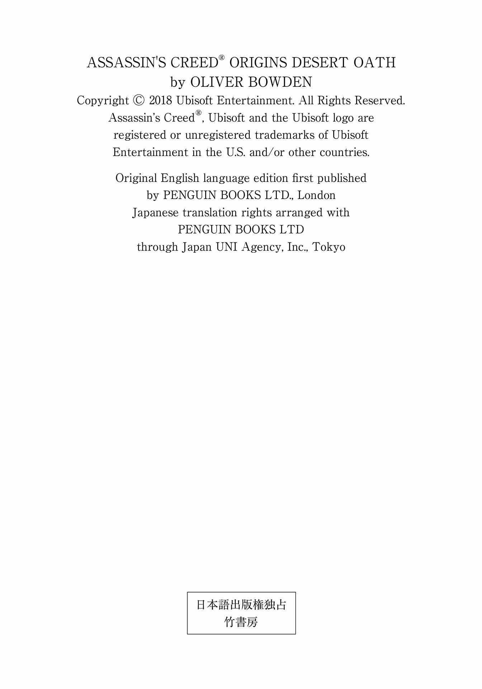
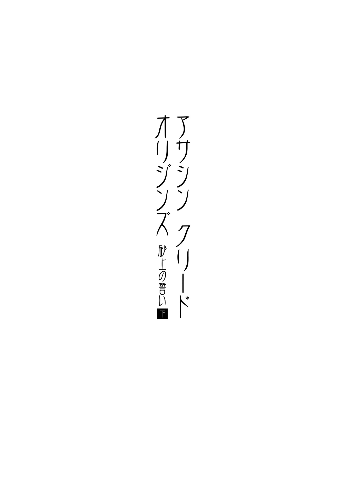

| アサシン クリード オリジンズ：砂上の誓い 下 (竹書房文庫) | |
| オリヴァー・ボーデン | |
| 竹書房 (2018) | |
この作品は縦書きでレイアウトされています。
また、ご覧になる機種により、表示の差異が認められることがあります。
一部の漢字が簡略字で表示されていることがあります。

人物紹介
バエク.........戦士集団（メジャイ）の一員
アヤ.........バエクの恋人
サブ.........バエクの父。メジャイの偉大なる戦士
アーモス.........バエクの母
トゥータ.........物乞いの少年
パネブ.........トゥータの父
ケンサ.........ヌビア人の女戦士。バエクに狩りの手ほどきをする
セティ.........ヌビア人の戦士
ネカ.........セティの弟
へモン.........メジャイ最高位に座す〝ジ・エルダー〟
サベステット.........へモンの右腕
バイオン.........殺し屋
ライア.........謎の組織「古き結社」のメンバー。元戦士
セオティモス.........古き結社のメンバー
メンナ.........墓荒らし

34
アレクサンドリアを出発する前、バイオンはもう一度最後にライアと会った。今回、落ち合ったのは、ライアにとってはよりくつろげる場所だった。青々とした葉が生い茂るイチジクの林の下には、石の腰掛け台がひとつだけ置かれているが、周囲にはそれ以外何もない。ここにいるのは、自分たちの他には、木の周りに飛び交う虫の群れだけ。盗み聞きされる心配もなく、ゆったりとした空気の中で会話ができそうだ。ライアの不安材料は、全て排除してある。唯一排除できなかったものがあるとしたら、それはバイオンの存在に他ならない。
バイオンはライアに最新の情報を報告しながら、イチジクの実の甘い香りを吸い込み、木々を舞う虫を眺めた。今回の収穫は、若き歴史学者ラシディから得たへモンとサベステットについての情報だ。このふたりは、ダルティに暮らす師匠と弟子である盲目の少年という関係らしい。
「へモン......。そいつは年寄りなんだろ？」
ライアは軽蔑したように鼻を鳴らした。
バイオンは、指揮官と横に並んでいてよかったと思った。今、自分の顔には、相手に対する嫌悪がありありと浮かんでいるはずだ。奇妙なものだ、と彼は思った。旧知の仲の指揮官は野心的で、見当違いな自信のせいで判断を見誤ることもあるが、考慮もせず、疑問を抱かずに物事を簡単に受け入れてしまう愚か者ではない。とりわけアレクサンドリア郊外の自宅で自分が見たライア──隣に座り、時折目を閉じて沈みゆく午後の太陽に顔を向けているこの男──は、全く異なる不愉快な人間だった。
「では、すぐにダルティへ発 つのだな？」と、ライアは訊 ねた。「我々の使命を続けるために」
この使命のどの部分が〝我々の〟ものなのか、とバイオンは首を傾 げそうになったものの、いつものように平然と返事をした。
「早朝に出発します」
バイオンは、あらかじめ着手しようと計画していた仕事に思いを馳 せた。
「よし。その年寄りと盲目の介護人が、君の手にかかって亡き者になったという報 せを楽しみに待っているぞ」
「はい」と、バイオンは短く返した。その通り、へモンとサベステットはもうすぐ死ぬことになるだろう。それは、太陽が毎朝東の空に昇るのと同じ、避けられない事実だ。連中はほどなく故人となり、ライアはその後、新たな使命を持ちかけてくる。毎度のことだ。バイオンにはわかりきっていた。こちらが使命をひとつ終えるたび、指揮官は次のひとつを与える。その繰り返しなのだ。
とはいえ、それが嫌なわけでもないことは、自分でも気づいていた。
血が騒ぐのは、先祖から受け継いだ何かのせいだろうか。神から与えられた才能は、世のために使うべきだ。
人は死ぬ。だが、戦 で命を落としても、病で力尽きたとしても、結局、生まれ変わる。その時期を自分が少し早めてやったとしても、何も変わらないのではないか。死は、万人に訪れる。誰にでも、平等に。早いか遅いかだけの違いだ。死後の世界では、平穏がバイオンの犠牲者を待っている。これまでの人生から解放されて少し休息し、新たな人生に向かうのは、それほどひどい運命なのだろうか？
「我々の企ては、なかなかうまくいってる」
そう語りかけてくる指揮官の横で、バイオンはあれこれ考えるのはひとまずやめて、この男に集中することにした。
「これだけ早い段階で首謀者を見つけるのは。そう思わないか？ 木が倒れる前に、根っこを切り落とすようなものだ」
ライアは腰掛け台にもたれかかり、太陽を再び見上げた。その横顔は、己の言葉に酔いしれているようでもあった。
傷痕が痛む。バイオンは、どこか他のところにいたいと思った。
「そうですね」
指揮官の発言には、全く興味はない。だが一応、相 槌 は打っておく。
しばし沈黙が流れた。ふたりの間に少し気まずい空気が漂い、それは、互いの存在をそれぞれに意識させた。
「バイオン、殺し屋の君でも、人の心はあるのだろう？ 私にとってこの使命がいかに大事か、君にもわかっているはずだ。これを完 遂 させたときに、私がどれほど感謝するかも君は知っている」
「あなたはすでに例の紋章を一枚持っています」
バイオンは表情を全く変えずに言った。横にいる男は、こちらが報酬など気にしておらず、殺しそのもので十分満足だということを全く理解していないのではないか。「すぐに、さらに数枚手に入りますよ」
「バイオン、私を失望させないでくれよ」
ライアは怪 訝 そうな表情になった。バイオンは心の中で指揮官の焦りを楽しんだ。無論、表にそれを出すことはない。
「指揮官、ご安心ください。あなたを失望させたりはしません」
ライアは白い歯を見せた。あなたの人生をより素晴らしいものにするために邁 進 しますと言わんばかりの部下の発言に、指揮官は満足しているようだった。
「そうか。頼んだぞ」
そのまましばらく並んで座り続けた後、ライアが再び口を開いた。
「地主のワカレを覚えているか？」
「ええ、覚えています」
「あいつは、あの騒動の後、少しして殺された。自宅でな。知っていたか？」
バイオンは何も返事をしなかった。それがどうした。今日の面会とは、なんのつながりもない話題だ。
ライアは立ち上がり、座ったままのこちらに視線を落とした。
「もし私が調査することになれば、ワカレは眼 窩 から脳に至るナイフの刺し傷で死んだ事実を発見するかもしれない。ふとそんなことを考えたんだ」
ふと考えた、か。バイオンは鼻で笑いたい気分だったが、無表情を貫いた。そして、ライアが立ち去り、相手の姿が視界から消え、足音が聞こえなくなるまでその場に腰掛けていた。
その夜、宿に戻る前、バイオンは街を散策し、市内の斬新な変化、特にギリシャの影響などに感嘆した。そうだ。アレクサンドリアは、ナウクラティスでの日々を思い起こさせる。アレクサンドリアもナウクラティスも存在価値がある重要な街だ。もしも街の擬人化が可能なら、街自身が己の重要性を十分承知しており、なおかつ周りからちやほやされるため、自 ずと高慢さが滲 み出てしまう......とでも言おうか。とにかくナウクラティスは、アレクサンドリアと似たような雰囲気が漂っているのだ。ここでは、小作人 や貧乏人 を見つけるには、あちこちを探し回らなければならない。それだけ、アレクサンドリアでは、小汚い顔をした市民は稀 なのだ。広い大通りも、狭い横道も、歩いているのは富裕層ばかり。彼らは皆、自分自身が重要な存在だとわかっており、それに異を唱える者などいない状態の中で、幸福感と安心感を味わっている。彼らは金持ちで、小作人とは真逆。財力の恩恵をたっぷり受けて生きている者たちだ。かつてバイオンは、裕福な連中の望みで人殺しをしていた。そんな人生とは手を切ったと信じていたにもかかわらず、再び同じことをし始めている。
そんなことをあれこれ考えて歩いているうち、彼は、ある立派な家の扉の前にやってきた。金持ちが住む居住区に溶け込むように佇 んでいる豪邸だった。バイオンが扉を叩 くと、メイドが応対した。彼は、この家の主人、主人がだめなら女主人に会いたいと頼んだ。
年配だが、小ぎれいな身なりのメイドは怪訝そうにバイオンを見た。
「なんですって？」
「ですから、この家のご主人、セオティモスと話ができれば、と思いまして」
メイドは忍耐強そうな女性だったが、もしバイオンの外見に脅威を感じたのであれば、何も答えてはくれなかっただろう。だが、彼女はきっぱりとこう言った。
「ご主人は亡くなりました」
短い返答には、ほとんど感情は込められていなかった。
「わかりました」と、バイオンは息を吐いた。そして、メイドがお悔やみの言葉を待っているのだと気づいたので、「それを聞いて、とても残念です」と付け加えた。
彼は立ち去ろうとして歩き出したものの立ち止まり、肩を落としてから、くるりと回れ右をして再びメイドと向き合った。
「なぜ亡くなられたのですか？」
「盗賊に襲われたんです」
「盗賊......。一体何を盗まれたんです？」
「何も」と、メイドは悲しそうに首を振った。「何本かの巻き物以外は──」
35
死の直前に、学者のラシディはバイオンに告げた。へモンとサベステットはダルティで見つけられるはずだ、と。こうして、バイオンの次なる目的地は決まったのだった。
ダルティで、彼は金を払って情報を収集し、へモンとその被保護者は集落の外れに住んでいるということを知った。さらに、その老人は神秘的な存在だと噂 されており、サベステットを幼い頃に引き取っていた事実も発見した。目の見えないサベステットは、かつて道端で物乞いをしたり、茶碗を使った手品を披露して日銭を稼いでいたという。そこに通りかかって少年の仕事ぶりを見たへモンが、その子の目がほとんど機能していない事実を知って、大層感銘を受けたらしい。
ふたりは親しくなり、へモンはサベステットを街の東部にある家に連れて帰って、一緒に住まわせるようになった。サベステットは今では二十代前半となったが、目が見えなくてもほとんど日常生活に支障がないにもかかわらず、若者なら抱きがちな冒険旅行や大きな街に出かけたいという願望は全く示さないようだ。
老人と少年の絆 。なかなか興味深い話ではないか、とバイオンは思った。もっとも、全く理解はできないが。
下準備として市場に出向いたバイオンは、帯革、小さな鳥 籠 、提籠 、把 手 が二本付いた銅製の鉢を購入した。銅の器は、さっそく帯革に取りつける。次に、鳥籠に餌を仕掛けてネズミを捕まえ、それを提籠に移した。宵 闇 が迫る頃、バイオンは標的の自宅に赴き、すっかり暗くなるまで身を潜めていた。行動開始は、家の主たちが完全に寝入ったと確信してからだ。
どのくらい待っただろう。闇夜が辺りを覆い尽くしている。いよいよ動き出すとするか。そこでバイオンは、ネズミ、提籠、鉢を取り出して玄関まで移動した。それを地面に置いてから短剣を抜き、耳を澄ませる。遠くの方でハゲタカが鳴いている以外は、静寂に包まれていた。家の中からは、何も聞こえてこない。物音ひとつしない深閑たる空間だ。
入り口の扉を少しだけ開け、煙のように忍び足でするりと室内に滑り込む。しんとした中で聞き耳を立てつつ、しばしその場で佇み、暗闇に目を慣らすつもりだった。頭の中では、次にとる行動のことを考えていた。
暗がりでは、目からの情報が入ってこない分、聴覚や嗅覚が研ぎ澄まされる。微 かな音にも敏感になり、己の呼吸音や心臓の鼓動が増幅されて大きく聞こえてくるのだ。バイオンはそんな自分自身の五感の鋭さを自負していた。だからこそ、ひどく驚 愕 した。
首筋に冷たい刃物の感触を覚えたときには。
「忍びのお方、私は目が見えません」
背後から若者の声がした。「私の世界は、今のあなたが置かれているように右も左も真っ暗闇です。ですが、あなたの喉に短刀を当てている分、私の方が有利ですね。それに、この家のことはあなたよりずっと詳しく知っていますから」
バイオンは身動きをせずにじっとしていた。こちらの首に刃物を突きつけている若者は、必要とあれば、容赦なく武器を活用するだろう。そうなれば、自分はたちまち命を落とし、任務は失敗となる。偉業のために命を犠牲したという名誉ではなく、敗北の末の死という屈辱しか残らなくなるのだ。そんなことはあってはならない。
バイオンか。あいつは所詮、人殺し......。仮にライアに自分のことを訊ねる人間がいたら、あの指揮官はそう説明するだけだ。
ふと彼は、もうひとりの気配を感じた。自分の前にも誰かが立っている。背後にいるのが若者ならば、目の前にいるのは──。
「サベステット、その者の短剣を奪いなさい」
暗がりの中から聞こえた声は、案の定、しわがれ、年齢を感じさせた。
首に短刀を押し当てる手に力がこもり、ちくりとした痛みが走る。その痛みが、抵抗するなとバイオンに訴えていた。若者の手が背後から伸び、身体の前で握っていた短剣に届いた。
「武器を渡してもらいます」
サベステットが耳元で囁 いた。
バイオンの目は、すでに闇に慣れていた。机の脇にへモンが立っているのが見える。机がやけに入り口近くに置かれているのは、おそらく防柵 として利用しているからだろう。間違いない。このふたりは、刺 客 が来ることを知っていた。バイオンのようにダルティでは全く知られていない人間でも、彼らがこちらについてなんらかの警告を受けていたのは確実だ。この点では、自分がうっかりしていたとしか言いようがない。
バイオンの武器を取ろうと若者が手を伸ばすと、へモンは提燈 を掲げ、灯 りを点 けようとした。
しかし、そんなことは起こらない。
自分が許すわけがない。
バイオンは、目の見えない青年に敢 えてこちらの刃物を摑 ませた。短剣の柄に付いた革 紐 がするりと手首を抜けていくのがわかる。相手がこちらの武器を奪い、油断する一瞬の隙を待ち構えた。
今だ。動け！
革紐がサベステットの手首に滑り込んだのをきっかけに、バイオンは目にも留まらぬ速さで腕を上げ、青年が短刀を当てている方の手を摑んで、ぐいと前方に引っ張った。その瞬間、相手の武器の刃先がバイオンの頸 部 に深く食い込みそうになったが、彼は咄 嗟 に後方にのけ反 って避けた。サベステットは大声を上げて短剣を前後左右に振り回したものの、平 衡 を崩していたこともあり、バイオンにはかすりもしなかった。
へモンも叫んだ。弟子の目の代わりになろうとしてか、「右だ！」「もっと左だ！」と指示していたものの、若者の闇雲の攻撃は全く功を奏さなかった。今や、バイオンは相手の動きを完全に読み、落ち着いて刃 をかわすことができていた。防柵として置かれた机の周囲を移動しつつ、サベステットに突進する隙を狙う。相手が頭上から短刀を振り下ろそうとしたので、バイオンは身を低くしてその懐 に飛び込んだ。刃物を持つ手首を押さえると同時に、サベステットを机に押し倒した。激しく揉 み合いながら相手の武器を奪うと、力一杯短刀の尖 端 を肩に深く刺し込み、青年を机から動けないようにした。あまりの激痛にサベステットは絶叫し、足をばたばたさせて暴れている。
愛 弟 子 の危機を目 の当たりにし、老人もついに武器を取り出した。闇の中で、長い刃が弧を描く曲 刀 が鈍い光を放っている。サベステットを机の上に押さえつけて顔を殴りながら、バイオンは肩越しに何度もへモンの動きを確認した。老人がこちらに飛びかかってきた瞬間、彼はさっと身体の向きを変え、サベステットの手首に革紐でぶら下がっていた自分の短剣を摑み、敵の剣の刃を止めた。金属の刃と刃がぶつかり、火花が上がる。一旦へモンを後方に押しやったものの、相手は再び剣を持って向かってきた。今度は、横に払われた鋭い刃がバイオンの顔面を狙ってくる。彼は反射的にサベステットの腕を取って盾代わりにし、己の短剣で攻防した。
机に横たわる青年の上でほぼ仰 向 け状態という奇妙な体勢のまま、バイオンはへモンの曲刀と五分の戦いを繰り広げていた。サベステットは背後でうめいているが、打撲の衝撃と短剣に貫かれた痛みで意識は朦 朧 としているようだ。こちらに反撃してくるだけの余力は残っていないだろう。
しかしながら、埒 が明かない展開に業を煮やしたのか、へモンは戦術を変えた。突如として、机の反対側に回り込んだのだ。バイオンは、その老輩のすばやい身のこなしに驚いた。年齢よりもはるかに俊敏で、自分と引けを取らないのではないかと思うほどだ。立ち位置を変えたへモンは、バイオンの頭の方から刃を薙 ぎ、彼はのけ反ったまま相手の動きに対処しなければならなかった。とはいえ、自分の背中の下には愛弟子がいるため、へモンは刃を突き立てることができないでいる。その一方で、バイオンが気を緩めた途端に、こちらの鼻が削 がれてしまう危険性は高かった。視界も悪く、身動きが思ったように取れないのも、戦いをだらだらと長引かせている一因だ。年寄りが体力を消耗するのを待てばいいのかもしれないが、サベステットが回復して反撃に出ると困る。一体どうすれば──。へモンの攻めに対処しつつ、バイオンは打開策を必死で考えた。そして、彼はある作戦を閃 いた。
よし、今だ！ バイオンの頭上を相手の刃がかすめた次の瞬間、彼はサベステットから離れ、机の下に潜り込んだ。すかさず床の上を滑り、机の向こうに立つへモンの足首を握り、思い切り引っ張った。あまりにも突飛なこちらの攻撃に、老人はいとも簡単に均衡を崩し、勢いよく後ろ向きに倒れた。落下した後頭部が石床に当たり、耳 障 りな鈍い音を立てる。そのままへモンは動かなくなった。
思いがけず手こずってしまったが、小 競 り合いは終わりだ。肩で息をするバイオンは、首筋に生温かい感触を覚えた。指で触れると、小さな切り傷があり、少し出血していたものの、心配するほどではない。サベステットはくの字に体を曲げ、弱々しい唸 り声を上げている。わずかに足が動いているが、肩に刺した短刀で机に固定されているため、すぐに身動きは取れないはずだ。とにかく生きてはいる。
よし。
次に年寄りの傍 らにひざまずいたバイオンは、相手の脈を確認した。素晴らしい。へモンも死んではいなかった。これから行うことのために、ふたりには生存していてもらう必要があるのだ。今一度、サベステットの身体が机から動けないようになっているのを確かめた後、バイオンは彼らをそのままにし、玄関前に置いてあったネズミの入った提籠を取ってきた。部屋に戻ると提燈に火を灯 し、扉を閉めた。
さあ、これで手 筈 は整った。
36
「俺が誰かわかるか？」と、バイオンは問いただした。
提燈の灯りが室内を暖色に染め上げ、暖房用火鉢の炭は真っ赤に燃えている。部屋の中には椅子が二脚しかなかったので、うちひとつに老人を座らせ、両手を背中に回して縛り上げた。頭の怪 我 から顔を伝っていた血はすでに乾き、白い髭 もところどころ赤黒く固まっている。
「おぬしが何者か......わしにはわかっている」
へモンは途切れ途切れに答えた。時折、身体を揺すって自分と椅子を巻く綱を緩めようとするものの、バイオンを見る目は虚 ろだった。「おぬしは、死の使いだ。わしらの全てを奪うために、ここに来た」
その通り。俺は〝死〟そのものだ。標的にそう理解されていると知り、バイオンは気分が良かった。だが、表情は変えず、彼はへモンにうなずいた。
「ああ、そうだ。それだけじゃないがな」
「あの子は何も言わない」
へモンは机の上で大の字に横たわるサベステットに視線を移した。その姿は、まるで生 贄 だ。肩に刺した刃物は抜いてあるが、四肢を机の脚に縛り、チュニックを切り裂いて胴体を露出させてある。バイオンは、若者の胸の上に銅の鉢を逆さにして置き、その中にネズミを放り込んだ。
鉢の内側で小動物が動き回り、銅を引っ搔 く音が聞こえてくる。外に出ようと必死なのだ。
ときどき頭を上げ、サベステットは勇敢でいようとしているが、器の中から聞こえてくる音に神経質になっているのがわかる。音だけではなく、ネズミが動く感触を素肌で直 に感じているに違いない。バイオンがこれから何をしようとしているのか、すでに気づいているだろう。
「あの若者が話さないのは、こちらも承知している」
バイオンは目を細めてへモンを見やった。「話すのは彼ではない。おまえだ」
「わしも話すつもりはない」
ジ・エルダーと呼ばれる指導者は、きっぱりと言い、こちらを睨 みつけた。
「果たして、どうかな」
バイオンはにやりと笑った。「では教えてもらおう。おまえの仲間はどこにいる？ 最後の生き残りのことだ」
老人は苦々しい顔をし、首を横に降った。「わしらの生き残りなどおらん。おぬしは、メジャイを絶滅させたことを喜びながらここを去るのだろうな」
へモンは、自身と被保護者の青年がほどなく命を落とすと悟っているのだろう。
「そうだろうか」と、バイオンは冷静に受け答えた。「エジプトには、おまえの理想に共鳴し、自らをメジャイと呼ぶ連中がたくさんいると思うんだが」
彼は火鉢へと歩み寄り、熱された炭に息を吹きかけた。それに反応し、炭はますます赤く輝いた。
「おぬしが言う者たちは、真のメジャイではない。単なる模倣者、理想主義者、優勢な思想に反対する自分たちに酔いしれている社会の異端児だ」
へモンは、軽蔑したように顔を背け、唾を吐いた。「そのような者たちが存在していることは認めよう。だが、彼らはわしらの信条の本当の信奉者ではない」
「そいつらは、血統を受け継いでいない。そう言っているのだな？」
こちらの問いに、老輩はうなずいた。
「そして、メジャイの血筋はもう絶えた。何年も昔、わしの妻と生まれたばかりの息子の死をもって、途絶えたのだ。さあ、殺しなさい。我が一族の最後の残り火を消し、仕事を終えるがいい」
バイオンはため息をついた。その実、心の中は、目前の老人の勇気に対する感嘆でいっぱいだったのだ。勝算はほとんどないこの厳しい状況下にもかかわらず、ぶれることなく己の信念を貫こうとする相手の強さに、彼は胸を震わせていた。しかし、やるべきことはやらねばならない。
「おまえは正しい。メジャイは絶滅寸前だ。だが、俺の雇い主はアレクサンドリアである文書を見つけたんだ。そこには、メジャイが再集結する、新しいメジャイが世代交代する準備ができていると書かれていたらしい。おまえは自分が最後の正当なメジャイだと主張しているが、俺が何を手に入れたか知ってるか？ おまえの言い分とは真逆のことを証明する一枚の紋章だ。さあ、俺にこれ以上残酷なことをさせる前に、正直に言うんだ。メジャイの生き残りはどこにいる？」
しかし、へモンは首を横に振るばかりで、バイオンは苛 立 って唇を嚙 んだ。こちらとて、このまま引き下がるわけにはいかない。
「そうか。では、次の段階へ進むとしよう。ふたりとも、何が起こるかはわかっていると思うが、一応説明しておこう」と、バイオンはしたり顔で言った。「真っ赤に熱した炭を、逆さに置いた銅の容器の上に載せる。当然のことながら、容器はたちまち熱くなり、中のネズミは逃げようと必死になるはずだ。まずは銅の容器をがりがりと齧 るだろうが、己の鋭い歯でも硬い金属に穴が開けられないと気づけば、他の箇所を試すことになる。へモン、ネズミは一体どこに出口を作ろうとするかな？」
こちらの話を聞いて、サベステットは唸り声を上げ、へモンは顔をしかめた。
「ネズミが柔らかい場所に穴を掘れば、痛みを伴うのは言うまでもない」
バイオンは淡々と先を続けた。「尋常ではない痛みだ。ネズミがどこから入って、どこから出るかによるが、驚くほど長い道になるだろう。俺は実際に見たことがある。正確に言えば、以前もこれを実行したんだ。自分は絶対にこんな死に方はしたくないと思ったよ」
彼は一旦そこで大きく息を吐いた。実のところ、本当はどうでもいいと考えているのだが、長年の経験で──何度も殺しを重ねた結果──学んだのは、同情しているふりをすると、どういうわけか、さらに標的を動揺させるということだった。
「もう一度訊ねる」
そう言いながら、バイオンはふと思った。今、この瞬間、へモンは心の最も深い場所で何を考えているのだろうか、と。「メジャイの生き残りはどこだ？」
それでもまだ、老人は首を横に振るだけだった。しかし、さっきよりは心が乱れている気がする。
「こんな野蛮な方法をする必要などない。メジャイの生き残りなど存在しないのだ。すでに話しただろう？」
頑固なじじいだ。バイオンは火ばさみを使い、焼けた炭を火鉢から摑み上げた。サベステットの胸に置かれた銅の容器の底の部分に、赤く変色した一粒を載せた。途端に、中のネズミが激しく動き回るのがわかった。銅の器の内側を走ったり、匂いを嗅いだり、落ち着かない様子が感じ取れる。急に温度が上昇したので、危険な状態だと察知したかのようだ。サベステットはとうとう泣き声を漏らし始めた。
バイオンはさらにもうひとつ炭を載せてこう告げた。
「残念だが、こうするしかないんだ。本当のことを話してくれればいいのに」
容器の内側から聞こえてくる音から、ネズミの動きがさらに速くなり、死に物狂いになっていく様子がうかがえる。銅製の鉢は熱を帯び、輝き始めた。ネズミの動きもさることながら、器が高温になるだけでも肉が焼けて相当の苦しみのはずだ。案の定、サベステットは悶 え出した。とはいえ、この後に待ち受ける展開はそれどころではない。この拷問を目の当たりにしたことのあるバイオンは、ネズミが逃げ道を求めて容赦なく腹を嚙み、肉を引きちぎり、中に潜っていく過程を知っていた。生きたまま肉をほじくられる連中の絶叫も耳にした。穴を掘り続けたネズミの鼻の頭が、人間の肋 骨 の間から出てきた瞬間も覚えている。
年寄りの額に汗が浮かび始めた。
「やめてくれ。おぬしの狙いは、わしであろう」
へモンは弱々しく訴えた。だが、バイオンは首を横に振り、容器に顔を近づけて炭に息を吹きかけた。真っ赤な色がさらに明るさを増し、部屋の中がぱっと輝く。
ネズミが熱さで苦しそうにキーキーと声を上げている。若者の肌に鋭い牙を立て、肉を齧り出すのも時間の問題だ。サベステットは覚悟を決めたのか、泣くのをやめ、精 悍 な顔つきでじっとしている。バイオンが標的に少しでも関心があったなら、この若者の態度に感心しただろう。しかし、何も気にかけなかったし、心が動かされることもなかった。
さっさと話せ。バイオンは胸の中で煽 った。この拷問を受けた奴 らは全員落ちた。最後には痛みに屈するのだ。なぜ敢えて抗 おうとする？
「時間がない。そろそろネズミも限界だ」
バイオンはへモンに警告した。「一度ネズミが穴を掘り出したら、止めるのは難しいぞ。さあ、どうする？ 今ならまだ間に合う」
へモンはしばしこちらを睨みつけていたが、ため息をつき、「わかった......」と肩を落とした。「話そう。だから、炭を外してくれ。そうしたら教える」
その真 摯 なまなざしを見たバイオンは、老人の瞳に噓がないことを悟った。そこで火ばさみを手にし、三個のうち一個の炭をどかした。ふたつは残しておいた。
「頼む......お願いだ」
懇願するへモンに「後もう少しだ」と、バイオンはにやりと笑った。「さあ、教えてくれ。おまえが真実を話しているとわかれば、残りの炭も取り除いてやろう」
高齢の指導者は悲嘆に暮れつつ、とうとう口を割った。
「──もうひとり、メジャイがいる」
バイオンはほくそ笑んだ。
「本当のメジャイだ。メジャイの復興の始まりとなるひとりだ」
バイオンは首を振った。
「それじゃ不十分だ」
銅の鉢の中のネズミは、まだ凄 まじい勢いで逃げ道を探している。
「ど、どういう意味だ？」と、へモンは口ごもりながら訊 いた。額に浮かんだ玉のような汗が光っている。ネズミの立てる音が、老人の不安を助長しているのは確かだ。
「血統があるんだったな。メジャイは血で受け継がれる。そうだろ？」
バイオンはけしかけるように言った。こちらが何を意味しているか察したらしく、へモンは唸るように言葉を絞り出した。
「......残るメジャイは、ふたり存在する。父とその息子だ」
年寄りの目を覗 き込み、相手が噓をついていないことを確信する。
「よし。他には？」
バイオンはふたつ目の炭を火鉢に戻し、最後の一個も火ばさみで取った。だが、まだ火鉢には戻さず、鉢の上で摑んだままにする。そっちの出方次第では、いつでも拷問を再開してやるという無言の意思表示だ。
青年は息を止め、ネズミに肉を食い破られる瞬間に備えて背を丸めて全身を緊張させていたようだが、ようやく脱力した。熱源がなくなった銅の鉢も、次第に冷えていくだろう。
「名前を言え」
威圧的な物言いで、バイオンは真っ赤な炭を挟んだ火ばさみをこれ見よがしに揺らしてみせた。
高潔な指導者、ジ・エルダーは唇を嚙んでいたが、がっくりとうなだれた。
「......父親はサブ。息子はバエクだ」
その虚ろな目に浮かんでいるのは、己を恥じる感情だろうか。大切な若弟子の苦痛を取り除くためとは言え、敵に屈した自分を許せないのだろう。しかも、へモンはわかっているはずだ。これで彼らの命が助かるわけではないことを。どのみち彼らを待つのは、死以外にはない。サブとバエクの居場所を暴露したら、始末される。その運命を変えられるわけでもないのに、彼は貴重なメジャイの生き残りとメジャイの存続を大きな危険に晒 すことになったのだから。
37
メンナの隠 れ家 を襲撃してから数週間が経過していた。あの激闘で傷ついた皆の身体が完全に回復したかどうかは、定かではない。切り傷や打撲は治った。あるいは、一番の痛手を受けたネカの場合がそうだったと言うべきか。しかし、僕らの頭の中ではあることがずっと渦巻いていた。とにかく戦いが終わって、アヤとトゥータと僕は、テーベにあるトゥータの母親の家に戻った。玄関から中に入った途端、台所からトゥータの母親が駆けてきて、息子の身体をしっかりと抱き締めた。
「ああ、トゥータ！ 私の可愛 い息子。今まで一体どこに行ってたの？ すごく心配したのよ。不安で何も手がつかなかったわ」
母の胸に力一杯押しつけられ、トゥータの顔が潰れていたが、再会の喜びと安 堵 で彼は満面の笑みを浮かべている。幸せな親子の姿に、僕とアヤも嬉 しくなった。
母の腕の中で照れ臭そうにしながらも、トゥータは僕を見た。そのまなざしを見て、僕はトゥータとのある会話を思い出した。それは、メンナの潜伏先からの帰途、ふたりで並んで歩いていたときに交わしたものだ。
「兄貴、墓泥棒たちの隠れ家での戦いは、おいらの人生で最もわくわくした出来事だったよ！」トゥータは、興奮覚めやらぬといった感じでしゃべっていた。「やっつけるって決めて、実際にやっつけに行って、本当にやっつけたんだもん。すごいよ！」
彼に言われなくても、それはわかっていた。僕自身、同じ意見だったからだ。メンナとマキシタを追って、戦闘用馬車で追いかけたときの疾走感。無我夢中で馬を駆った高揚感。あの夜、これまでに味わった何よりも胸がどきどきした。それだけではない。ここ数ヶ月、おそらくシワを発って以来、自分の中で少しずつ積み上げられていた何かを、より顕著に感じるようになった。
ああ、その感覚はわかっている。それが何かを、僕は正確に知っている。
目的意識だ。自分の目的について、僕はこれまでの旅の間にしっかりと自覚するようになっていたのだ。ケンサたちと合流し、メンナを倒したことで、それはさらに明確になった。
目指すものがある人生は素晴らしい。それを達成させた人生はさらに素晴らしい。目を輝かせて語るトゥータを見て、僕はそう思ったのだ。
メンナとマキシタの死体は、ハゲタカたちの餌として、砂漠に置き去りにした。生き残ったメンナの手下たちは、物置に閉じ込めた。それから馬小屋の馬を自由にし、僕たちはあの場を離れた。物置の中の連中はそのうち逃げ出すかもしれないが、その頃には、僕らはかなり距離を稼いでいるだろうし、報奨金を払う人間でもいない限り、連中がこちらを追いかけてくるとは思えない。
あの戦い以来、ケンサとセティは奇妙な無力感に襲われているふうにも見えた。何年にも及んだメンナとの争いを制し、勝利と平和をついに手に入れた喜びを堪能していた彼らだったが、これまでの全てを捧 げて追ってきた標的が消えた今、心にぽっかりと穴が空 いてしまったのかもしれない。メンナを殺し、父との約束を果たしたことで、ヌビア人たちは途方に暮れているのだろうか。目的を失ったために。
敵の根 城 からの帰り道、ケンサは無言で、何かを深く考え込んでいた。ネカの体調が完全に回復したら、その時はエレファンティネ島に投獄されているメジャイについてもっと情報を手に入れる、と彼女は約束してくれた。僕たちが必要な手がかりは、今のところ、その人物だけだ。しかし、ケンサたちが他にできることは何だろうか？ 新たな目的となるようなことはなんだろう。ネカが全快し、エレファンティネ島のメジャイの調査が済んだ後、ヌビア人たちは、また放浪の旅に出るのだろうか。その可能性は高い。ケンサに心からの別れを告げる、その日は近いのだろう。
それまでは、少なくとも当面の間、彼らは以前と同じような生活に戻った。ネカは任務を再開する準備ができたと宣言し、南に旅立った。僕らはじっと報せを待つしかなかった。
ようやく彼が戻り、ケンサがトゥータの母親の家までやってきた。通りに呼び出された僕たちは、彼女が以前と違っていることに気づいた。メンナの隠れ家での死闘後の、喪失感でふさぎ込みがちだったケンサはそこにはいなかった。瞳には活力が蘇 り、生き生きとしていたのだ。
ケンサはこちらをじっと見た。僕がよく知っているまなざしだ。彼女らしい尊大な顔つきに、僕の心は和んだ。
「ネカが、エレファンティネ島に投獄されているメジャイの情報を持って帰ってきた」
ケンサがそう切り出し、僕はどきりとした。彼女は深呼吸をし、さらに続けた。「あたしが間違っていたみたい。エレファンティネ島のメジャイは偽者ではないかもしれない。その人物が本物のメジャイの血を引く末 裔 だと示す情報を、ネカが手に入れたわ。なんでも今は、島の南部にある水門小屋の穴蔵に閉じ込められているようよ」
何か重要なことが明かされる、と僕は直感した。ケンサの気持ちが昂 っているのが、その目を見てわかったし、同時に、持ってきた情報を聞いて、僕がどんな反応をするのかを見極めようとしているとも感じたからだ。僕の胸の鼓動は、急に速くなった。もしかして......。いや、待て。鵜 吞 みにするな。糠 喜 びだけはごめんだ。心の中で葛藤していると、ついにケンサが告げた。
「バエク、もしネカが正しければ......その囚人は、あんたの父さんだわ」
38
トゥータは、自分がつけられているとは夢にも思わなかった。だが、貧民窟 に向かう狭い横道を半分まで来たとき、目の前に人影がぬっと現われた。
それまで、トゥータはわくわくしていた。というのも、アヤ、バエク、ヌビア人たちと新たな冒険の旅に出かけるつもりだったからだ。今回は、エレファンティネ島の地 下 牢 から、バエクの父親を救出するための遠征だった。
なぜ兄貴の父ちゃんは、牢屋にいるんだ？ トゥータはその理由がわからなかったが、やがて真実は明らかになるだろうし、正直なところ、トゥータはあまりに気にしていなかった。メジャイについていろいろ学んだ今、メジャイと聞いただけで、彼にとっても重要で、胸躍ることのように思えたが、バエクとアヤにしたら、もっと重要で、ずっと興奮することなのだろう。ふたりがわくわくするなら、自分だってそうだ。このところトゥータは、自分が仲間のひとりで、皆のために役立っていると実感していた。自分は存在する価値があるんだと、思えるようになっていたのだ。
とはいえ、そんな感情も、戦いの最中に味わった興奮とは比べものにならない。人が命を落としている場での気持ちを「興奮」という言葉で表現していいのだろうか？ まあ、そんなこと、誰も気にしないはずだ。然 るべき人間が命を落としたんだから。トゥータにとって大事なのは、自分が正しい行いをして、仲間のひとりであって、存在価値があること。そして、自分が重要な役割を担っているということだった。今の自分は、ジャウティで旅人から金品を騙 し盗 ったり、食べ物やわずかな銅貨をなんとか手に入れようと苦労したりして過ごした頃とは違う。あのときの自分はもういない。ここにいるのは、新しいトゥータだ。そして、次なる冒険に間もなく出発することになっていた。
そのときだった、人影が彼の前に立ちふさがったのは。トゥータは、その瞬間、これで全てが台なしになると悟った。
酒と不 摂 生 な生活のせいか、父親の目は目やにだらけになっており、自分自身とトゥータに対する嫌悪に満ちていた。眼光鋭いふたつの目玉は、まるで双子の鳥卜官 のようだ。痛みと絶望以外は何も約束しない目だった。
「ようやく見つけたぞ」
目を細めるパネブと向き合い、トゥータの心臓は早鐘のように鳴っていた。なんで父ちゃんがテーベに？ どうやっておいらの居場所がわかったんだ？ 様々な疑問が脳裏で渦巻く一方で、相手が自分のどんな反応を期待しているのかも摑もうとした。
そこでトゥータは、いつも通りに振る舞うことにした。そして、にやりと笑顔を作った。
「父ちゃん、ここで再会できるなんて嬉しいよ。会えなくなって寂しかったから。本当だよ」
パネブは息子の精一杯の演技を鼻で笑った。
「そいつはよかった。だったら、どうして俺をジャウティに置き去りにしたんだ？」
「父ちゃん、思い出してよ。もう少しでおいら、父ちゃんに殺されるところだったんだ。あのとき、あのまま、あそこにいたら、おいらは今、ここにはいない。とにかく、生きるために必死だった。だから逃げ出したんだ」
トゥータは首をすぼめた。「おまけに、おいらがテーベに来ることをとうちゃんはわかっていた。実際、他に行くとこなんてなかったわけだし。おいらが知ってるのは、ジャウティとテーベだけ。ジャウティに留まるわけにはいかないとなれば、冷静になった父ちゃんが、ここにおいらを探しに来るのは、ごく自然の流れだ」
父親はトゥータに顔を近づけて言った。
「ここに来てからも、ジャウティと同じように、うまいこと言って旅人から金銭を巻き上げてんだろ？」
そんな悪行からは足を洗った事実を明かせるわけもなく、トゥータは作り笑いをして首を縦に振った。父親と自分は今でも相棒だと思わせるため、その場しのぎの噓をついた。
しかし、パネブは騙されなかった。トゥータの細い腕を乱暴に摑み、思い切り強く締め上げたのだ。テーベでの幸せな毎日ですっかり忘れていた暴力の悪夢が、再び襲いかかり、幼い彼は恐怖に打ち震えた。父親は腕を握ったまま、勢いよく裏道の建物の壁に息子を叩きつけた。トゥータの全身に衝撃が走り、朦朧とする耳元で、父親の耳障りな声がした。
「俺を襲った奴 らはどこだ？」
酒臭い息。父ちゃんの匂いだ。これは、夢なんかじゃない。
幸いにも、賢いトゥータはすぐに機転を利 かせることができた。
「それ、おいらが知りたいくらいだよ」
彼はうなだれた頭を上げ、そう答えた。「母ちゃんから聞いたんだけど、あいつらは数ヶ月前に出発したって話だ。どこに向かったかを知る人間は誰もいない」
「本当のことを言った方が身のためだぞ。おまえひとりで、ここで何をしてたっていうんだ？ さあ、言え。おまえの〝お友だち〟はどこにいる？ 俺はあのふたりと話をしたいんだ」
「父ちゃん、痛いよ」
トゥータが訴えると、父親は腕の締めつけを緩めた。
「さっさと教えろ」
「ジャウティのあのふたりがどうなったかなんて、おいらは知らない。それに、あいつらは友だちなんかじゃない。おいらはここでも、ひとりで路上暮らしをしてる。ジャウティにいたときみたいに！ なんか文句あるか？」
「文句も何も、あまりに妙だぞ、トゥータ。貧民窟で悪知恵絞ってその日暮らしをしている家なき子にしては、おまえはずいぶん栄養状態が良さそうだし、身なりもきれい過ぎる」
「ろ、路上ぐらしって言っても、寝る場所くらいは確保してるんだよ」
トゥータは咄嗟に切り返した。
「ほう、そうなのか？ で、その寝ぐらとやらはどこにあるんだ？」
「川向こうのネクロポリスだよ。そこに古い墓があるんだ」
ほんの少し沈黙が流れた後に、平手打ちが飛んできた。頰を襲った激しい衝撃と鋭い痛み。しかしそれも、乱暴に腕を握られたり、壁に叩きつけられたり、酒臭い息を嗅がされたりするのと同様に、トゥータには馴 染 みのあるものだった。
「もう誰も使ってない墓なんだよ！」
彼は痛みを堪 えながら叫んだ。「何もかもが墓泥棒に略奪されたか、一度も使われたことがないか、どっちかなんだ。だから、死者や神々を冒 瀆 することにはならない。信じてよ。寒い夜に、墓穴に潜るとあったかいし、じめじめもしてない。それ以上望むことなんてないだろ？ 父ちゃん、本当に快適に過ごせる場所なんだってば。そこに連れてってやるよ。一緒にまた暮らせばいいだろう？」
ついに、父親はトゥータの腕を離した。一瞬、彼の脳裏に「逃げる」という選択肢が浮かんだが、相手の大きな身体が道を塞いでいたし、捕まった後にどれだけの仕打ちを受けることになるかを想像したら、とてもそうする気にはなれなかった。
「おまえにそう言ってもらえるとは、嬉しい限りだ」
父親は酔いが回ってきたのか、頭をぐらりと揺らした。その様子を見たトゥータは、このまま酔い潰れてくれて、難なくここから立ち去れるかもしれないと、微かな希望を抱いた。
「だけどな、おまえの父ちゃんはな、今、他に住むところがあるんだ。まあ、どのみち、こんな肥 溜 めみたいな場所に長居するつもりはないんでね」
トゥータは父親と目を合わせ、それを聞いて、がっかりしたような表情を示した。一方のパネブは、全く間に受けていないようだった。
「わざとそんな顔をしてみせなくてもいい」
父親は唾を吐き、呆 れ顔で続けた。「仮におまえが俺に愛情のひとかけらでもあったなら、ジャウティで俺が死んだと思って置き去りにしたりなどしなかったはずだ。図星だろ？」
「死んだと思ったら、置き去りになんかしない。父ちゃんは、あれだけひどい言葉を叫びまくっていたじゃないか。おいらがあの場に残ったら、おいらの方が死人になってはずだ。父ちゃんは、手が付けられないほど怒りまくってた」
パネブはうなずいた。
「とにかく、おまえには罪滅ぼしをしてもらわねえとな」
そう告げた父親は一枚の紙切れをトゥータに手渡した。そこには、宿の住所、そこで落ち合う時間、ある強盗計画の詳細が記されていた。「盗みに入るのに、おまえみたいなガキを使って相手を油断させる必要があるんだ」
パネブはにやにやといやらしい笑みを浮かべたが、すぐに恐ろしい形相になってトゥータを睨みつけた。「遅れるなよ」
父親は、さらに酒を求めてその場を去っていった。路地裏に残されたトゥータは、必死に涙がこぼれないようにと顔をしかめていた。街の真ん中の裏通りでぽつんと佇む彼は、ひどく孤独だった。
39
翌日、とうとう日没の時間となってしまった。暗くなるにつれ、苛立ちは募る一方で、トゥータは息苦しさも感じるようになっていた。貧民窟の外れにいた彼は、家に帰ろうとしているところだった。だが突然、叫び声が聞こえ、心が凍りついた。それが誰の声かはすぐにわかった。紛れもなく、父親のものだった。
単に声の主だけではなく、声の調子から父親の現状をも見抜いた。ひどく酔っ払っていて、ものすごく怒っている。そしてトゥータは、自分が見込み違いをしていたことにも気づかされたのだった。
「おまえがここに住んでいるのはわかってるんだ。この噓つきめが！」
父親の怒声に、何ごとかと、近所の住人が次々と窓から顔を出した。「黙れ！」「うるさい！」と、文句を言う者もいた。トゥータは奇妙な罪悪感を覚え、貧民窟の平和（そもそも貧民窟に「平和」なんて言葉は似合わないのだが）を壊したのは自分のせいのように思い始めていた。窓から首を出してこちらを見ている連中が、「全ての騒動の責任はおまえにある」と訴えている気がしたのだ。
すぐに、彼は母と妹のキヤを心配し、ひどく不安になった。昨晩、路地裏で父と遭遇した後に急いで帰宅し、開口一番、母に告げた言葉は、「あいつがここにいる」だった。
「どういう意味なの、トゥータ？ 誰がここにいるって？」
そう訊き返したものの、母はさして気にも留めていないようだった。事実を語っても、重要視はしていなかった。母と暮らしていたときの父も、酒癖が悪く、癇 癪 持ちで、すぐに手が出て相手を黙らせる人間だったが、今ほどの悪党ではなかったからだ。テーベに戻ってきて以来、トゥータがいくらそのことを言って聞かせても、母は今ひとつ理解してくれていないのだった。
「母ちゃん、あいつは危険なんだ」
「そんなこと言われなくてもわかってるわよ」
「違うんだ。母ちゃんが知ってる頃の父ちゃんより、ずっと悪い人間になってる。ネズミ以下の最低な奴 だ。悪魔だよ。本当に、ものすごく残酷で、暴力的だ。おいらはどこにも行かずに家にいて、母ちゃんたちが危ない目に遭 わないようにした方がいいんだ」
トゥータは必死に訴えたのだが、母は首を横に振るだけだった。何年もあのひどい亭主に対処してきたのだから、また現われても、うまくあしらえると、全くトゥータの意見に耳を貸してくれなかった。
母が父をやり過ごせるかどうか定かではなかったものの、トゥータは、エレファンティネ島に行きたいという思いが強かったので、次なる冒険に参加し、バエクたちの手伝いをしなければ後悔するとわかっていた。きっと、母ちゃんはうまくやれる。たぶん大丈夫だ。彼はそう信じ、それ以上、母を説得するのをやめた。もちろん、父に渡された紙切れに書いてあったことも無視した。
だが、トゥータの勝手な思い込みの代償は、結局、高くつくことになった。
パネブは貧民窟に姿を現わした。酔っ払い、憤慨して。しかも、トゥータが待ち合わせの場所に姿を見せなかったために、腸 を煮えくり返している。どう転んでも、この失態に目をつぶってくれそうもない。
いいか、トゥータ。彼は己に言い聞かせた。落ち着け。よく考えるんだ。この状況を解決できる唯一の方法は、正面対決だ。そして、とにかく、あいつを家に近づけてはならない。
でも、家にはアヤもバエクもいる。兄貴たちと一緒の方が、確実に父ちゃんを撃退できるのでは？
いや、ダメだ。兄貴たちにこれ以上、余計な心配をかけたくない。
トゥータの胸はどきどきしたままで、呼吸も浅い。一体どうすべきなのかを、あらゆる角度から考え、思いをめぐらせたが、途方に暮れて頭を抱えるしかなかった。もしあいつが自分をつけて家まで来てしまったのなら、母ちゃんとキヤの居場所も知られてしまったことになる。母ちゃんはようやく落ち着いた暮らしを手に入れたというのに、ここから去らないといけなくなるのか。そんなことは、絶対にさせられない。
そこでトゥータは、ある行動に出ることにした。本当は怖くてしょうがなかったが、それ以外に策が思いつかなかったのだ。彼は、近所の人々が顔を出して叫んでいる方とは反対に駆け出すのではなく、敢えて、叫び声が聞こえる方へと向かっていった。
そこには当然のことながら、父親がいた。トゥータが近づくのがわかると、パネブは息子の名を大声で呼びながら、拳を振るってきた。彼は巧みに父の攻撃を避け、拳は近所の家の壁に当たった。凄まじい勢いの殴打で、鈍い音とともに、土壁が少し崩れた。次の一発は、道を挟んで反対側の家の壁に食い込んだ。これこそ、トゥータが目 論 んでいたことだった。家を傷つけられた家主が、「どうしてくれるんだ!? 」と激怒して飛び出してくるのではないかと、考えたのだ。激怒しているだけではなく、非常にたくましく、喧 嘩 っ早 い家主。さらには、ものすごく虫の居どころが悪ければいい。そうすれば、家主が父と争っている間に、トゥータは逃げることができる。
ところが、不幸にも、そのような救世主は現われてはくれなかった。ついさっきまで、窓から顔を出して文句を浴びせていた連中は、ひとり残らず首を引っ込め、視界から消えているではないか。いつの間にか、そこにいたのは、自分と父だけになっていた。パネブは酔いと怒りで目が据わり、壁に寄りかかっている。トゥータがじっと睨みつけているのを見た父は、ゆっくりと体勢を立て直すと、肩を怒らせ、再び怒号を上げようとしている。
トゥータは踵 を返して逃げ出したいほどの恐怖を敢えて吞 み込み、無理やり笑顔を作って陽気にこう問いかけた。
「父ちゃん、ずいぶんと騒々しいけど、一体どうしたんだよ？」
胸を張った父親は、怒声こそ出さなかったものの、わざとらしく周囲を見回した。崩れかけた壁。剝がれた塗装。ぼろぼろに裂けた日よけの布。まるで贅 沢 な暮らしに慣れているかのように、貧民窟の光景に激しい嫌悪を顔に浮かべている。ジャウティの家はここよりはましだったかもしれないが、酒乱の父親との生活に比べれば、たとえ貧困地区でも、優しい母と可愛い妹との毎日は天と地ほどの差があった。トゥータは、自分を地獄に引きずり戻しに来たパネブと視線を合わせ、苦い胃液が込み上げてくるのを感じていた。
笑顔を崩しちゃダメだ。彼は必死に自分に聞かせ続けた。笑顔でいなきゃ。この場所は、母ちゃんとキヤにとっては安らぎの地だ。ここで父親を食い止めなければ、取り返しのつかないことになる。
「おまえ、どこにいたんだ？」
パネブが唸るように訊ねた。
トゥータはぎこちなく微笑みながら、はったりで切り抜けようと試みた。
「ひと仕事して金を稼ぐ気満々だったから、おいら、言われた通りに父ちゃんの宿に行ってみたんだぜ。でも、父ちゃんはそこにいなかったんだよ。父ちゃんの方からわざわざ会いに来てくれるなんて、ありがたいこった。今からでも、間に合うのかな？」
しかし、父はその言葉を間に受けることはなく、こう切り返したのだった。
「俺の宿がどんなところだったか言ってみろ」
思わぬ展開に、トゥータは内心ぎょっとしたが、白々しく口からでまかせを言い続けた。
「ああ、あそこね。なんだか、父ちゃんが泊まるにはもったいない場所だって思ったよ。ねえ、こんなところじゃなく、もっとまともなところに行こうぜ。父ちゃん、もっと酒が飲みたいんだろう？」
ところが、パネブは微動だにせず、仁王立ちのままこちらを見ていた。冷ややかなまなざしに射抜かれ、トゥータの心拍数はますます上がっていく。よほど酒をがぶ飲みしていたのか、父の髭も唇も濡 れているのがわかる。その口が開き、次に発した言葉がこうだった。
「あいつら、ここにいるんだろう？ おまえみたいな噓つきを産んだ母親と、俺の可愛い娘のキヤ。ふたりはここに住んでるんだな？ あいつらを探しに行く。あいつらは俺のものだ。俺から逃れる権利なんてなかったんだ」
トゥータは一瞬、心臓が止まったかと思った。これは良くない。いや、良くないどころか、最悪の状況だ。冷たい恐怖が背筋をぞわぞわと駆け上がるのを覚えつつも、彼は作り笑顔を崩さなかった。つとめて明るく、父親を丸め込もうと必死だった。
「それは違うよ、父ちゃん。前にも言った通り、母ちゃんたちはずいぶん前に引っ越したんだって。だから、おいらたちもここから出発しよう。ねえ、久しぶりで会ったんだから、父ちゃんの話を聞かせておくれよ」
パネブの表情が変わった。だが、トゥータは咄嗟に、父の感情の変化を読み取ることができなかった。
次の瞬間、父親は一歩前に踏み出し、彼のみぞおちに思い切り拳を埋め込んだのだ。
凄まじい衝撃に全身を貫かれ、トゥータは息もできず、悲鳴も上げられなかった。くぐもった声でうめき、腹を押さえて後ろによろめいた。ふと下を見ると、視界が赤く染まっていた。なんで赤いんだ？ 真っ赤だったのは両手だった。着ていたチュニックも、そして、腹も。これは......？ 現状が吞み込めず、トゥータは顔を上げた。そのとき、父親の手に短剣が握られているのがわかった。鋭利な刃が赤く濡れている。え？ まさか？ トゥータはようやく理解した。赤いのは自分の血なんだ、と。
パネブは頭を振っていた。酔っ払って単にふらついているかのようでもあり、当然の報いだと怒りに震えているようでもあり、困惑と後悔が入り混じっているようでもあった。どれが本当の気持ちなのかはわからない。すると、家に引っ込んでいたはずの隣人が、事の展開に驚いて再び窓から顔を出し、憲兵を求めて叫び出した。騒ぎに恐れをなしたのか、父親は慌てて通りの向こうへ走り去り、後ろ姿がどんどん小さくなっていく。
身体の力が抜け、トゥータはがくりと膝をついた。下顎がだらんと垂れ下がり、口が閉じられない。意識も朦朧としてきた。それでも、ひとつだけはっきりとわかっていた。
今すぐ家に帰らなきゃ。母ちゃんたちに危険が迫ってると知らせないといけない。おいらが死んでしまう前に──。
40
「あのいたずら小僧は、どこ？」
アヤは茶目っ気たっぷりに訊いてきた。
「さあね」と、僕は首をすくめた。
トゥータは自由な子だ。自分自身で規律を作り、干渉を好まない。同時にこちらの手も煩わせない。僕たちは、そんなトゥータを気に入っている。大人に頼りっ放しの甘えん坊だったら、トゥータらしくはない。ただ僕は、なんとなく気になったので腰を上げた。
「ちょっと探しに行ってくるよ」
アヤは身を屈 めた僕に口づけをし、裏庭へ戻っていった。そこでは、キヤが母親と一緒に日暮れ前の美しい空を眺めている。
表に出た僕は、家の前の通りに立って左右を眺めた。左手の突き当たりは広場になっていて、中央には噴水がある。ただし、もう使用されていなくて、草が生え放題になっていた。そちらに、トゥータがいる気配はない。
右手は、貧民窟の奥へと続いている。大きな荷馬車やら積み荷が道を塞いでいたので、通りの右手の先が見えなかったのだが、そちらが何やら騒がしいのがわかった。耳を澄ますと、誰かが叫んでいるのがわかった。
「この子、死んでしまうわ！」
僕ははっとし、思わず駆け出していた。石畳に当たる靴のかかとが、乾いた音を立てた。
「本当に死んでしまう！ 誰か、この子を助けて！」
そう叫ぶ声がはっきりと聞こえ、僕は走る速度を上げた。
荷馬車の反対側に出ると、人だかりができていた。ある女性が両手を握って立ちすくんでいる。その手は血に覆われて真っ赤だった。別の男性がこちらに気づき、救いを求めるような目を向けた。
人垣に割り入る前に、僕はそこで彼らが何を見下ろしているのか、「この子」と言っているのが誰なのか、大方予想がついていた。だが、その予想が外れることを必死で願っていた。
野次馬を搔き分けた僕の視界に飛び込んできたのは、血 溜 まりの中に横たわる少年の姿だった。トゥータ......なのか？ 何があった？ 小さな身体から、これほど大量の血を流して。
青白い顔でぐったりとした彼の傍らに、僕は力なく膝を落とした。何度か瞬 きをしていた目は、僕のことがわかったのか、大きく見開いた。こんな状態だというのに、トゥータは笑おうとしていた。弱々しく口角を上げ、歯を見せた。その歯も血で染まっている。臓物が液化して流れ出したのではないかと思えるほどの出血だ。なんと表現したらいいかわからない激しい感情が噴き出し、僕の全身を覆い尽くしていた。指の先まで、その感情で満たされているのがわかる。僕はどうしていいかわからず、途方に暮れながらも、トゥータに触れて愛情を注げば、彼を癒せるのではないかと思っていた。
そっと伸ばした両手でトゥータの頰を包み込むと、手のひらに温 もりが伝わってきた。しかし、彼が治る気配はなく、それどころか、急速に命の光が消えつつあるのは明らかだった。なぜだ？ どうしてトゥータは死にそうなんだ？ 視線をずらしたところ、腹部が異様に血で濡れているではないか。僕は、慌てて出血が止まらない傷口を押さえた。チュニックの布地は、ぐっしょりと鮮血が染み込んで重たくなっている。地面を見ると、通りのさらに奥へと血痕が転々と続いていた。犯人の凶器に付着したトゥータの血だろうか。
あまりにも多くの血が失われていた。自分の目の前で、トゥータはみるみる青ざめ、どんどん死に近づいている。
僕は一度トゥータの命を救った。だが、二度目はないというのか。
そんなこと、認められるわけがない。
「トゥータ、頑張るんだ！ 頼むから、逝 かないでくれ」
ゆっくりと瞬きをしている目を僕が親指で押さえると、周囲で立ち見している住民たちから声が漏れた。だが、他人の反応など気にしている場合ではない。なぜなら、僕が今できるのは、トゥータを意識がある状態にしておくことだけだったからだ。彼が眠りに落ちるのを塞がなければならない。眠りは死と紙一重。彼が今度目をつぶったら、もう二度と目を開けないかもしれないのだ。まさにこの瞬間、トゥータが生きていると確信することが、僕にとっては一番大事だった。
「トゥータ、誰がやったんだ？」
僕は彼を問いただした。少しきつい口調だったが、トゥータの意識をきちんとこちらに向けてもらうためでもあった。このとき、僕は犯人に対する復 讐 など考えていなかった。ただ純粋に、トゥータをできるだけ長く生きながらせたくて、問いかけたのだ。
「......父ちゃん......」
彼がやっとの思いで絞り出した答えを聞き、僕は頰を殴られたような衝撃を受けた。
「まさか。噓だろ!? 」
そう吐き捨てた僕の手をトゥータがぎゅっと握った。どこにこんな力が残っているのか、と思うほどの握力で、こちらをぐいと引き寄せたのだ。
「あいつが......母ちゃんとキヤを......見つけないように......して」と、トゥータは懇願した。「兄貴......お願い。母ちゃんたちを......あいつから守って」
動かなくなりつつある唇を懸命に動かし、彼は僕に父親の居場所を伝えた。
「トゥータ、死ぬな！」
僕は訴えた。
そのとき、トゥータの瞳から光が失われていくのがわかった。
「トゥータ！ ダメだ！ こんなの絶対にダメだ！」
いくら叫んでも、身体を揺さぶっても、僕の思いは届かなかった。
僕を摑んでいた彼の手が滑り落ち、まぶたは閉じられ、頭ががくりと横に垂れた。
「トゥータ！」
どんな言葉を選んだとしても、今の感情を表現するには不十分だ。彼の名前を呼ぶだけで精一杯だった。僕はありったけの愛情を込めて、もう一度名前を呼んだ。
「トゥータ......」
僕は腰に下げた袋から、白い羽根をひとつ取り出した。トゥータは羽根が大好きで、見るたびに目をきらきらさせて魅了されていた。旅立ったトゥータの魂が神々に守られ、安全でありますようにと祈る。摑んだ羽根をチュニックに押しつけて血を吸わせ、僕は誓いを囁いた。君を殺した男の血も、すぐにこの羽根に吸わせる、と。
僕が立ち上がって走り出したとき、背後から取り巻きの誰かが「おい！」と声を上げたのがわかった。それでも僕は立ち止まりも振り返りもせず、前進を続けた。行動に移す前、僕はふと、このことを知らせにトゥータの母親の家に戻るという選択肢も考えたが、僕はそうしなかった。誓いを立てた僕の足は、すでにパネブの宿へと向かっていた。地面に残る血痕をたどりながら、トゥータはどんな気持ちでこの道を歩いていたのだろうと考え、胸が張り裂けそうになる。赤い目印は僕の心を奮い立たせてくれていた。きっとこれは、僕を然るべき場所に導いてくれるはずだ。
人通りが多い道に入り、僕は走る速度を緩めなければならなかった。しかし、トゥータの血が付いた顔やみすぼらしい身なりを見るなり、通行人はぎょっとしてたじろぎ、道を譲ってくれた。中には、何かを叫んでくる輩 もひとりふたりいたが、無視をした。結局、僕の邪魔をしたり、足を止める者はいなかった。
そしてとうとう、その男を見つけた。まだ宿には着いていなかったらしい。足を引きずるようにして歩く後ろ姿が、僕の視界に入ってきたのだ。まだ武器を持っているのか？ 短剣を持っている気配はない。背後から見れば、ただの汚い酔いどれ親父だ。だが、尻の辺りに赤黒い染みがべっとりと付いている。きっとそこでトゥータの血を拭ったに違いない。
殺人者の証 だ。
僕は走るのをやめ、一定の距離を開けて男を追跡した。相手を視界に捉 えながら、僕はふと思った。本当に自分はやれるのだろうか？
腰に下がったナイフはずしりと重い。それを引き抜いて使うのは、メンナの根城での攻撃とは異なる。僕は実際にはマキシタを手にかけてはいなかった。あのとき、状況が違っていたら、僕が相手の息の根を止めたかどうかは定かではない。行動の決定権は、僕にはなかったからだ。
しかし、ここでの行動は全て自分が決める。僕は酔っ払いの男にそっと近づいていった。今こそ、暗殺者 になるのだ。
こいつは、ただの酔っ払いではない。社会の害悪。トゥータを殺した悪党だ。
そう心の中で繰り返し、己を奮い立たせる。
僕は復讐を誓った。それはメジャイのやり方なのだろうか？ 僕にはわからない。返すべき恩がある。守らなければならない〝兄弟〟の家族がいる。大事なのはそれだけだ。
僕は胸を張った。
パネブは角で立ち止まり、崩れかけた砂岩の壁に手をついてよろめく身体を支えた。ところが、かなり足元がふらついており、足を引きずりながら角を曲がったところで道端に並んでいた壺 につまずいた。複数の壺と一緒に転倒した彼は、大きな物音を立てた。相手に続いてこちらも角を曲がると、男は屈んで倒した壺を立て直していた。見る限り、この場にいるのは自分とパネブのふたりだけ。壺を直す音以外、静かな空気が周囲を包んでいた。
「こっちを向け」
僕は男に話しかけた。自分でも驚くほど、石のように重く響く声だった。
トゥータの父親は一瞬固まったものの、こちらを無視して壺を立てている。片手で壺を摑み、もう一方の手は膝の横で揺れていた。
その物音の他に、別の音も聞こえた。鼻をすするような音。嗚 咽 に近い音だった。まさか、こいつ泣いてるのか？
僕は顔をしかめつつも、一歩、足を踏み出した。
「トゥータの敵 を討ちに来た」
「......そうか」
つぶやくように言った男の髭も口元も濡れている。見境なく浴びるように酒を飲んでいたのは明らかだ。「なら、さっさと済ませな」
「こっちを向いて、顔を見せろ」
僕は短刀を握り、さらに一歩近寄った。言われるまでもなく、こちらこそ早く終わらせたかったが、どれほど憎悪が煮えたぎっていようとも、相手の背中を刺すことはできなかったのだ。ケンサと巫 女 がメジャイについて何を言っていたかを思い出そうとしたものの、背を向けている標的を刺し殺すのが、メジャイの正しいやり方なのかどうかは定かではない。これは気にすべき問題なのかすらわからなかった。
それでも、僕はパネブに思い知らせたいと感じた。これから何が起きるのか。この責任は誰にあるのか。全てを理解すべきだ。何もわからないまま、あの世には行かせない。
「なんだ？ できないのか？」
男のすすり泣きはやんでいた。「俺の目を見ながらじゃないと、命を奪えないのか。坊主、その気持ちはわかるし、敬意を表するよ」
「こっちを向け」
僕はもう一度命じた。歯ぎしりをする思いだった。手の中の短刀は、真っ赤に焼けた火かき棒のように熱い。あまりにも強く握り締めているため、指の骨の存在まではっきりと感じられた。子供を殺した男に何がわかる。何も理解していないに決まっている！
「わかった。わかりましたよ。今、振り向いてやるから」
ゆっくりとパネブは身体の向きを変え、こちらと対 峙 した。腫れ上がり、半分閉じたような目。ぼさぼさの髭。ひどい状態だが、やはり親子だ。その顔には、どことなくトゥータの面影がある。ああ、トゥータ。好奇心できらきら輝くあの子の瞳から、光を奪った罪は重い。父親だからといって、息子の人生を無残に断ち切っていいわけがない。僕の嫌悪は増幅した。
相手はいきなり襲いかかってきた。蛇の攻撃を思わせるすばやさは、ほとんど目に留まらぬほどだった。あっと思ったときには、男は地面にあった壺のひとつを摑み上げ、こちらの頭を目がけて振り下ろしてきた。
反射的に腕で頭部を庇 ったものの、壺は前腕に当たって粉々に砕け、あまりの激痛に僕は悲鳴を上げた。じんじんと痺 れる腕を擦 る間もなく、パネブは反対の手に握った短剣をかざして突進してきた。
アヤと僕は、木の枝を剣に見立て、いつも剣術の訓練をしていた。攻撃と防御の同じ動きを繰り返し練習していたのだが、飽きることもなく、シワでも、旅の合間にも、連日続けていた。もちろん訓練では、ときにふざけて笑い合い、口づけをしたり、じゃれ合ったりもした。
ジャウティでの一件以来、僕たちの会話で、トゥータの父親が話題に上ることがしょっちゅうだった。それだけではない。仮想敵としてパネブを思い描き、実践に備えるかのように剣を振るっていたのだ。あのとき危うく殺されそうになり、彼女に助けられて九死に一生を得たが、この男の存在は僕の心を苦しめ続けていた。ジャウティを離れてテーベにきても、どこかに怯 えがあったのは確かだ。アヤと剣 戟 の訓練を続けていたのは、もしかしたら、無意識のうちにこの瞬間が来ることを予見していたからかもしれない。
そして今、本人は僕の目の前にいた。木の枝の剣ではなく、本物の刃物で飛びかかってきた。ジャウティでは、殺されるかもしれないという恐怖が先立ち、無我夢中の攻防戦となってしまったが、それは過去の話。もう僕は、とにかく相手の攻撃をかわそうと必死で何も考えられなかったあの頃の自分ではない。目前の敵を倒せるだけの知識がある。この刹 那 に、恐怖を感じていないわけではないが、この場から逃げ出そうという気持ちは起こらなかった。僕は訓練を重ねてきた。僕は十分戦いの準備ができている。それは、基本的な独学の訓練だったものの、効果があったことが、目下の戦いで実証されていた。相手の出方や動きが予測でき、面白いほどに敵の猛攻を避けている。短刀を持った方の手でパネブの手首を思い切り叩きつけると、相手は思わず武器を手放した。石の上に落ちたナイフが、乾いた甲高い音を立てる。
今だ！ 僕が待っていたのは、この一瞬だった。すかさず男に詰め寄り、左胸をぐさりと刺した。肋骨の間に突き立てた短刀を、体重をかけて柄の付け根まで埋め込み、さらに刃をぐるりとねじる。顔を付き合わせた相手の絶叫が、僕の耳をつんざいた。
トゥータの父親は口を開け、目を大きく見開き、僕と視線を合わせた。持ち上げた手で僕の顔を摑もうとしていたが、死にゆく男は指先を微かに動かしただけだった。足の力が抜けた敵の身体はそのまま仰向けに倒れ、武器を握ったままの僕も一緒に地面へと引っ張られた。
パネブの上に覆い被 さる形となったが、僕はまだ刃物を離さなかった。
「トゥータが受けた苦しみを味わうがいい」
僕は標的の耳元で言い放ち、もう一度短刀を回転させた。男は全身を痙 攣 させ、最後に低い唸り声を上げた。全てが終わり、辺りは再び静寂に包まれた。
こうして僕はパネブを殺した。
今後、僕はこのことをずっと忘れないだろう。何度も思い出し、深く考えるのかもしれない。自分が初めて人を殺 めた瞬間を。自分の手で命を奪った相手の目から光が消えていく様を。
僕は、トゥータの血を染み込ませた羽根を取り出した。彼の血液は、時間が経 ってすでに黒ずんでいる。それを父親の血の中に浸し、誓いは果たされたとつぶやいた。
実際、眠れぬ夜が続いた。夜中に目覚めると、僕は胸の上で両手を固く握り締めているのだ。二度とこの手が、あんな恐ろしいことに使われないようにしているかのように。
そんなとき、助けになってくれたのはアヤだった。僕たちはとことん話し合った。僕がトゥータとの約束を果たしたことも、彼の家族を守ったことも、自分ではわかっている。アヤは、悪党とはいえ、トゥータの敵討ちだったとはいえ、ひとりの人間の命を絶って苦悩する僕を懸命に支えてくれた。
ある晩、僕はまた同じ夢を見た。決まって見るのは、死に瀕 した者の目が光を失い、暗くなっていく瞬間だ。飛び起きた僕に、アヤが声をかけた。
「大丈夫？ パネブが夢に出てきたんでしょ？」
「いいや」と、僕は首を横に振った。「トゥータだった。夢に出てきたのは、僕の友で、兄弟だったあの子だ......」
ため息をつく僕の手を、彼女は優しく握った。その温もりに、僕は少しだけほっとした。
41
僕たちは旅の日程を遅らせた。トゥータの母親とキヤに寄り添い、彼らがトゥータの死に向き合える手助けをすべきだと判断したからだ。しかし、喪に服す以外、僕たちができることはほとんどなかった。母親もそれはわかっていたんだと思う。
とうとう彼女は、アヤのところに来て、こう言った。
「あなたもバエクも旅立ちなさい。やるべきことがあるんでしょ。トゥータがやりたかったことなら、なおさらよ」
それは正論だったので、僕たちは彼女の言葉に従うことにした。
川を渡ってネクロポリスに向かい、ケンサとネカと合流した。妊娠中の妻とその場に留まることにしたセティに別れを告げ、僕たちは新たな冒険に出発した。まずはアスワンを目指し、それからエレファンティネ島に向かう。予定では、五、六日の旅になるだろう。
僕は、ことあるごとにトゥータを思い出した。決して忘れることはない。夜になって火のそばに座ると、袋から羽根を取り出して彼に思いを馳せた。トゥータは常に僕の心の中にいて、いつもそばにいる感じがしていたが、テーベが遠くなるにつれ、来 るべき使命に神経を集中させるようになっていった。
エレファンティネ島のメジャイについて、ネカからもっと聞かされるかと思ったのだが、教えられた事実はほんのわずかだった。島の政治は、メジャイを苦しめていた古代の法律に基づいて行われており、堕落した政権によって、メジャイは社会の脅威となると見なされたということらしい。
おそらく僕の父は、メジャイをかたる偽者のひとりだと思われたのだ。たとえ本物でなくとも、メジャイの名を広め、その信条に傾倒する人間を増やす恐れがあるとし、厳しく罰すべきだと、お偉方は考えたに違いない。だが、父は正真正銘のエジプトの守護者なのだ。しかも、最後の生き残りのひとり。連中は、果たしてその事実を知っているのだろうか。
僕たちは川を下り、アスワンという村に到着した。張り出し屋根や物干し縄が並ぶ集落を通り過ぎ、村の中央にある広場を横切り、桟橋へと進んでいく。そこまで来ると、エレファンティネ島の姿が見えた。舟で川を渡って島側へたどり着くと、人目を避けるようにして、内陸部から遠く離れた窪 地 で野営することにした。誰かの注意を引いてしまわないためにも、火を熾 したりはしない。
古代エジプトの創造神クヌムを祀 るクヌム神殿は、島の南部の川岸にあり、ネカが言うには、水門小屋に父が囚 われているらしい。そこの穴蔵が、間に合わせの牢屋として使われているとのことだった。
一日目、ネカは野営地周辺の偵察に出かけた。彼は午後には戻ってきて、僕たちは輪になって座り、今後の作戦を練った。すぐ近くを流れる川では、小型帆船 が水面を滑るようにして通過していく。青い空の下、風に帆がはためき、船人が互いに声を掛け合っている。気持ちのいい光景を一 瞥 し、僕はネカに視線を戻した。小枝を使い、彼は地面に図を描いている。それは、クヌム神殿の敷地内の簡単な地図だった。
「ここだ」
ネカは、水門小屋がある地点を示した。「連中が囚人を収監している穴蔵がある」
「父さんは大丈夫なのか？ 拷問を受けたりとかは？」
「好待遇とは思えないが、彼はメジャイだ。なんとかなるだろう」
そう答えてネカは首をすくめたが、僕は不安でしょうがなかった。すると、アヤが僕の腕に手を乗せ、疑問を呈した。
「だけど、どうしてバエクのお父さんは捕まったのかしら」
僕と比べると、アヤの方がメジャイのことをよく知っている。旅の間に、彼女は様々な知識を教えてくれた。メジャイは、国の至るところで迫害に遭う可能性が高い。迫害とひと口に言っても、その形は様々だという。アヤは、僕の父と親しいわけではなかったが、彼がメジャイだとわかってから、父に対する彼女の考え方が変わったような気がしている。父を好意的に捉えているとまでは言わないが、少なくとも、今のアヤは父に敬意を持ってくれていた。
とはいえ、なぜメジャイである父が囚われの身となったのか。彼女はそれが理解できないでいる。もちろん僕もだ。その理由と経緯が知りたい。
「メジャイはエジプトの偉大なる戦士よ」
アヤはやや語調を強くした。「民の守護者でもあるし、高度な技能を有する闘士、精鋭でもある。自称メジャイの胡 散 臭 い奴らは、見かけ倒しのエセ守護者で、そもそも自分が名乗っているメジャイの本当の意味すら理解していないわ。当然、戦いの技術も低い。役人は、そんな偽者の対処には慣れているのかもしれないけど、本物には太 刀 打 ちできないはず。だからこそ、バエクのお父さんが役人ごときに捕まってしまった事実が、どうしても腑 に落ちないのよ」
彼女は腕組みをし、さらに続けた。「たとえ彼らがサブを負かしたのだったとしても、彼の秘密をどうやって見つけたの？ バエク、あなたは十五年も一緒に暮らしていても、気づかなかったんでしょう？ それとも、彼はメジャイに敵意を持つ地域を旅していて、うっかり正体をばらしてしまったって？ 全然納得できない。身を潜め、人目につかないようにして人々に影響を与えるのが、正当なメジャイの目的じゃなかったわけ？」
それまで黙って聞いていたケンサがぽつりと言った。
「たまたま油断したのか......」
「メジャイなのに？ メジャイって迂 闊 だったりするの？」
アヤは眉 間 にしわを寄せた。
「......あるいは、運が悪かっただけか。メジャイだって、四六時中幸運なわけじゃないもの」
「でも、これと、サブがシワを離れたことと何か関係が？」
そのアヤの問いに、僕は「おそらく関係はないだろうな」と、答えた。しかし、あくまでも僕の推測であって、確信はない。
埒の明かない議論に疲れたのか、アヤは首を横に振って黙り込んだ。僕の横で、ネカが描いた神殿の地図に再び目を落としている。僕たちもそれ以上、その話題には触れることはなかった。
後になってわかるのだが、このとき、僕はアヤの言葉に耳を傾けるべきだったのだ。僕だけではなく、全員がそうすべきだった。
42
その夜、僕はまた夢を見た。トゥータを殺した男に刃物を突き立てる自分を見ているのではなく、最後の瞬間に、僕が殺そうとしていたのが、実はトゥータだったとわかるのだ。いや、厳密にはそうではない。殺しの相手は、トゥータよりずっと年上だった。ネズミだらけの洞窟にいて、僕の腕を摑もうともがいている。
野営地で、僕らは簡易な隠れ家を二ヶ所こしらえることにした。ひとつは僕とアヤ、もうひとつはケンサとネカが利用する。暗黙の了解で、ケンサとネカが小屋作りをしている間、僕とアヤは火を熾し、野ウサギを捕まえて調理した。彼らが肉体労働をしているのを見て、なんだかおかしなものだと思った。
僕はかつてケンサから野営地の寝場所作りを教わり、そのやり方をアヤに伝授した。だから、自分でもそれなりの知識や技術があるつもりだった。しかし、ヌビア人ふたりがたちまち見事な隠れ家を作り上げるのを眺め、経験を何倍も積んでいる彼らがいかに自分たちよりも優れているかを思い知らされたのだった。見つけてきた木の枝をすばやく、そして的確に切ったり、削ったりして天幕の柱を作り出し、手際よくそれらを組み合わせていくケンサたちの様子を目の当たりにするのは、今一度、手ほどきを受けているに等しかった。
今後の天気の変化や、できるだけ頑丈な寝床にする工夫などをぼそぼそと話し合いながら、彼らは働き続けた。時折作業の手を止め、言い争うこともあったものの、ケンサの言い分が通ることもあれば、ネカの方法を選ぶことで合意する場合もあり、すぐに仕事を再開した。こうして、短時間で隠れ家は完成し、僕たちは野ウサギ料理を食べ、さらなる情報を集めるのに、もう一日必要だということで意見を一致させた。
陽が落ちると、銀色の月がナイル川を照らした。川向こうでは、島の木々の葉が生い茂り、広がっているのが見える。遠くから聞こえてくる音が、嵐が近づいてくるのを予感させた。僕らはヌビア人お手製の寝床に入り、その日は就寝することにした。
そして、あの夢を見たのだった。ネズミの夢だ。
今回に限り、夢の中の僕は反対の方向に逃げるために身体の向きを変えようとしていた。無数の害獣が蠢 く洞窟から逃げ出そうと必死だった。だが、岩だらけのでこぼこの地面では、ゆっくりとしか動けなかった。本当に動きは鈍く、苦痛を感じるほどだった。地面が揺れている。ネズミが一斉に動き回っているからそう感じるだけなのか？ それとも、地震？ 次の瞬間、目を開けた僕は、アヤに身体を揺さぶられていることに気づいた。彼女は僕の傍らにひざまずき、囁いていた。
「バエク、起きて。バエク」
はっとした僕は、慌てて飛び起きた。あまりの勢いに、アヤは目を丸くして驚いている。そのとき、僕は激しい物音を聞いた。どうやら、外は嵐らしい。打ちつけてくる強風で支柱がしなり、天幕が唸りながら大きく揺れている。小屋を叩く砂粒の音は、中に入ってこようと爪で引っ搔く化け物を連想させた。
「大丈夫？ どうかしたの？」
彼女は困惑した表情で僕を見つめている。
頭に手をやった僕は、髪がかなり長くなっており、ずいぶんと汚れているのを指先で感じた。それから胸を搔き、己を現実世界に引き戻そうとした。
「ああ、なんでもない。夢を見ただけだ」
「また、トゥータの父親の夢？」
「違う。ネズミの大群が出てきた」
そこで僕は、我に返った。「アヤ、君はどうして僕を起こしたんだ？」
「嵐が来てるから」と、彼女は短く答えた。
僕はアヤを見つめ、何かを言おうとして口が開くのを感じた。だが、言いたい言葉が出てこない。仕方なく僕は諦め、代わりにこう告げた。
「じきに通り過ぎるさ」
寝床に再び横になり、僕は掛け布を顎まで引き上げた。「心配は要 らないよ。さあ、寝よう」
すると、アヤがくすっと笑い声を漏らした。その瞳はきらきらと輝いている。
「私に考えがある」
そのひと言で僕の眠気は吹き飛んだ。空気が変わるのを、己の肌で感じた。
「話してくれ」
「風の向きなんだけど......」
すぐに、僕らはヌビア人も揺 り起こすことになった。僕と同じように、彼らも眠りの世界から現実に無理やり引き戻され、最初はかなり朦朧としていたが、やがて目の前の僕たちに気づき、何ごとかと飛び起きた。
「砂嵐よ」
アヤがそう告げると、ケンサは彼女と視線を合わせてにやりと笑った。
「何かを思いついたようだね。さあ、話してみて」
閃いた案をアヤが語り出すと、ケンサはますます大きく破顔した。
43
バイオンは空 っぽの家の中に佇んでいた。入り口のそばには、へモンとサベステットの死体が横たわっている。
ジ・エルダーのメジャイの証の紋章は、腕に巻いた帯の下に隠してあった。戦利品を回収してからネズミを絞め殺し、籠、ネズミ捕り器、帯革、銅の鉢を表で待っていた馬まで運んだ。
殺したネズミは、火を熾して調理し、腹の足しにした。籠は火にくべて燃やし、鉢と帯革は地面に埋めた。
へモンとサベステットの家から、バイオンは葡 萄 酒 の瓶二本とそれを飲むための器を失敬していた。淡い色の葡萄酒を飲みながら、頭の中で老人の告白を繰り返す。
知りたかった名前を手に入れた。任務はまだ続く。
ジ・エルダーがバイオンに明かしたのは、サブと息子のバエクはエレファンティネ島にいるという事実だった。その情報が、バイオンの次の行き先を決めた。
エジプトのその地域がメジャイに対する憎悪と迫害で名高いことを、彼は実際に現場に入って実感した。世の中のこの一画では、歴史は古き守り人たちの味方ではないようだ。となれば、メジャイが身を隠すには、かなり異例の選択としか思えない。
アスワンという村に到着した翌日、バイオンは、サブという名のメジャイがクヌム神殿に囚われていることを知った。クヌム神殿は、川を渡ったエレファンティネ島にある。バエクに関する情報は、何も得られなかった。民たちは、神殿に投獄されたメジャイのことは知っているのに、バイオンがその息子について訊ねると、一様にきょとんとした顔になったのは、実に奇妙だった。これは、なかなか興味深い展開になりそうだ。
「あの、じじいめ」
バイオンはぼそりとつぶやいた。「一体、何を企 んでいたんだ？」
44
「俺たちは何をするんだ？」と、ネカが訊いた。
僕たち四人は、全員、打ち捨てられた納屋の中で屈んでいた。納屋は、クヌム神殿の正面玄関からはそれなりに距離があり、間には、不毛の砂漠が広がっている。通常の状況なら、石を投げれば神殿の建物正面に当てることが可能だが、今は、とても普通と言える状況ではない。視界が悪くて神殿など見えないし、石を投げたとしても、強風に煽られてどこかに飛んでいってしまうだろう。
当然のことながら、野営地から神殿まで移動する間、僕らは吹きつける砂に全身を打たれ、かなり痛い思いをした。こんな企ては正気の沙 汰 ではない。一歩踏み出すごとに爆風と砂粒の攻撃を受ける。頭から足まで自然の猛攻に晒された僕たちは、重ね着をして身体を守り、分厚く膨れた袖で目を庇った。決死の覚悟で歩き続け、ついにネカが地図で示していた納屋へとたどり着いたのだった。
過酷な嵐の中では、移動しながらのおしゃべりなど到底無理だったし、そうなると、まだ保留している情報をネカが声に出して伝えることもできなかった。彼は情報を小出しにしていたため、僕たちが教えてもらっていない事実が山ほど残っていたのだ。こうして納屋に入った今、ようやくそれらを聞くことができる。
ケンサは僕を見て、にやにやと笑っていた。いつもの才能で僕の心が読まれたのか、知らされていない情報の開示が待ち遠しいのが顔に出ていたのかは定かではないが、とにかくこう言われた。
「ネカについては心配しなくていい。こいつは偵察者だし、用心深い。そもそも、代々そういう血筋なんだから」
「全く、俺たちはどうかしてるぜ」と、ネカは吐き捨てた。「こんな嵐の中、外を出歩くのも、こんな作戦を決行するのも、頭がイカれてるとしか思えない」
青い襟巻 で頭部を隠していたケンサだったが、わずかな隙間から覗く目がきらりと光った。僕はふと、三週間ほど前、メンナの潜伏先で死闘を繰り広げた直後の生気を失ったような彼女を思い返した。ケンサ自身は認めないかもしれないが、エレファンティネ島への旅に乗り出して以来、活力を取り戻したようだ。彼女はアヤの提案を単に支持しただけでなく、話を聞くなり興奮していた。そう、凄まじい強風と砂嵐を自分たちの移動の目くらましに利用するという、ネカに言わせれば「イカれた作戦」だ。神々が僕たちに微笑んでくれたのか、風向きは最適だった。ネカが眠い目を擦 る横で、ケンサは槍 をさっと摑んで立ち上がった。まるで〝完全復活〟を象徴するかのように、すぐに彼女は顔を白塗りにし、生き生きと準備に取り掛かったのだった。
一方のネカは、この案に乗り気でないのが明白で、顔に白塗りを施したりはしなかった。
「ここの番兵が、ひとり残らず目を覚ますぞ」
服に付着した砂を払い落としながら、彼は今、そう警告している。
ケンサは顔をしかめ、鼻 梁 にしわを寄せた。
「あら、そう？ あたしたちは、バエクたちにしつこく揺り起こされるまで目を覚まさなかったけどね。それとも、ここの番兵たちは嵐に対処するので忙しくて寝る間もないのかも。ネカ、あんたに伝えておくわ。メンナの隠れ家で、捕虜になったあんたを見つけたとき、救出はまだ待とうと思っていたのがあたしで、今すぐ助けに行くべきだとあたしを説得したのはセティだった。で、もしあたしたちがあのとき直 ちに救出に向かわなかったとしたら、どうなっていただろうね？ あれ以上の拷問に耐えられた？ セティの説得で、あたしらが迅速な決断と行動に至ったことに感謝しなくちゃね」
そこまで一気に話した彼女は息を吐き、ネカをぐっと睨みつけた。「だから、ネカ。あんたが選択して。この狂気じみた任務をあたしたちと続行して名誉と誇りをともに味わうのか、それとも、ひとりで帰って遠くから事の成りゆきを傍観するのか。さあ、どうする？」
ネカは目をまん丸にしている。僕はてっきりケンサの剣幕に圧倒されたのかと思ったが、次のひと言でそれが間違っていたことに気づかされた。
「おまえ、第三の選択肢を忘れてるぞ」
「えっ？ 何それ？」
今度はケンサが目を丸くする番だった。声は上ずっていたものの、彼女は笑みをこぼした。あたかも、ネカが意味することを正確に知っていたかのように。
「──おまえと一緒に、ここで命果てるまで戦うって選択肢だ」
ネカはむっとしたまま、ぼそりとつぶやいた。
「それが、あんたの答え？」
ケンサの笑顔はさっきより大きくなっている。
一瞬、ネカは微笑むのをためらっていたようだったが、見るみるうちに口角が上がり始めた。彼の気持ちが和らいだのがわかり、途端に場の雰囲気も明るくなる。ケンサはネカに顔を寄せ、自分の頰の石灰を指で拭って彼に塗り始めた。
「それ以上、俺が望むことはない」
ネカはため息をつき、自身の弓を手に取った。
四人の心が再び揃 った劇的な瞬間に、僕は胸を熱くした。
僕たちが知っている情報は限られていた。正直なところ、水門小屋の地下牢で父が囚われの身となっているということ以外は、何もわかっていないに等しい。ネカに念を押されたのだが、それとて、彼が入手してから時間が経っている。僕たちが動き出したその日に、確認しておくべきだったかもしれない。
僕たちの計画は、砂嵐とともに、ヌビア人ふたりとシワの人間ふたりが水門小屋を急襲するという単純明快なものだ。
間違いが起こるわけがない。
僕たちは意を決し、納屋を出発した。少なくとも、人目を気にして地面を這 って進む必要はない。嵐の中に踏み出すや否や、吹きすさぶ砂粒が壁のように立ち塞がり、視界も奪われた。この状態では、神殿の見張りも何も見えないだろう。万が一、向こうが何やら近づく影を認めたとしても、それが人間なのか動物なのか見分けるのは不可能だ。アヤが指摘していたように、敵の不意を衝 くことが、まさしく僕たちの強み。これほどの猛烈な嵐の中、危険を承知で神殿に近づこうとする愚か者が、他にいるだろうか。
相変わらず、風は轟 々 と唸りを上げている。砂は、容赦ない無慈悲な大波のごとく、僕たちを飲み込もうとしていた。
神殿に接近するにつれ、水門小屋の城壁にいる見張りの姿をはっきりと捉えられるようになった。ネカによれば、弓兵が昼夜問わず配置されているらしい。建物の正面に大量の砂を投げつける突風が吹くたび、番兵たちは自衛本能が先立って胸壁の裏に避難している。勇気を振り絞って胸壁で立ち上がり、迫りくる危険がないかどうか目を凝らしたところで、何も見えないに決まっているからだ。
しかし、嵐が弱まった場合は？ 風が止 み、砂も吹きつけなくなって視界が晴れ、見張りが仕事を再開したら？
神殿が目の前に迫ると、僕の頭には、そんな懸念が渦巻き始めた。風や砂に文句を垂れつつも、それがなくなれば僕たちは隠 れ蓑 を失い、たちまち敵に気づかれてしまうはずだ。何も遮 蔽 物 のない敷地の真ん中で姿が晒されれば、弓兵の攻撃を避けようがないではないか。それゆえに、水門小屋にたどり着けたときは、心から胸を撫 で下ろした。皆が同じ気持ちだったろう。
僕たちは互いに視線を交わした。布切れで厳重に覆っていたにもかかわらず、嵐に散々痛めつけられた顔はひりひりと痛む。さっきまで躊 躇 していたネカだったが、彼の疑念は消え失 せ、その表情は引き締まっていた。ケンサの目にも鋭さが宿り、彼女はこれからの行動に精神を集中させていた。アヤの表情からも、断固たる決意が滲 み出ている。こんなアヤは、今まで見たことがなかった。
誰もが覚悟を決めている。僕たちはうなずき合い、水門小屋の入り口を目指してゆっくりと移動を開始した。荷馬車や戦闘用馬車を通せる巨大な両開きの扉には、歩行者用の通用門として小さなくぐり戸が設けられている。ここでは、砂 塵 が木製の扉に当たってぱらぱらと落ちており、開けた場所とは嵐の音が違って聞こえた。ケンサは僕とアヤを見やり、準備ができているかどうかを最終確認した。目で意思疎通をするしかない状況だったものの、僕たちは（もちろんできている）と目力で訴えた。彼女はこくりと首肯し、僕たちから次の行動に移る承諾を得たことを認めた。
ケンサは拳を上げ、扉を叩いた。僕らは返答を待った。砂嵐の轟音が続く中、訪問者が扉を叩く音に誰か気づいてくれるだろうか？
しかし、それは杞 憂 だったようだ。ほどなく扉の向こうから声がした。
「誰......？ 身......を明かせ」
相手の声はくぐもっており、耳を澄ませないとよく聞こえない。
「お願いです。開けてください。小さな子供が怪我をしているんです」
ケンサは哀れな母親を演じている。
「こんな嵐の中、何ほっつき歩いてるんだ。おまえ、気は確かか？」
怒ったような、呆れたような言葉が返ってきた。
ケンサは目を丸くし、肩をすぼめたが、ここは演じ通すしかない。
「だから、避難場所が必要なんです。頼みます。身を寄せさせてください。突風が吹き込まないように、すばやく中に滑り込みますから」
彼女は巧みに悲惨な状況を強調した。「ああ、この子が死んでしまう！」
うまい具合に風は強まって木の扉を激しく揺らし、蝶 番 ががたがたと音を立てている。
「どうか！ お願いします！」
ケンサの悲痛な叫びに門番は折れ、「わかった。わかったから」と声を上げた。
まさかこんなに都合よく嵐が強まるとは、あたかも彼女が天候まで操作する能力があるかに思えた。
ついに、かんぬきが外される音が聞こえた、僕はアヤと視線を合わせた。僕が何を考えているか、彼女はわかっているだろうか。たぶん、理解してくれているだろう。父に会えるまで、あと少しなのだから。しかも、ただ会うだけではない。彼を救出するのだ。
とはいえ、アヤがそんなことを何も思っていない可能性だってある。彼女は純粋に、父ほどの人間がなぜエレファンティネ島の無骨者に捕まり、投獄されるがままだったのか、その理由を知りたい一心なのかもしれない。自身の確信が間違っているかどうか、アヤは今も頭を悩ませているはずだ。答えは、この入り口の向こうにある。
そして、扉が開いた。
45
次の瞬間、僕たちは雪 崩 れ込んだ。僕たち四人が嵐とともに。先陣を切ったのは、ケンサだった。開いた扉のわずかな隙間に身体を押し込み、反対側にいた男と顔を付き合わせる。あまりの勢いに驚いた番兵は、後方によろめき、体勢を崩して腕をぐるぐると回した。武器を引き抜く間などなかった。突風でくぐり戸が一気に開くと同時に、僕たち全員が突入した光景に驚愕し、相手は口をあんぐりと開けている。
ケンサのすぐ後ろでは、ネカがすでに矢をつがえ、弓を引いていた。彼は弦を最大限まで引き、震える腕で狙いを定めるや、ためらうことなく矢を放った。高速で飛び出した矢は、門番の頭を越え、高所にいた番兵に見事命中した。矢を食らった敵はぐらりと揺れて落下し、僕らの目前の石床に叩きつけられた。周囲に血が飛び散る悲惨な最 期 に、僕は思わず目をつぶった。
凄まじい風が、水門小屋の敷地内に吹き込んでくる。僕らは、入り口付近の広場のような開けた場所に立っていた。僕とアヤは顔を見合わせてうなずくや、重いかんぬきを力一杯引っ張り、巨大な扉の方も開放した。途端に、想像を絶するような風と砂が水門小屋にどっと押し寄せる。風上に立っていたことで、嵐を味方に付けた僕たちは、圧倒的に有利になった。もちろん敵とて、黙っているわけがない。奥の方から雄叫 びが聞こえ、武器を手にした兵士が突進してきた。
扉を開けた門番を始末し終えたケンサは、槍を死体から引き抜くと同時にくるりと大きく回し、向かってくる敵目がけてそれを投じた。槍は標的を貫き、こちらに到達する前に地面に倒れた。僕たちに手招きしたネカは、牢屋の入り口を探せと指示し、「いいか、穴蔵では絶対に油断するな」と警告した。僕たちは慎重に移動し始めたが、敵の弓兵たちが攻撃を開始し、地面に矢が何本も突き刺さっていく。それでも、突風が盾代わりとなり、敵の放った矢は決して僕たちのところまで届かなかった。身を屈めて建物の縁に沿って進み、砂嵐を避けられる場所で立ち止まりながら、地下牢へ続く出入り口を探した。
そのとき、さらなる叫び声が聞こえた。ここでの騒ぎを聞きつけた水門小屋の番兵たちが大挙してくるのか？ 僕が眉間にしわを寄せた次の瞬間、霧のように立ち込める砂 埃 を切り裂いて、いきなり一本の矢が飛び出してきた。矢はふたりの真横を通り過ぎていったものの、僕は肝を冷やした。やはり、敵は反撃しようと結集したようだ。僕たちは僕たちで、作戦通り、怒号を上げたり、足を踏み鳴らしたり、騒音を立て始めた。砂嵐に巻かれてこちらの様子が相手からよく見えない現状を利用し、侵入者が何十人もいるように思わせるのだ。
そうこうしているうちに、僕とアヤはとうとう穴蔵の入り口にたどり着いた。石と石の隙間に指を滑り込ませ、彼女と協力して扉を開いていく。石の扉は想像以上に重く、なかなか開かなかったものの、なんとか人間ひとりがすり抜けられるだけの間隔を確保した。身体を横にして、地下牢へと滑り込む。そこは灯りのない、真っ暗闇の空間だった。
「父さん！」
僕は大声で呼んだ。恐怖心はない。ここまで来れば、父との再会の瞬間はもうすぐだ。期待感と興奮で、僕の胸は高鳴った。猛威を振るう砂嵐もさすがにここまでは届かず、表の喧 騒 が小さく聞こえてくるに過ぎない。ネカに言われた通り、闇雲に動くのはやめ、慎重を期して暗がりに目が慣れるまで待つことにした。すると、漆黒の闇に覆われた奥の方で何かの光が瞬 いた。小さいが、ふたつの点が光っている。人の目......？
ある程度、内部が見渡せるようになったはいいが、地下牢の恐ろしい構造に衝撃を受けた。通路はすぐそばで切れていて、大きな穴がぽっかりと口を開けているではないか。下に降りる道を探したが、階段などは全く見受けられない。用心深く行動していなければ、転落は免れなかったはずだ。ぞっとするとともに、ネカに油断するなと念を押されたことをありがたく思った。
「おい、ここにいるのか？」
突然、背後で声がし、僕もアヤもぎくりとしたが、それはネカだった。彼に穴蔵の様子を説明すると、彼は何かを拾い上げ、こちらに差し出してきた。
「なるほどね。だから、これが地面に置かれているわけだ」と、ネカはにやりとした。その手に握られていたのは、太い綱だった。足元の地面には、綱留めのための杭 も打ち込まれている。どうやら、連中はこれらを使って地下へ降りたり、上がったりしていたらしい。
「入り口は俺が守る。だから、早く引き上げるんだ」
ネカは慣れた手つきで綱を杭に結びつけると、反対の端を穴の中に落とした。
「父さん！ これを摑んで！」
僕は穴の底へ向かって叫んだ。一体、どのくらい深いのだろうか。僕の声が木 霊 のように響き渡った。背後の入り口の隙間からが、外での戦いの様子も聞こえてくる。今、外で敵に対処しているのは、ケンサひとりきり。大丈夫だろうか。
彼女の援 護 に戻るためにも、一刻も早くここでの使命を切り上げなければならない。ネカは弓に矢をつがえ、狭い隙間から敵を狙い打ちにしようとしている。ぴんと張った弦が矢を飛ばし、ぶーんと音を鳴らす。彼の真剣な横顔からは、表で懸命に戦っているケンサと心がともにあることが伝わってきた。ふたりは、必死でこの場を守ろうとしてくれている。なんとしてでも任務を成功させなければ。
綱が引っ張られる手 応 えを感じたので、僕とアヤは足を踏ん張り、それを引き上げ始めた。想像以上の重さで、綱を摑む手のひらが焼けるようだ。僕らは一歩ずつ後ろに下がり、渾 身 の力で綱をたぐり寄せていった。背後から聞こえてくる剣と槍がぶつかる音。敵の悲鳴。矢が弓から放たれる音。ここで響く綱が地面を擦る音、僕たちの唸り声、穴の下から近づいてくる荒い呼吸音。この騒音の海が、やがて僕たちの歓声に取って代わるようにしなければならない。目標達成まで、あと少しだ。
そしてとうとう、穴の縁に囚人の手がかかった。彼は地下牢から這い上がると、ぜいぜいと喘 ぎながら地面に横たわった。
あとでアヤから聞かされたのだが、この時点で、アヤはすでに気づいていたらしい。僕はよく見えていなかったこともあって、全くわかっていなかった。
その囚人が父ではないということを──。
46
嵐は弱まりつつあった。あたかも、ここでの啞 然 とするような展開に呼応しているかのようだった。僕たちは口をあんぐりと開け、互いに顔を合わせ、何度も囚人に視線を戻した。ほとんど茫 然 自 失 の状態だったので、囚人に名前を訊くことすら忘れていた。それゆえ、彼が穴蔵で何をしていたのか、本当にメジャイなのかどうかも確かめずにいた。今しがた引き上げた男が、シワのサブ、すなわち僕の父ではなかったという現実を突きつけられ、僕は困惑のあまり、全ての感覚が麻 痺 してしまったのではないかと思えるほどだったのだ。
風が小康状態になったことを受け、敵の番兵たちは強気になるだろうと悟ったのか、ネカが僕たちのところにやってきた。
「おい、行くぞ。さっさとここから逃げ出さないと」
そう僕とアヤを促した後、彼は助け出した囚人に「やあ、サブ」と、挨拶をした。
「この人、サブじゃないわ」
ケンサの声がし、僕たちは一斉に入り口の方を向いた。「そいつは囮 よ」
彼女は囚人に歩み寄り、汚れたチュニックを摑んでぐいと引っ張った。
「あんたをこの穴に戻すべきよね？ 一体何者なの？」
男は怯えた様子で首を横に振り、口をぱくぱくさせていたが、何も言葉は出てこなかった。かなりの年配者で、頭髪は真っ白だ。口はよだれで濡れ、目玉をぐるぐると回転させている。
「なんだって!? 」
ネカはそう言って頭を抱えている。戦いに集中したくとも、それどころではない事態が起きてしまったのだ。「どういうことだよ？ 俺は、ここに囚われているのはサブだと聞かされた。サブという名の、シワ出身のメジャイだと」
僕は、アヤを片隅に引っ張っていった。
「アヤ、君はわかってたんじゃないのか？」
僕の視線を彼女の鋭い目が捉える。「知ってたんだろ？」
アヤは僕の手を振り払い、首を振った。
「もちろん、知らなかったわ。そうかもしれないと疑ってはいたけど」
「疑ってたのなら、なんで......」
「言わなかったのかって？ 言おうとしたわよ」
そう主張する彼女に、僕は大きく息を吐いた。怒りにも似た感情が湧き上がってきたものの、これは、アヤのせいではない。
「じゃあ、こいつは誰なんだ？」
「知らない」
アヤは肩をすくめ、ケンサに凄 まれてたじろぐ囚人を見た。
「あんたの名前は!? 」
チュニックの襟元をますます締め上げられ、男は「サブ。サブだよ！」と早口で答えた。相変わらず顎が緩んだままで、唇は濡れ、恐怖と困惑で目を見開いている。「メジャイだ。俺はメジャイなんだ」
僕もアヤも落胆して、ため息をついた。このイカれた男に何を問いただしても、まともな答えは得られない。それは火を見るより明らかだった。
「いい加減、ここを立ち去らないと」
ネカはそう急 き立て、再び矢をつがえた。嵐は終息しつつあるが、戦いはまだ続いている。
頼みの綱の風と砂塵は、もはや僕らを隠してくれるだけの威力はない。ネカが放った二本の矢の先で、悲鳴が上がった。できるなら、連中が僕ら奇襲隊に圧倒されているうちに逃げ出したい。実は、こちらが四人しかいないとばれたら、優勢だった僕たちは、すぐに窮地に立たされてしまうだろう。
「おい、聞いてんのか？ すぐにここから脱出しないといけないんだよ！ この件をあれこれ話し合うのは後回しだ！」
そうだ。ネカの言い分は正しい。
すると、一本の矢が入り口の隙間から飛び込んできて、彼のすぐ脇の地面に突き刺さった。間髪入れずに、もう一本。さらに一本。僕たちは慌てて立ち上がり、耳を澄ませた。
時折突風が吹いているものの、表の視界はかなり晴れてきている。物音から判断すると、水門小屋の番兵たちが士気を高めて再結集しているようだ。
「そこに誰かいるのか？」
こちらに向かって誰かが叫んだ。
最初こそ怖々と問いかけてきたが、次第に口調は高圧的になっていく。だが、僕たちはとても返答して、相手をやり過ごそうとするだけの気力がなかった。激しく落ち込み、戦いで疲 労 困 憊 の、襤 褸 をまとった四人組は、頭のイカれた囚人を連れ、突風が吹き込んだ隙を狙って穴蔵の入り口から飛び出し、敵の目を盗んでこそこそと門外へ出た。水門小屋の敷地を離れた途端、嵐は勢いをぶり返し、容赦なく襲いかかってきた。まるで僕たちの失態を叱責し、罰を与えているかに思えた。
アヤに視線を向けると、彼女の目は虚ろだった。自分の疑念が間違いであってほしかったと、胸を痛めているのだろうか。巨大な門を抜けた僕たちの前には、不毛な土地がどこまでも広がり、渦巻く砂埃が視界をさえぎっていた。ここに向かってきたときとは違い、今、僕らの心は折れていた。長く過酷な帰り道を考えると、ますます気持ちが萎えた。
ところが、そんな弱々しい考えは拭い去るしかない展開となった。敷地から脱出できて、やれやれと思ったのも束 の間 、奇妙な怒号が背後から聞こえてきたのだ。嫌な予感がして振り向くと、水門小屋の両脇から兵士たちが徒党を組んでこちらに向かってくるではないか。地上を走る兵はすでに鎌型の剣 を引き抜いて掲げているし、胸壁には弓兵がふたり、矢先をこちらに向けていた。
「止まれ！」
複数の敵が同時に命令を口にした。奴らがそれで僕らが素直に立ち止まると思っていたのなら、それは見込み違いというものだ。相手が大挙して押しかけてくる光景を目の当たりにするや否や、僕らの生存本能は研ぎ澄まされ、血はたぎり、四人とも全速力で駆け出したのだ。ネカは走りながら上体を捻 り、次々と矢を放った。すばやく的確な攻撃で、高所の弓兵がひとり、またひとりと墜落していく。俊足の剣士がこちらに追いつき、ケンサの行く手をさえぎろうとした。だが、彼女は長 槍 の名手。大きく振り回した槍の柄で相手の横っ腹を殴り、敵が体勢を崩した隙を狙って胴体に槍を貫通させた。
何度も振り返りながら走っていた僕は、視界の隅で別の弓兵がアヤに照準を合わせているのに気づいた。
「アヤ！ 地面に伏せろ！」
ところが無情にも、吹き荒れる風のせいで、僕が警告して叫んだ言葉は搔き消されてしまった。まっすぐに前を向いて走り続ける彼女を見て、僕は凍りつき、「アヤ！ ダメだ！」と怒鳴り声を上げた。
しかし、奇妙なことに、矢は飛んでこなかった。それどころ、彼女を狙っていた弓兵は己の武器を落とし、胸を搔きむしっている。どういうことだ？ 目を凝らすと、敵の身体から矢先が飛び出しているのがわかった。背後から射抜かれたのか？ その攻撃を仕掛けたのは、ネカでもケンサでもない。では、一体誰が？ 僕には見当もつかなかった。とにかく僕は足を動かし続け、他の皆にもっと速く走れと叫んだ。敵兵たちはどんどん小さくなっていき、こちらを追ってくる様子はなかった。
僕はアヤの隣に駆け寄り、こう告げた。
「誰かが水門小屋の反対側にいた。それが誰であろうが、君はその人物に命を助けられんだ」
それを聞いた彼女は、目を見開いてこちらを見た。きっと僕と同じことを考えているんじゃないだろうか。僕たちは足を止めず、肩越しに水門小屋の奥を見やったものの、そこには漆黒の闇が広がるだけで、謎の射手の姿はどこにも認められなかった。
僕たちの前方には、ケンサ、ネカ、囚人がいて、背後には、クヌム神殿がそびえ、敵兵たちが騒いでいる。月明かりに照られた砂漠を、僕たちは一心不乱に駆け抜けた。どのくらい走ったのだろうか。ようやくケンサが手振りで指示を出した。彼女が島の外れにある茂みを指差したので、僕たちはその中に駆け込んだ。草地は最初のうち乾いていたものの、茂みの中に割り入るうちに地面が湿っていることに気づいた。どうやら、そこは水辺だったのだ。
ケンサは拳を振り上げ、僕たちの足を止めさせた。それから身を屈め、一ヶ所に集まるように言ってきた。彼女の胸は大きく上下し、息も途切れ途切れだ。ひとりずつ仲間の状態を確認するその目は、興奮して見開き、危険な光を帯びていた。
「あたしたちはつけられてる」
彼女がそう言い終わるか終わらないうちに、闇の中から声が聞こえた。僕たちはぎょっとして反射的に身構えた。
「身を隠したつもりでも、物音を立てては意味がない」
声の主がそう語り、暗がりから姿を現わしたので、僕たちは全員、慌てて立ち上がり、僕以外は武器を手に取った。なぜ僕がそうしなかったって？ その声に聞き覚えがあったからだ。茂みの向こうから近寄ってきた人物は静かに佇み、こちらを見回している。その顔には怒りが滲んでいた。
「これでは、ひとりたりとて生き残れないぞ」と、僕の父は言った。
47
父の全身が露 わになった。その姿は、僕が最後に見たときと全く変わっていない。強いて言えば、母に世話をしてもらっていない分、ほんの少しだけだらしない感じになっていた。長く伸びた髪は後ろで束ねられ、髭は伸び放題で、以前より日焼けした顔は険しさを増している。
そして、何よりも不機嫌そうだった。父は気が短い方ではないし、感情を表に出したりもしない。母はいつも、父が何を考えているのかわからないと漏らしていた。流れが緩やかな川のように、表面上は穏やかに見えるけれど、水に潜ると底流は急激で、危険をはらんでいるのだと。ところが、今は、表面上も穏やかには見えない。頰は紅潮し、僕たちを責めるように睨みつける目には、憤怒の炎が燃えている。
「サブ」
ケンサは真顔のまま、頭 を垂 れて会釈をした。そのしぐさには、父子だけで話し合うことがあるはずだと、無言で訴えているかに思えた。ネカも挨拶もそこそこに、そっとその場を離れていった。父と息子の再会の邪魔をしたくないという、彼なりの配慮なのだろう。
父は立腹していた。
どうして!?
彼がこちらに顔を向け、鋭い目で睨みつけてくると、僕は身動きが取れなくなった。僕が想像していた感動の再会場面とは雲 泥 の差ではないか。十五歳の僕が思い描いていた瞬間は、胸の奥底に押し込めるしかなかった。僕は考えが甘かった。父が抱き締めてくれるどころか、なんの言葉もかけてくれない。感謝されるなんて、夢また夢だ。
「こんなところで何をしている？」
父はきつい口調で問いただした。
「僕たちは、父さんを助け出すためにここまで来たんだ......」
僕はうつむき加減でそう返した。
父は両手を上げた。片方の手は弓を摑んでいる。
「私が助けを必要としているように見えるか？」
「見えません」
そう答えたのは、アヤだった。それから彼女は、僕たちの足元で縮こまっている哀れな男に視線を落とした。まるで地滑りを目の当たりにしたかのように顔を引きつらせ、男はすっかり恐怖と混乱に支配されてしまっている。「でも、この男性は必要としてました」
すると、父は囚われの身だった男の前でひざまずいた。
「ベス、君は務めを十分果たした。もし君が非常に苦しむことになったのなら、本当に申し訳ない。君と君の家族に、心から感謝する。褒美を喜んでくれることを願っているよ」
「ありがとうございます......サブ。ありがとう......」
ベスと呼ばれた元囚人は、何度もうなずいている。さっきまで大きく見開いていた目が、少し細くなっていた。完全に精神状態が正常に戻っていないとしても、少なくとも、己を律することができているように見えた。
「どうして？」と、僕は訊ねずにはいられなかった。「なぜ彼が必要だったの？」
父はため息をつき、諦めたかのようにこちらを見た。
「簡潔に答えるなら、私は罠 を仕掛ける必要があったんだ。ベスは罠に仕掛けた餌だったんだ」
「何のために罠を？」
今度はアヤが問うた。
「殺し屋のためだ。メジャイ狩りをしている男だ」
そこで父は一旦言葉を切った。「おまえたちはメジャイについて知っている、と考えていいのかな。ここまで理解できているか？」
僕は隣に寄り添う彼女と視線を交わし、こくりとうなずいた。
「それが、シワを旅立った理由だったんですか？」
アヤはさらに突っ込んだ質問をした。「メンナを退治することではなく？」
「メンナか......」
父は何かを思い出したかのように、ケンサに目をやった。彼女は、少し離れた場所に立ったまま、首を縦に振った。
「サブ、メンナは死にました」
「そうか。ケンサ、よくやった。感謝する。君の成し遂げたことは、大きな意味を持つ」
それから父は、アヤの方に向き直った。
「私がシワを離れた理由は、メンナとは関係ない。全ては、私が受け取った伝言に関係している。その伝言には、メジャイが絶滅の危機に瀕していると記されていた」
「つまり、誰かに命を狙われてるってこと？ 刺客が送り込まれてるとか？」と、僕が訊くと、父は首肯した。
「かなり手 強 い男だ。優れた戦士、偵察者、追跡者であった同志エムサフでさえ、殺 られた。整然とした仕事ぶりを見せる、非常に冷酷な殺し屋なんだ。だから私は罠を仕掛け、その殺し屋をなんとかおびき寄せようとしたんだ」
そうだったのか。これで、全ての辻 褄 が合う。父の計画を台なしにしたとわかり、僕は急に申し訳ない気持ちでいっぱいになった。
「父さん、ごめんなさい」
自ずと謝罪の言葉が口から出、僕は頭を下げた。ところが、父は怒りを爆発させるどころか、こちらの肩にそっと手を乗せてきた。
「おまえを叱る時間は、後からいくらでも作れる。そのときはしっかり叱りつけてやるから、覚悟しておけ」
そこで父は言葉を切り、深呼吸をした。「だが今は、おまえとの再会を純粋に喜ぶことにしよう。おまえに会えて嬉しいよ、バエク。それと、君たち全員に会えたことも。シワを離れてから、おまえの技術は上達したようだな。本当に喜ばしい。見直さなければならない悪い癖も二つ、三つ見受けられたが、それはおいおい見直していけばいいだろう。だが今は──」
突然、ケンサが「待って」と小声で父の言葉をさえぎり、静かにするようにと片手を上げた。
「どうした？」
眉間にしわを寄せた父に、「誰かが近づいてくる」と、ケンサは答えた。「あなたが仕掛けた罠、まだ機能してるのかも。何者かの気配がするわ。そいつ、私たちに迫ってきてる」
彼女は目を細め、ゆっくりとうなずいた。「敵もなかなかやるわね」
「奴に違いない。すぐに済ませてしまおう」
父は弓を持ち上げ、朝陽を背中に受けてにやりと笑った。それから、ケンサとネカに、自分を挟んで立つように指示を出す。それは、自分たちを追ってきた連中が誰であれ、三方向から攻撃してくる可能性があるからだった。アヤと僕がその場に佇んでいると、父はこちらに対して首を縦に振った。
「私たちに加わりなさい。ただし、私たちの後ろからついてくること。殺し屋が背後から狙ってくるかもしれないから、十分に注意するように」
「そんなことが可能でしょうか......」
疑問を呈したネカを、父は即座に潑 ねつけた。
「奴なら可能だろう。優れた戦士だったエムサフが敵の刃に倒れたのも、相手を過小評価してしまったせいだ。私は同じ過ちを繰り返さない」
ベスとはここで別れ、僕たちは水辺から移動することにした。父を中央にして、ケンサとネカがその横に並び、三人の後ろを僕とアヤがついていく。アヤは僕の左側を歩いていたが、その横顔は緊張していた。しかも、水気を吸った腰布の裾が足にまとわりつき、歩きにくそうだった。日の出直後の涼しい空気の中、僕の目の前でハエの群れが舞うように飛んでいる。
嵐があったことなど噓みたいに、周囲は静まり返っていた。ヌビア人と父は、僕たちと距離を取って視界から消えていた。神殿の番兵たちは、僕らの追跡を諦めたらしい。僕は歩きながら、父が言うメジャイ狩りの男のことを考えていた。仮にその殺し屋が、父が恐れるほどの腕前ならば、そんなに簡単に捕まるだろうか？ 僕は疑わしいと思った。
水際の低 木 の藪 の中を進むと、辺りがひっそりとしている分、ぬかるみを歩いたり、低木の枝を折ったりするたびに立てる音が、やけに響いて気になってしまう。だが今、僕の内側には、メンナの根城で感じたのと同じ興奮が渦を巻いていた。己が何かの一部──しかも、やりがいのあることの一部──になっているという、あの感覚だ。父にそのことを伝え、自分が成長したことと認めてもらいたかった。
あれこれと考えていたものの、僕は雑念を払い、目下の作業に集中することにした。僕らは息を潜め、一歩一歩前進していく。しばらく行くと、低木の緑が少なくなっていることに気づいた。頭上で見え隠れする銀色の月が、木々の隙間から僕たちを断続的に照らしている。地面は次第に固くなってきた。
そのとき、前方から大きな物音が聞こえ、僕は身構えた。数ヶ月前の自分であれば、驚いて飛び上がっていただろうが、今は違う。すばやく向きを変えて四方を確認し、いつでも脅威と直面できるようにした。次の瞬間、何かが動き、空 を切るような音と叫び声が聞こえた。矢の飛ぶ音と、矢が刺さった標的が痛みで苦しむ悲鳴がそれに続く。最初に聞こえた音がなんだったのかは定かではない。
僕とアヤは咄嗟に身を低くし、自分たちの武器を抜いた。前方では、さらに矢が放たれる音が聞こえ、父が大声を上げたのもわかった。
「そこにいるんだろう？ 姿を見せろ！ 私と戦え！」
しかし、返事はない。
僕たちは身を低くしたまま、じっとしていた。再び早朝の静寂が戻ったものの、なぜか不気味な空気が漂っている気がしてならない。前方にいる父たちに向かって叫びたい衝動に駆られたものの、下手をすると、こちらの居場所を敵にわざわざ教えるようなものだと考え、僕は自分を制した。どうしてこちらが狩る側ではなく、狩られる側にならねばいけないのか。刺客ひとりに対し、僕たちは五人もいるというのに。
今度はもっと近くで音がし、それに続いて父の声がした。
「バエク」
「父さん？」
「大丈夫か？」
「大丈夫、怪我はしていないよ。父さんたちは？」
薄闇の中から父が現われた。その後ろには、ケンサとネカがいる。
「てっきりおまえが敵に殺られたのかと思った。どこにも死体は転がってなかったから、そうでないのはわかっていたのだが。とにかく確認できて安心したよ」
そう話す父の横で、ケンサは片手で槍を持ち、片膝を地面についていた。もう片方の手で地面に触れ、大きく指を広げている。彼女は指先で地面の振動を感じ、敵の動きを察知しようとしているらしい。彼女の新たな能力に、僕はただただ感心した。
「バエク、おまえたちも私たちに合流しなさい」
父はそれからケンサに向かい、「奴はまだ周囲にいるのか？」と訊ねた。
「それは......」
ケンサは眉をひそめている。その表情は、敵の居場所を突き止められないことを認めたくないという彼女の強い気持ちを物語っていた。「どこにその男がいるかは、わかりません。まだここにいたらの話ですが」
「奴はここにいた......」
父はつぶやくように告げた。「それは間違いない」
そして、彼は顔を上げた。「私の矢が、一本は命中したはずだ。これが何を意味しようと、少なくとも確かなことがひとつだけある。我々は敵の弱点を知っているということだ」
弱点？ それはなんだ？ 僕はそう訊ねたかったものの、言葉が出てこなかった。
「相手は、己にとって状況が不利なことをちゃんとわかってますね」
ケンサがそう言い終えるとほぼ同時に、朝 靄 の向こうから何者かの声がした。
「──メジャイ」
殺し屋か!? 僕たちは一瞬固まった。ケンサは、わずかな地面の振動から、その声がする位置を正確に見極めようとした。
「メジャイ、俺たちはすぐに対峙することになる。それが最後の審判の日となるだろう」
その不気味な声に続き、ベスの悲鳴が上がった。
「サブ！」と、彼は金切り声を上げた。「サブ、サブ、サブ！」
僕たちはさっきまでいた低木の茂みに戻り、身を寄せ合った。父、ケンサ、ネカは自身の武器を身体の前に横たえ、僕とアヤは短剣を後ろに置いて、いつでも戦闘が開始できるよう準備するとともに、罠や奇襲に用心した。
ベスはというと、僕らと別れたときと同じ場所に居続けていた。一旦は落ち着いたかに思えた彼だったが、再び恐怖に打ち震え、目を剝 き、「サブ、サブ」と、繰り返すばかりだった。目を大きく見開き、両手で頰を覆った彼は、今度は「悪魔、悪魔。悪魔......」と呪文のように連呼し始めた。僕はこれほどまでに怯えた人間を見たことがなかった。
「血だわ」
ケンサがベスのチュニックを指差した。
「ベス、怪我をしているのか？」
父は彼のそばに膝をつき、傷口を探した。
「いいや」と、ベスは首を横に振った。「サブ、怪我をしたのは悪魔の方だ」
「なるほど。では、悪魔が血を流しているのだな」
立ち上がった父は息を吐き、辺りを見回した。太陽はすでに高く昇り、朝靄は消えつつあった。
第三部
48
長年の後
どれほど歳月を重ねようとも、あの嵐の夜の記憶は決して色 褪 せることがなく、バイオンは事あるごとに思い出していた。サブはたまたま運が良かっただけだ。もしあのとき、奴が放った矢が当たらなかったら、今頃仕事は終わっていただろう。負傷したせいで撤退を余儀なくされ、完治までに数ヶ月を有することになった。自分が接近戦を好まなければ、この事態は避けられたかもしれない。あらゆる戦闘技術は他人よりもずば抜けていると自負しているのだが、バイオンにとって、弓だけは例外だったのだ。
いや、いずれにせよ、うまくはいかなかっただろう。あの日の猛烈な砂嵐は、いろいろな意味で連中の味方になっていた。砂混じりの突風が最前線部隊にも、遮蔽物にもなった。嵐が去った後の混 沌 の時期に、こちらが怪我で身動きできなかったことで、向こうに戦力を強化させる十分な余裕を与えてしまったに違いない。たった一本の矢が、全てを狂わせた。そこまでは予測できなかった。しかし、仮に自分の弓の技術が高かったとしたら、どうなっていた？ 弓の名手だったなら、負傷しようが、するまいが、あの晩に任務を完遂していた可能性は否めない。ああ、そうだ。とっくにやるべきことを終わらせていただろう。接近戦にこだわらず、もっと遠隔攻撃の計画も取り入れるべきだった。
どんな言い訳を考えようと、結局は、悪天候とメジャイの矢を射る技術があの戦いを左右したのは揺るぎない事実。悪天候という部分は、運の良し悪しだから仕方ないにしても、強風や砂塵が戦闘にもたらす影響を十分に予測できなかった自分が悪いし、メジャイよりも弓の扱いに長 けていなかったのも、こちらの責任だ。こうして、いくら考えあぐねても、バイオンは常に、あの任務の失敗は己の技量不足が招いた結果、というところにたどり着くのだった。
元指揮官で、目下の任務の依頼人のライアは、軍属の頃からずっとバイオンをあることでからかっている。もちろん、ライアは熟練した弓兵だ。
「それは君が、殺しが好きで好きでしょうがないからだよ」
親友気取りで、〝君のことはなんでもお見通しだ〟と言わんばかりの笑顔を浮かべたライアに、そう言われたことがある。「犠牲者の命が絶える様子を見るのが好きなんだろうな。生と死の境にある相手の目を覗き込んで、光が消える瞬間を見届けたいと願っている。死を身近に感じていたい。それが自分の流儀だと思ってるな？ どうだ、図星だろ？」
常日頃から、己の不可解さを誇りに思っているバイオンだが、実際、自分はどれほど不可解な存在なのだろうかとふと考える。残酷非道な人間 。昔からずっと、それが自身にふさわしい言葉だとわかっていた。だが、恐ろしい本性をひた隠す術 を身に付け、何食わぬ顔で普通の民の中に紛れていられるようになった。それで十分だと思っていた。となれば、ライアが自分を一番よく知る人間だと主張するのは、あながち間違いではないのかもしれない。彼らは何年もの間、一緒に仕事をしてきた。ライアはこちらを非難したことは一度もない。バイオンが思うに、他の者たちはそこまで寛容ではないはずだ。
いずれにせよ、ライア専属の暗殺者としての強みは、あの夜のエレファンティネ島の戦いでは裏目に出て、弱みとなってしまった。嵐と怪我で事態は悪い方へと転がった。特に負傷によって、戦いからの離脱、作戦の再検討を強いられた彼は、怪我を癒して計画を再開させるべく、レッドランズに拠点を設ける羽目になった。廃棄された羊飼い小屋に身を潜め、自宅に戻れる日が来るのだろうかと考え続ける毎日だった。
月日が経ち、傷は完治した。バイオンは訓練を再開させ、体調回復のために費やした数ヶ月の埋め合わせを図ろうと必死になった。弓の技術も上達させた。標的に致死的なダメージを与える一撃を目指して熱心に練習し、成果を上げた。
そして遂 に、バイオンは任務遂行のための調査に再び着手したのだった。手に入れた情報から、彼はテーベに足を運び、そこでネクロポリスに渡ってヌビア人の隠れ家だと言われる墓を探し当てた。しかし、そこはすでに、もぬけの殻だった。
外に出ると、ひとりの老人がいたので、バイオンは声をかけて呼び止めた。話をするために、広い墓所を横切っていく。その日は快晴で、抜けるような青い空がどこまでも広がっていた。まぶしい陽 射 しに目を細めつつ老人を見やると、相手の肩越しに、テーベの街並みが見えた。戦争の爪痕が随所に残り、朽ちて崩れつつあってもなお威厳と美しさを纏 う廃 墟 や遺跡。まるで神々が、己の創り出した世界を醜く汚そうとするものを片 っ端 から拒んでいるかのようだ。
醜悪なものは、全て人間の中に存在する。バイオンは、誰よりもそのことをわかっていた。自分にもあるからだ。ひどく醜く、どす黒い汚点が。
話しかけた年寄りは、ヌビア人たちのことを知っていた。どうやら彼らはここから移動したらしい。
「彼らの行き先は？」
こちらの問いに、老人は首を横に振った。定かではないが、幾人かは南に向かったようだ。全員ではないとのこと。
「ふた手に分かれたということか？」
「そのようだ。赤ん坊が生まれた夫婦がいてな。彼らは、どこか別の土地で新しい一族を築くのかもしれない」
その話には納得できる。それがヌビア人のやり方だ。バイオンはその場を後にした。ヌビア人は戦う価値のある敵かもしれないが、任務に関係のない彼らは、興味の対象ではない。自分が処する相手は、メジャイなのだ。
49
遠くの地平線に、ラクダがぽつんと現われた。かなり距離が離れている上、熱波で空気が揺らいでいるせいで、ラクダ乗りの姿は染みのような点にしか見えない。それがこちらに向かってくるのがわかり、彼は緊張して目を凝らした。距離が縮まるにつれ、一点の染みは次第に人の形になっていく。バイオンは、いつでも攻撃ができる準備をした。
だが、それは使者のスミだった。バイオンが彼に初めて会ったのは、もう何年も昔で、向こうがまだ少年だった頃だ。アレクサンドリアにいるライアに伝言を送るため、スミを雇った。そのときは、バイオンが最後のメジャイを追跡中だという報 せとともに、へモンから奪った紋章を運んでもらったのだった。
その後、スミは次のような返信を持って帰ってきた。
「なぜこんなに時間がかかっている？」
朽ちかけた羊飼い小屋でまだ療養中だったバイオンは、送り主のライアに思いを馳せた。アレクサンドリアの瀟 洒 な屋敷。蔦 が絡まる中庭の壁。脳裏に描かれた指揮官は、怒りのこもった目でスミを睨みつけている。もちろん使いの者に立腹しているのではない。はみ出し者の殺し屋に対する憤怒。もしくは、元部下を制することができない己の不 甲 斐 なさに苛立ちを覚えているのか。憤 懣 やるかたなしといった様子のライアを想像するのは楽しくて、ちょっとした気分転換になる。元指揮官は、彼自身がずっと追放したくてたまらなかった老学者と同じくらい無力だ。戦士という肩書きは持っているものの、結局、誰かの始末も他人任せで、その結果にやきもきしているだけなのだから。
そこでバイオンは、今ではすっかり凜 々 しい青年に成長したスミを再度派遣し、メジャイが刺客の存在に気づいたため、もう何年も前から事態はかなり面倒になっているという事実をライアに思い出させることにした。責めるなら、情報を漏 洩 した奴を責めろ、とも付け加えた。あの年老いた学者セオティモスが若手の歴史研究者ラシディに情報を明かし、ラシディが古き結社の計画をメジャイに警告したのだ。それがなければ任務はとっくに終了し、ライアは他の紋章も手に入れていたことだろう。
前回、スミが自分のもとに来たときは、次のような伝言を持ってきていた。
「ライア様はこうおっしゃっていました。『戦略を話し合うべく、アレクサンドリアに戻れ』と。あなたが直ちに帰還されることを望んでおいでです」
「では、ライア殿にこう伝えよ。『バイオンには、目下実行中の計画がある』と。そして、こちらを信頼してほしいという旨を、できる限り強い言葉で表現するんだ。さらに、近いうちに新たな情報を送ることも加えてくれ」
スミはこちらの意を了解し、再び伝達の旅に出た。
今、青年は、そのときの伝文の返信を届けに来たに違いない。
ラクダに乗ったスミがどんどん近づいてくる。用心のために訪問者から目を離さず、バイオンはふたつの器に水を注いだ。使者はようやく到着し、ラクダを降りて小屋の脇の木につなぐと、家の中へ入ってきた。こうしてふたりは顔を付き合わせて話し始めた。
スミは椅子に腰を下ろすと脚を組み、水をすすり、口を開いた。
「ライア様のお屋敷は立派ですよね」
青年といっても、まだまだ無邪気なのだろう。粗末な羊飼い小屋を見回すスミは、決して悪気があるわけではない。ライアとバイオンの生活環境の大きな違いを、素直に驚いているだけなのだ。本題に入る前の世間話はいつものことだが、今日のスミはどことなくぎこちない。陶製の碗を握る手には力が込められている。
バイオンはうなずき、「そうだな」と抑揚のない返事をした。「指揮官は、贅沢な品に囲まれていることが幸福だと信じている」
「あの......ライア様は、ご自身の能力ではどうにもできない任務をあなたに任せているのですか？」
「ある意味では、そうだ」
「彼はあなたを恐れています」と、スミは口走った。そう告げた青年の顔にも、不安が浮かんでいる。バイオンは嬉しくなった。死神が己の目前に立っている瞬間を理解することは、非常に重要なことなのだ。この若造は、なかなか勘が鋭い。
「おまえは質問をしないという取り決めだったはずだ」
バイオンはそう返し、「さあ、伝言を聞かせてくれ」と促した。「私の言葉を指揮官に伝えてくれたんだろうな」
スミはすぐさま首を縦に振った。あまりにもすばやい動きだったので、彼が平静を失いつつあるのは明らかだった。若者の頭の中では、恐怖や疑念がぐるぐると渦を巻いているのかもしれないと想像し、バイオンは心の中でにやりとした。スミの目は大きく見開かれ、四肢は緊張で突っ張っている。
「はい。あなたの報せは確かにお伝えしました。ですが、それを聞くなり、ライア様は表情を曇らせ、嬉しそうではありませんでした」
彼は頰を指で擦り、そのときの状況を思い出そうとして顔をしかめた。「あのお屋敷を生きて出られたのは、幸運だったと直感しました」
そこで使者は言葉を止めた。今、この瞬間も生き延びられるだろうかと不安がっているはずだ。
「ライア殿は、私の居場所を知りたがっていたか？」
「彼は、訊かない方がいいとわかっているとおっしゃっていました」
なるほど、それは賢明な判断だ。こちらと距離を置いておくことで、向こうは安心できる。偉そうなふりをして、実は臆病。全く、わかりやすい男だ。
「で、私が送った伝言に対する指揮官の返事は？」
「『この計画に着手してからもう何年も経過している。任務完遂の瞬間が待ち遠しい』。ライア様はそのように言っておられました」
そう語るスミは、どこか申し訳なさそうにしている。自分の発言が慎重に選んだ言葉で伝えられなかったことを、バイオンは確信した。
もちろん、おまえは任務完遂の瞬間が待ち遠しいはずだ。彼は心の中でライアに訴えかけた。ほら、どうだ。図星だろ？
「スミ、おまえは指揮官に他のことは何も伝えなかっただろうな？」
使者は首を縦に振った。
彼とバイオンは、情報収集のためにあることを行なっていた。スミは、社会で鼻つまみ者扱いされる浮浪児たちを雇い、その子供たちは別の子供を雇い......といった具合に情報網を張りめぐらせたのだ。そして、サブ、バエク、さらにあの少女に目を光らせ、些 細 な情報でも逐一報告させていた。もちろんその場合も、ある子供から、別の子供、さらに違う子供と伝達され、元締めのスミに届くと、スミがバイオンに最終的に伝えるという、こちらに絶対足が付かない形となっていた。
ややもすると身体の自由が利かなくなるほどの重傷を負ったものの、傷は完全に回復している。懸命な弓術の訓練で、自在に矢を操れるまでにもなった。バイオンは、今、この任務に本気で片を付けるつもりだった。ライアが最終的に何を望んでいるのかなど、どうでもいいのだ。
彼は、ラクダに揺られ、去っていく若者の後ろ姿を見送った。
辛抱強く、然るべき時期が来るのを待っていた。本当に長かった。これまでの忍耐の日々は報われるはずだ。その日は遠くない。
しばらくは何ごともなく過ぎた。そんなある日、スミが再びバイオンのもとを訪れた。しかし今回は、こちらが予期していなかった訪問だ。地平線の上にラクダが見えたとき、バイオンは期待に胸が高鳴った。ここに来てからすでに、数え切れないほどの夜を過ごし、幾度となく朝を迎えた。今度こそメジャイが見つかったという報せであってほしいが──。
「ある情報を持ってきました」
スミは陶製の碗を口から離し、そう告げた。
今回、ふたりは水ではなく、辛口の発泡酒を酌 み交わしていた。発泡の度合いが強く、舌も喉もひりひりした。
「きっと喜んでいただけると思います」
そう語る青年の目はきらりと光り、バイオンの巾着を一瞥した。金を入れてある袋だ。褒美をたんまりともらえる吉報だと、そのしぐさが訴えていた。当然のことながら、スミは金で雇われており、金のために使者をやっている。それでも、スミは礼儀をわきまえ、忠誠心と尊敬の念を持って我々に仕えていた。そうでなければ、自分とライアにここまで可愛がられてはいなかったはずだ。金の誘惑は、ときに死の恐怖さえ目隠ししてしまう。金に目がくらみ、死が避けられない状態になって初めて、己の愚かに気づく輩はごまんといる。殺し屋の下で働くスミは、決して死の恐怖を忘れてはいなかった。
「続けてくれ」と、バイオンは促した。
「あなたが探している三人組の居場所がわかりました」
「本当か？」
バイオンは思わず身を乗り出した。「三人とも見つかったのか？」
スミはしっかりとうなずいた。「はい、三人全員です。彼らは野営をしています。その野営地に、かれこれ二ヶ月ほど滞在しているようです」
「どうしてそうだとわかる？」
「向こうが伝言を送ったのです」
バイオンは思わず驚いて後ろにのけ反りそうになった。
「まさか。奴らは、他人を関わらせるような迂闊な連中ではない」
「単独の使者ではありませんでした」
スミは発泡酒をすすり、唇を指で拭ってから、先を続けた。「伝言は、複数の宛て先に向け、複数の使者に預けられました。うちひとりが、私が橋渡し役として使っている子供だったのです」
「つまり、伝文の送り主はわかっているが、受け取る相手は定かではないんだな？」
「そうです。しかし、私なら探し出せます。お望みであれば、ですが」
スミは歯を見せて、こちらの巾着を再びちらりと見た。さらなる報酬を期待しつつ、大胆な提案をすることに怖がってもいる。それでも、伝言の宛先を見つけ出す自信はあるようだった。
「そのうち必要となればな」
バイオンはそう返事をしたものの、ふと胸騒ぎを覚えた。何かがおかしい。不吉な予感がする──。
少し上体を倒し、バイオンは若者に顔を近づけろと指で合図をした。相手は一瞬ぎくりとしたが、言われたように顔を寄せた。そこでバイオンはこう耳打ちした。
「ここで何かおかしなことがあったりしないよな？ 何か不満でもあるのか？ 言っておくが、できるのなら、長い目で物事を捉えた方がおまえのためでもあるんだぞ」
スミは目を剝き、ぱっと身体を引いた。そして、猛烈な勢いで首を横に振った。
「とんでもない。あなたは充分支払ってくれてますし、今まであなたのために一生懸命働いてきました。これからだってそうです」
そこで一旦言葉を切った彼は、少しためらっていたが、意を決したのか、こう明かした。
「あなたは、世の中のどんな人よりも怖い。そんなあなたを騙したりしません」
バイオンはスミの目を見た。怯えているものの、打ち明けたことを悔いたりはしていない目。その言葉に噓はなさそうだ。バイオンはうなずき、ふたりは無言のまま残りの酒を飲み終えた。
最後にスミは三人が野営する場所を明かし、いとまを告げたので、バイオンは硬貨で膨らんだ巾着を彼に差し出した。青年は、手のひらに載せられた物の重みに驚いたようで、袋をじっと見つめていたが、顔を上げてこちらと視線を合わせた。ほんの一瞬、スミは殺し屋に対する恐怖を忘れたように思えた。
「もうここには戻ってこないんだな」と、バイオンは言った。「おまえの情報が正しければ、その必要はないということか」
スミは首肯し、バイオンは「感謝する」と、礼を述べた。
使者が立ち去ると、彼は荷造りをした。長年過ごした仮の住まいを後にし、前に進み出す。今度こそ、任務をやり遂げるのだ。
50
「アヤを妻に迎えたい」
こちらの唐突な発言に、父は思わず剣を落とした。驚くのも無理はない。一瞬前まで、防御の姿勢から左足を前に出し、反撃に転じるという動作を教えることに集中し、弟子の動きをじっと観察していたのだから。師としての厳しいまなざしが、急に父親としての思惑ありげな瞳に変わった。
「そうか」
父は顔をしかめている。その表情から、てっきり反対されるのかと身を固くしたが、続いた言葉は意外なものだった。「決めたのなら、そうするしかあるまい」
数日前、我々三人はラクダに乗って訓練に出かけ、砂漠の外れで野営することにした。その日の朝、俺は自分とアヤの寝床から外に出て、父の天幕 を一瞥した。中から、小さないびきが聞こえてくる。自分はひとり佇み、どこまでも広がる砂の大地を見晴らした。地平線には木立、そのはるか向こうには街の姿があった。空気中には、ほのかに海の香りが漂っている。太陽が昇り、強い陽射しに炙 られた塩水の匂いだ。毎日、こんな感じで朝を迎えている。世界は何も変わっていない。
だが、自分は？
俺は変わった。何年も前にシワを旅立った十五歳の少年と、今の自分が同じ人間だとは思えないほどに成長した。
そう、今の自分は、以前の自分とは違う。今は、己の進むべき道をわかっている。だから、日々、メジャイになるべく訓練しているのだ。
「おまえには、まだ訓練が必要だな」
長年にわたる父の指導のおかげでずいぶん強くなったと言うと、父はいつも決まってそう返してくる。訓練が必要なくなる日がいつになるのかについて、父は決して語らない。それがいつなのかは、彼にしかわからない。父がその時期を判断し、自分はそれを知る二番目の人間になるのだろう。
エレファンティネ島で死闘を繰り広げたあの晩、俺たちはケンサとネカに別れを告げた。彼らはテーベの家族と仲間のもとに戻ると言い、途中まで一緒に移動した。父とアヤと自分は、あの刺客の一歩先を行く必要があった。怪我を負わせたものの、あいつは父の命を諦めたわけではない。あれ以来、殺し屋の影は亡霊のようにまとわり続けている。
我々がまずやるべきなのは、ふたりの人物に会うことだった。そのふたりとは、本名はへモンだが、〝ジ・エルダー〟と呼ばれる男性と、へモンが引き取った少年であり、彼の弟子でもあるサベステットだ。そこで何ヶ月もかけ、ダルティにある彼らの自宅を訪ねたのだが、行ってみたら、家の中は空っぽで打ち捨てられた状態になっていた。父は室内の様子を見た途端、「なんてことだ！ 再びこんなことがあろうとは」と吐き捨てて絶句した。
つまり、ダルティまではるばる足を運んだ苦労は、我々が恐れていたことが現実になったと思い知らされただけで終わった。そう、へモンとサベステットは殺害された後だったのだ。
父は、この衝撃の事実にうまく対処できなかった。ジ・エルダーがいなくなったことで、事態は変わってしまった。父はしばらくの間、己の殻に閉じこもっていた。折り合いを付けられるよう、自分自身で助言を探し求めていたのかもしれない。当然、アヤと俺は必死で父を支えようと努めた。
元気を取り戻すまでしばらく時間がかかったが、父はやっと乗り越えたようだった。そして、ある日の早朝、狩りに出かけたときに、「明日、おまえがメジャイになるための訓練を開始する」と、俺に告げたのだった。
実際に訓練が始まると、以前、父が施したものとは全く異なり、当時は本気で教える気などなかったのだと認めざるを得なかった。こうして始まった訓練は、まず父が言うところの〝学習棄却 〟を行なった。これは、今まで身に付けてしまった悪い癖や習慣を取り除くこと。それを聞いてまっさきに頭に浮かんだのは、テーベにいた頃、アヤと一緒に自己流で続けていた剣術の練習だ。父によれば、ほとんどは間違っているが、互いに即興で攻防戦を想像していたことを考えると、そこまでひどくはないとのことだった。
俺たちはずっと移動を続けてきた。アヤが〝逃亡期間〟と呼ぶくらい、何年もの間、そうだった。俺が思うに、行く先々の街や村で、己の剣戟の腕前を磨き、優れた弓の使い手となり、死を逃れて自身を守る方法を身に付けてきた。
さらに父からは、メジャイの習わしと歴史も学んだ。かつて、メジャイという誇り高き戦士たちは、エジプトの君主ファラオの警護に当たる傭 兵 の立場にあった。彼らは民、神殿、墓所の守護者であり、社会的信用を得た存在、崇拝の対象でもあった。人々の日々の生活を守り、我々を脅かす外力を食い止めてくれていたのだ。
メジャイは神殿と墓所を守ってきた。シワでは、今でもそうだ。しかし、彼らの勢力と影響力は、長年の間に衰退の一途をたどる。これは、テーベの巫女ニトクリスも話してくれたことだが、父はさらに詳細を語ってくれたのだった。かつての勢いをなくしたメジャイは、建物と民を見張る人間ではなくなり、もっと重要なものを守るようになった。それは、生活の概念的様式と社会的思想。平たく言えば、人の行動を左右する考え方のことで、メジャイが重視するのは古き良き伝統だ。しかしながら、父の見解は、ある批判的な観点では、神官たちの考えとは異なっている。彼にとって今のエジプトは、誰かの強い信念を民に押しつける国だ。アレクサンドロス大王の理念が有無を言わさず導入され、目下、ローマ人たちの意見があちこちから耳に入ってくる。我が国の民は、常に喜んで──いや、熱狂的にと言うべきか──こういった変化を許してきた。アヤが愛してやまない大都市アレクサンドリアは、我らが征服者の象徴として築かれているのだ。
「私たちは、今のような生き方を求めていなかった。この生活様式は、私たちに無理やり押しつけられたものだ」と、父は常々言っていた。そして、次のように力説するのだった。「いつの間にか、地位と権力と金が崇拝の対象となり、本来大事にすべき伝統とすり替わってしまった。人間は神々を崇 め、感謝し、畏 怖 すべきなのに！ だが、メジャイは再び立ち上がる。かつて今よりもずっと誠実だった時代、堕落が蔓 延 していなかった時代に、私たちの生活の根底にあった道義を取り戻すために。バエク、おまえも私も、その大きな志の一部。おまえは、メジャイの信条という火を守り、次の世代に引き継ぐ役目を果たさねばならない。我が息子よ、今こそ立ち上がろう。へモンはメジャイの復活を思い描き、ある計画を企てていた。おまえと私は、その計画の重要な鍵となっている。メジャイの命運は、我々親子の肩にかかっているのだ」
父であるシワのサブは今、長年守ってきたメジャイの信条という火を、息子であるシワのバエクという松明 に灯そうとしている。やがて、自分も父と同じことを──。
そして、もちろん、アヤの存在がある。父が旅仲間に加わってからも僕たちの関係は何も変わっていないが、一方で、全てが変わったようでもあった。彼女は、僕の父を特別に気に入っているわけではなく、父もアヤに対して同様に感じていた。ふたりは、俺のためだけにお互いを我慢している状態だった。彼は、アヤは決してメジャイにはなれないという事実を隠したりはしなかった。真のメジャイになるには、メジャイの血筋が必要だからだ。彼女は、父の前ではメジャイという組織に興味がないことを態度で示していた。ただ、夜になると、僕はあれこれ質問攻めにされるときもあった。アヤは自身の意見を述べることはほとんどなく、ただ黙って僕の答えを聞いていた。とはいえ、彼女が疑念を抱いているのは明らかだった。アヤ自身がどう感じていようと、父の説明するメジャイの信条が彼女の持つ信条と一致するかどうかは別として、メジャイに関する教えがどれほど俺に意味があるのかは、わかってくれているようだった。俺は確信を持てなかったが、結局、アヤの心はアレクサンドリアに寄り添ったままなのかもしれない。彼女には、あの街で培った物の考え方が染み込んでいる。社会は時代に合わせて進歩していくべきだという思想を支持しているのは、間違いないだろう。
おそらく、俺たちはこの件に関してもっと話し合っておくべきだった。
しかしながら、彼女と父の意見が一致していることがある。それは、父が俺の指導をしているように、俺がアヤを指導するということだ。他人に教えることで学べることもある、と彼女は訴え、父は即座にそれを認めざるを得なかった。こうして、日課ができ上がった。午前中、自分は父と訓練に励み、午後は、弟子から師となり、アヤに訓練を施すのだ。
こうした日々は、幸福な時間だった。俺にとって幸せだっただけでなく、きっとアヤにとってもそうだったに違いない。シワでの子供時代、テーベでともに過ごした数ヶ月と同じような時間だったからだ。教え、学び、訓練が終われば、普段のふたりの時間を楽しむ。アヤを腕に抱いて過ごすひとときは心地よく、唇を重ねるたびに胸に込み上げる歓喜を味わった。愛し愛されて暮らす毎日。互いの内に戦士の芽吹きを見つける喜び。このときの暮らしは、本当に胸躍る時間だった。
もちろん、何ごともそうであるように、この至福の日々も終わりを迎えることになった。いろいろな意味で──おそらく全面的に、それは俺のせいだった。なぜなら、長いこと、初めは......本当に......アヤは俺と一緒に暮らして幸せでいると思っていたからだ。俺たちはあちこちを移動して回ったが、それは冒険の旅であり、彼女は心から楽しんでいた。学ぶことも大好きだった。
もちろん、自分もそうだった。しかし、俺の訓練が進むにつれ、本当にどうしようもならないことが起きた。俺はどんどん父に引き寄せられていき、建物の裏手にいる父の姿がちらりと見えただけで、ひどく嬉しくなった。父子の絆は、この上なく深いものとなっていた。その結果、俺は、アヤとの間に何が起こりつつあるかを直視しなければならなくなる。そこで、父とだけでなく、彼女とも深い絆を結ぼうと決心したのだ。そう、ひとりの男とその妻として。
正直、父がすんなり認めてくれたことに、俺は驚かされた。
最も困難な部分が呆 気 なく済み、気が楽になった。というのも、アヤはきっと俺の申し出を受けてくれるに違いないからだ。
51
「悪いけど、断るわ」
アヤは即答した。彼女は自分の真正面に立ち、剣を持った腕を下げてこちらを睨んでいる。今朝の父の反応との温度差に、俺は戸惑いを隠せなかった。
「どうして？ 今朝、父さんに打ち明けたら、喜んでくれたのに」
みるみるうちにアヤの顔に翳 りが射し、すぐさまこちらを正そうと口を開いた。
「そうすることが難しいのは、バエクもわかってたわけよね。そうでしょ？ もちろん、バエクのお父さんは喜ぶし、誇り高いと思うわ。彼は私たちが一緒になることを望んでるもの」
彼女は首を横に振っていたが、俺は負けずにこう訴えた。
「俺の訓練が終われば、シワに戻る。そして、俺はメジャイであると同様に、守護者 の仕事を引き継ぐことができるんだ」
「それでも、無理よ」
アヤの態度は頑 なだった。「バエク、ごめんなさい。でも、これを受けることはできないわ」
俺は、彼女の口から出た言葉が未 だに信じられず、目をしばたたいた。
「俺たちは家を持てる。家族だって。君の叔 母 さんの許可ももらうつもりだ」
その言葉を聞いて、アヤは思わず後ろに下がり、ますます表情が曇った。それでも俺は、後になるまで、その重大さに気づくことはなかったのだ。それゆえ、俺は無神経にさらに主張し続けた。
「いずれ父さんは身を引き、シワを守るのを俺に任せるそうだ。俺は、シワの守護者になるんだよ、アヤ。メジャイのやり方も息づかせたままでいられる。だけど、一番大切なのは、俺とアヤが一緒にいるってことだ。君はそれを望まないのか？ 残りの人生を俺と過ごしたいと思ってくれないのか？」
アヤは片手を振り上げ、剣先を地面に叩きつけた。尖端が大地にめり込み、刃が微かに振動している。その燃えるような目で、彼女はこちらをぐっと見据えた。
「バエク、何から説明すればいいかわからないわ。私は本当に望んでいないの。シワの守護者の妻、メジャイの妻になることを。ねえ、私がメジャイのやり方を信じているかどうか、あなたは気にならないの？」
「じゃあ、信じていないってことなのか？」
「そうかもしれないし、そうじゃないかもしれない。でも、問題はそこじゃない。私が訊いてるのは、それについて気にならないのかってこと」
「もちろん、気になるさ！ ......だが......」
「そうね。もちろん、気になるわよね。でも、口先ばっかり。だって、あなたの頭は自分がメジャイになることでいっぱいなんだから」
あたかも、顔の周りを飛ぶハエを払うかのように、彼女は頭の周辺で手を振り回しながら話した。「そして、あなたはそれに疑問を持ちさえもしない」
アヤは大きくため息をついた。「バエク、サブはあなたを前に進もうとしている今の時代から引き離しているのよ！」
その言葉に、一瞬怒りを覚えた。彼女はこれまでの間、俺のやるべきことに干渉したりはしなかった。父との関係をやり直そうとするときも、俺のやりたいようにやらせてくれた。だが、俺はどこかでずっと不思議に思っていたのだ。それを認めようとしない自分がいたのは確かで、今もまだ覚悟ができていない。疑念を押しやり、自分自身の気持ちを胸の奥に押し込んだ。
ふたりの間には、溝ができていた。それも、毎秒ごとに溝はどんどん広がっている。その溝に橋を架けるかのごとく、俺は腕を伸ばしてアヤの手を取った。
「俺には君がいる」
彼女と視線を合わせ、そう言った。「俺が物事に疑問を持てるよう、君がそばにいる。俺ができる限りのことを学ぶために、君がここにいる。君の存在があるから、俺は現状に満足せず、さらなる高みを目指せるんだ。父もそれをわかっている」
アヤは再び首を横に振り、問いかけた。
「私が何を望むか、考えるのをやめたの？」
俺は不安を感じた。つながっていたはずの心が、ますます離れていくように思えた。アヤは何も間違ったことを訊いているわけではない。そのような疑問を彼女が抱いたとしても、それは彼女の自由だし、俺が責めることはできない。しかし、自分の中には、まだ怒りのさざ波が立ったままだ。メジャイの訓練が始まったばかりの頃、ふたりで話し合おうとした。アヤに疑問をぶつけようとした。だが彼女は、俺が父と築こうとしているものに敬意を表し、議論するのを躊躇したのだった。
「他にもあるわ。バエクは、私の叔母の許可をもらうって言った。なんでシワにいる叔母なの？ アレクサンドリアの私の両親のことは？」
「だけど、君のご両親とは君が小さかったとき以来、何年も話をしていないじゃないか」
自己弁護のように俺は言い放った。とはいうものの、頭では、アヤの言い分は正しいと思っていた。伝統にのっとるのであれば、夫となるべき人間にふさわしい行動として、アレクサンドリアのアヤの両親を訪ね、挨拶をするべきだろう。その考えが頭に浮かんだとしても、自分はやはり却下していただろう。そのために、訓練を中断するよう父を説得しなければならないからだ。それだけではない。父を説得しなければならないことは、他にも山ほどあった。俺はメジャイの血を引く者であると同時に、シワの守護者になる運命にもあるのだが、未来の花嫁に提示するものは多い方がいい。そのひとつが住まいだ。街の最も評判の高い居住区の、設備の整った家を新居にしよう。その点は、何も問題がないはずだ。しかし、アレクサンドリアまで旅をし、アヤの両親を訪ねるという考えは、誰かと戦うこと以上の恐怖だった。
彼女と話しながら、俺はあることに気づいた。シワがいかに自分にとって重要か、故郷とエジプトの民を守ることがどれほど自分に意味があることなのかを、父に繰り返し頭に叩き込まれた結果、その考えを突き通すことが前提になっており、それ以外の選択肢など思いもよらなかったのだ。
アヤはそれをわかっていた。こちらの心を読み、彼女自身の問いに自分で答えを出していたのだ。
「もういいわ、バエク。あなたは私の両親も故郷のアレクサンドリアもどうだっていいんでしょ？ あなたのお父さんが気にかけることの中に、私の両親は入っていない。サブの頭の中は、自分の息子、自分が守っているシワ、自分が目を光らせるエジプトの動向のことばかり。全て、代々受け継ぐ己の秘密の〝遺産〟のせいよ！」
「アヤだってシワ人じゃないか」
そんな返事で彼女を説得できるわけがない。それは自分でもわかっていた。
「シワで育ったかもしれないけれど、出生地で考えれば、私はアレクサンドリア人よ。あの大都市が私の生まれ故郷なの。そして、いつか再び、そこで暮らしたいと思ってる。サブの息子バエク、あなたはそのことを忘れてしまったの？ 将来、アレクサンドリア図書館で学ぶのが私の夢だということも覚えてないわけ？ それとも、私をあなたのそばに置くために、私の希望は無視してもいいって前提？ 自分はメジャイでシワの守護者なんだから、私をあなたのお母さんのように家でひとりぼっちにしておいても当然だと思ってるのね？」
アヤは一気にまくしたてた。怒 濤 のごとく噴き出す思いをぶつけられ、俺は成す術がなく、返す言葉も見つからなかった。唯一わかっていたのは、この事態がどんどん手に負えなくなっているということだ。脳裏に浮かんだのは、驚いた動物が間違った方向に思い切り走り出していく姿だった。そうなったら、動物を正しい方向に戻すのは至難の技だ。
しかし、彼女の言い分ももっともだった。俺は、家にひとり残してきた母を何度心配したかわからないし、父に母のことを訊ねようかと何度思ったかもわからない。それでも、母の名を口にしようとした瞬間にその思いを引っ込めていた。自分が母を心配することで、父との間に亀裂ができるかもしれないと不安になったのだ。
「あなたが己の進む道を考えるように、私も自分の歩む道を考えているとは思わなかったの？」
アヤに畳み掛けられた俺は「もちろん、思ったさ」と反射的に答えていた。その投げやりな声の調子に、自分で自分が嫌になったし、彼女にどう思われるかもわかっていた。だが、この問題をこのままにしておくことはできない。なんとかして、アヤに納得してもらう必要がある。
「いいえ、あなたはそんなこと思ってない」
彼女は彼女で主張を曲げなかった。「あなたは、お父さんを喜ばせることしか頭になかった」
「父さんを喜ばせる？ どういう意味だ？ 再び親子が一緒になれたのは正しいと思ってくれているはずだ。もし、それが君の意図することならば」
アヤは地面に刺さっていた剣を引き抜き、もう一度地面に叩きつけた。単に彼女の鬱憤を晴らすためにそうしたのだったら、今回はうまくいなかったらしい。なぜなら、次にこう語ったとき、その憤怒は歯と歯の間から思い切り漏れ出たように感じたからだ。
「サブは私のことが好きじゃないもの。一度も認めてもらったことなどないわ」
「ちょっと待ってくれ。君はさっき、僕たちが一緒になることを父が望んでると──」
「もう、いい加減にして。バエク、ここまで言ってもわからないの？ あなた、私にずっと何を教えてきたわけ？ お父さんから何を教わったの？ サブは、あなたにメジャイの血統について話し続けてきたじゃない。メジャイがどうやって存続し続けていくかを。だから、彼は私とともに行動したいというあなたの頼みに応えたのよ。サブが私個人をどう思ってるかなんて、全く関係がないの。私が自分自身とあなたの子供を守る能力を身に付ける以外、私が訓練をすることなんて、彼にはどうでもいいこと。血筋を次の世代につなげるのに、私が最も都合のいい相手くらいにしか思っていないんだわ」
アヤはすっかり興奮している。そこで息継ぎをすると、さらに先を続けた。
「現時点で、正真正銘のメジャイはサブとあなたしか残っていない。おそらくエジプト全土を捜しても、きっとそうなんでしょうね。もちろん彼は、メジャイの血をあなたで終わらせたくはないはず。バエクの子供を産んでもらうのに、手っ取り早い誰かを利用するくらいにしか考えていないのよ」
俺は、怒りが増幅するのを感じていた。アヤが言っていることのせいではない。彼女が正しいのは、自分でもわかっていた。アヤが今長々と説明したことを、俺はそれほど大きな問題ではないだろうと思い込んでいたのだ。結局、俺たちは愛し合っているのだから、と。
当然のことながら、それがアヤにとっては大きな問題だったということだ。それを俺は勝手に高を括 っていた。彼女の気持ちを汲み取ろうともせず。胸に渦巻いているのは、そんな自分に対する怒りだった。
俺は腕組みをし、アヤをなだめる言葉ではなく、ふたりが感じていることをうまく表現できる言葉を見つけようとした。その代わりに、こちらの口をついて出たのは、ひとつの問いだった。
「そんなふうに思ってることを、なんで一度も伝えようとしなかったんだ？」
それ聞いたアヤは、愕然として目を剝いた。怒りに任せて答える準備はできていたのだろうが、彼女は躊躇し、明らかに困惑していた。
「私が......馬鹿だったわ」
ぽつりと言ってうなだれ、深いため息をひとつつくと、悲しそうな笑顔を見せた。「お父さんとの仲を修復し、彼のことをより深く知るための機会をあなたに持ってもらいたいと、思った。だから、私は一歩引いて、あなたたち親子の邪魔にならないようにしていたの。でも、いつの間にか、私はあなたときちんと話し合わなくなっていた」
ずいぶん前に、メジャイに関する父の思想的な教えについてアヤの考えを訊ねたことがあったのだが、彼女はこちらの質問には答えてはくれなかった。それがなぜだったのか、今の言葉が説明していた。
「それはあなたのせいじゃない」と、アヤは続けた。「あなたは私に訊こうとしていた。私はただ......あなたたち親子の間に割り込みたくなかっただけなの。ちゃんと話しておけばよかったわね」
彼女の態度は凜 としていたが、その瞳は悲しみに満ちあふれていた。
「俺の方こそ、君が話せるような空気を作らなかった」と、俺はつぶやくように絞り出した。すると、アヤは進んでこちらの腕の中に入ってきた。ふたりで黙ったまま抱き合った。心を通わせているのに、どこかでは離れてしまっている。そのことがお互いにわかっていた。自分とアヤには、話し合うべきことがたくさんあった。
「別の機会に、もっとそれぞれの個人的なことについて話すとして──」
俺はそう提案した。「今はただ、仲直りをして、俺たちの間の問題を解決していこう」
アヤはこちらを見て、笑みを浮かべた。その笑顔を見た俺は、自分の胸の中に穏やかな気持ちが広がっていくのを感じた。「訓練を続けよう。ゆっくりと時間をかけて」
すると、彼女は首を横に振り、そっと身体を離した。数歩後ろに下がり、背筋を伸ばしてこう告げたのだ。
「バエク、それはできないわ。あなたに話さなければならないことがあるの」
「今度はなんだ？」
俺は戸惑った。だが、すでに怒りは鎮まっていた。困惑しつつも、きちんと話し合おうと思った。過去数年間、そうしてこなかったから、俺たちはこの瞬間を迎えてしまったのだ。
アヤの瞳がまっすぐにこちらを見つめている。彼女は顎を少しだけ上げ、きっぱりと言った。
「私との訓練はもうおしまいよ。私、決めたの。もう帰るって」
52
彼女の考えは、頭の中ではわかっているつもりだった。それでも、咄嗟に彼女の発言が吞み込めなかった。いや、正確に言えば、それを理解すると現実になってしまう気がして、理解したくなかったのかもしれない。
「野営地に戻るってことか？」
アヤは静かに頭を振った。「いいえ。シワに帰るの」
「もうすぐ一緒に帰れるじゃないか。やるべきことが済んだら──」
こちらの返事を聞き、彼女は息を吐いた。また苛立ちが戻ってきたらしい。
「やるべきこと？ それって、あなたのメジャイになるための訓練が完全に終わったらってこと？ あなたがお父さんと全く同じような謎めいた口調で話すようになり、息子はメジャイの教えを十分に吸収したとサブが満足したとき？ 彼があなたの身に迫る危険に怯えなくなったとき？ それがあなたの望むこと？ ええ、私たちは三人でシワに帰るでしょうよ。彼がそうすると決め、そうしろと言ったときにね！」
「俺たちは命を狙われているんだ。それを忘れるな」
アヤがなぜそんなに帰郷を急ぐのか、全くわからない。
彼女は視線をこちらから離した。腕組みをし、顎を上げたままで返事をした。
「忘れてなんかいない。これからも忘れないわ。でも、追っ手の気配が全くないのも事実でしょ。一年、二年じゃなく、もう何年も」
「確かに長い歳月だったけど、あっという間に過ぎたじゃないか」
アヤは眉間にしわを寄せ、己の胸を拳で軽く叩いた。
「私にとっては、あっという間なんかじゃない。長かった。すごく長い時間だった。どうしてだかわかる？ それはね、あなたは自分の進むべき道を追っていたのかもしれないけど、私にとってはそうじゃなかったからよ」
「だからシワに戻りたいと？」
俺はまだ混乱していた。それでも、今、ふたりは向き合い、話し合っていた。アヤは自由に意見を言えているし、互いに言いたいことを言いつつも、相手の発言をちゃんと聞き、返事をしていた。たとえ取り上げている話題は簡単なことではないにしろ、意思疎通ができているのはいい兆候だ。
「違うわ」
「なら......」
俺は言葉に詰まった。なんと言えばいいんだ？ 「なぜなんだ？ どうして君は故郷に戻りたいんだ？」
アヤの目が潤んでいる。彼女が泣きそうになっている光景を目の当たりにし、俺はめまいがしそうだった。なぜなら、アヤは滅多に泣かないからだ。彼女の目が涙であふれそうになっているのを見て、奇妙なほどの居心地の悪さを覚えた。まるで、自分が考えている以上に、世の中で何か良くないことが起きているかのようだった。
そして、俺は正しかった。
「──叔母のヘリトが病気なの」
そうだったのか。それが理由だったのだ。しかし、彼女が意味することを理解するのに、俺は数秒の時間を費やした。全てを把握した途端、アヤの気持ちを想像して胸が痛くなった。彼女がどれだけ叔母を慕っているか、俺はいつも間近にいてよく知っていたからだ。アヤはごく小さい頃からヘリトに育てられた。遠く離れた学者の両親を尊敬しているものの今の彼女には、叔母こそがたったひとりの保護者だ。俺と父はいつもひと筋縄ではいかない関係だったが、彼女と叔母の場合はもっとわかりやすかった。ヘリトは、アレクサンドリアからやってきた可愛い幼 子 を溺愛した。アヤはいつだって叔母の自慢の種で、彼女を見つめるヘリトの顔はうっとりとしており、心底大切にしているのが一目瞭然だった。
アヤの方も、尊敬の念と愛情を込めて叔母に接していた。仮にアヤが、シワの同年代の子供より彼女自身の方が優れていると思い込む癖がある、こましゃくれた女の子だったとしても、ヘリトに対してそんな態度はとらなかった。アヤが叔母に口答えするのを聞いたことがないし、叔母との質素な生活に不満をくすぶらせたり、叔母を見下したりすることは一切なかった。もしヘリトが病に伏しているなら、アヤが精神的打撃を受けて落ち込むのも当然だ。もちろん、一刻も早く戻りたいと思うだろう。
だが、戻れるのか？ 殺し屋に狙われているというのに、それは可能だろうか？
そもそも、父が許すだろうか......。
そのとき、俺はあることに気づいた。
「待ってくれ。どうやって叔母さんが病気だってことを知ったんだ？ まさか、君は......」
アヤは挑戦的な態度でうなずいた。
「そうよ。私は、叔母がどうしているかを知る必要があったの。私たちが元気でいるという一報を伝え、その返信として、叔母も元気だという報告が欲しかっただけだった。まさか彼女の具合が悪いと知らされるとは夢にも思わなかったわ。想像し得る最悪の報せだった」
つまり、アヤは使者に伝言を頼んでいたのだ。俺は再びめまいを感じそうになった。
一瞬、自分の背後に父が立っているような気配を覚え、俺は身構えた。
この事実に父が気づいたとき、何を言ってくるだろうか。俺の心は、たちまち不安の暗雲に包まれた。もしもアヤが伝文を送って、俺たちの立場を危険に晒したことを知ったら、父はどれほど激怒するか。そんなことを考えるだけでも耐えられない。しかしまた、自分もそう感じるべきでないのか？ 父の態度がどうのこうのと考える以前に、紛れもなく、ある問題が起きていた。今すぐ対処すべき重大な問題だ。
「危険すぎる」
思わず俺はそう口にしていた。「どうしてそんな軽率な行動を......？」
怒鳴り出す前に、俺は深呼吸をし、己を制した。頭に血が上ったのでは、問題に冷静に対処することはできないからだ。
アヤは一歩後退し、僕も同じように一歩下がった。彼女の顔に様々な感情が浮かんでは消えていく。挑戦的なまなざしからは、固い決意と俺への心配も読み取れたが、最後には、こちらに対する反発が最も強く表われていた。
「私は家に帰るわ」
アヤの口調は落ち着いていたものの、言葉の端 々 から怒りが滲み出ている。俺は裏切られたような気持ちになり、同時に、刺客がこちらの居場所を突き止めるのではないかという恐怖が全身を覆った。もちろん、それだけでは終わらない。殺し屋が現われて、父と自分と彼女を皆殺しにしてしまうかもしれないのだ。
「よくもそんなことができたな。俺たちを狙っているあの男がどれだけ危険な奴なのか、わかってるんだろう？」
「バエク、サブに聞こえるわよ」と、彼女は返してきた。どうやら、自分では声を低めていたつもりでも、実際にはそうではなかったらしい。
「どっちみち、父さんにはばれるよ」
俺はどうにでもなれという気持ちで言い放った。
「どういうこと？ あなた、サブに打ち明ける気？」
彼女の言葉を聞き、俺ははっとした。自分は父の反応を恐れているのだ。父親の影に怯える己に腹が立ち、その結果、アヤに対してはもっと憤りを覚えた。彼女が父に対して言っていたことが正しかったのなら？ 父はメジャイの血を後世に残すためだけに、アヤを嫁にするのが手っ取り早いと考えたのか。だから、アヤ自身とはそれほど馬が合わなくても、彼はふたつ返事で承諾したのだろうか。父さんに近づきたくて、認められたくて、さすが我が息子だと誇りに思われたくて、俺は一生懸命、訓練に励んだ。だが、アヤの言葉は父に対する俺の思いを揺るがしていた。別の時代、別の世界、もっとましな世の中だったなら、アヤも自分もこの一件を笑い飛ばしていたに違いない。彼女は「ちょっと言い過ぎた。もっとちゃんと説明すべきだった。ごめんなさい」と謝り、俺は俺で、「そんなことない。こっちこそ悪かった。父さんを恐れるあまり、物事の全体像が見えなくなっていた。アヤが正直に言ってくれたおかげで、目が覚めたよ」と胸の内を明かす。そして、世界は再び滞りなく回り出すのだ。
とはいえ、今は違う。今は、全てが混沌とし、手に負えなくなっている。両手で掬 った水のごとく、あらゆる希望が指と指の隙間からこぼれ落ちていくような状態だった。
「ああ。俺から父に告げないと」
「どうして？」
「ひとつには、父は、俺たちが立ち去る理由を知りたがる」
すると、アヤは顔を歪 めた。
「ねえ、もしかしたら、もう刺客なんていないんじゃないの？ あなたもそう思ったりしない？」
彼女は腕を広げ、自分たちが立っている丘の周辺を見回した。野営地は少し低くなった地点に設けられており、言うまでもなく、四方は砂漠に囲まれている。遠くの方には、街並みがうっすらと見えた。「私たちを狙う奴らなんて、どこにも見えないわ」
「それになんの意味がある？ 殺し屋がまだここに来てないというだけだ」
「バエク、誰も来ないわよ！ 私はそう言ってるの。そこが重要でしょ。とにかく、あなたはサブに打ち明けるのね。彼が口をへの字に曲げて不機嫌になるのを見たくないから、私は席を外すわ」
そうまくし立てたアヤは、腕組みをして息を吐いた。「あなたのお父さんに正直に伝えるといいわ。私が何ヶ月も前に伝言を送り、その返信が届いたばかりだと。朝になったら、私はここを出発するつもりよ」
叔母のヘリトは、アヤにとってはかけがえのない家族だ。もし病に倒れたのが自分の母アーモスだったら、俺はどうしただろう？ 深呼吸をした俺は、あらゆることを一旦脇に置いておくことにし、彼女にうなずいた。結果がどうであれ、これは彼女が唯一選択できた道なのだ。
「よかった」
アヤはこちらを見つめ、肩の力を抜いた。心なしか表情も和らいでいる。「言った通り、朝になったら、私は出ていくわ。でも、これって、しばらくここにいないってだけで、一生いなくなるってことじゃないのよ」
彼女は弱々しい笑みを浮かべた。安堵したようだったが、ひどく疲れた顔をしていた。
「俺も、朝になったら父に話すよ。君が旅立った後に」
こちらの言葉を聞き、アヤはこくりと首を縦に振った。
「それでいいわ」
こうして俺たちは会話を終えた。
53
翌朝、目が覚めた俺は寝床から外に飛び出し、真っ先に馬をつないである場所を確認した。馬たちは草を食 んでいたが、アヤの馬だけはいなかった。彼女は行ってしまったのだ。向かい側に建つ父の天幕 は、そよ風に吹かれて微かにはためいている。毎日訓練を行う丘の向こうに目をやると、父がそこにいた。こちらに背中を向け、すでに朝の訓練を始めている。剣を持って突きや回転の型を行うたび、父の紐 衣 が呼吸するかのように膨らんだり、しぼんだりした。
俺は着替え、練習に参加するべく父のもとに向かった。
「アヤはどこだ？」
彼は、俺たちを滅多に名前で呼ぶことはなかった。とりわけ訓練の間は。父にとって、それは弱さを露呈することに等しいらしい。今朝の父は、これまでで一番苛立っているように見えた。
「彼女は狩りに出かけてるのか？」
父は剣を振るう動きを続けたまま訊いた。
「違います。アヤは出ていきました」
彼は突然動きを止め、顔を勢いよくこちらに向けた。
「出ていっただと？」
「帰郷しました。彼女はシワに戻ったんです」
「私に言わずに？ なぜだ？」
前の晩、父の肩を持ちたいと思ったものの、己を振り返るうちに疑念がどんどん膨らんでしまった。夜明け前には、父に対する反抗心で全身が満たされていた。こんな気持ちを感じたことも、内側に溜 めていたことも、これまで一度たりとてなかった。だが、今は違う。
「その理由はなんだ？ おまえは彼女を止めるつもりだったのだろう？」
「はい。止めるつもりでした」
「それがおまえの答えか」
訓練に集中する気持ちは萎え、代わりに怒りが父の内側に込み上げてくるのが、手に取るようにわかった。すると父は唐突に剣を振り回し始め、こちらに向かってきた。俺は自分が手にした武器で相手の刃 を受けた。金属同士がぶつかり、気だるい朝の空気を切り裂く激しい鐘の音のごとく、鋭い打撃音が周囲に響き渡る。父は手首をひょいと返し、すばやく剣を下から突き上げてきた。あまりにも機敏な動きに、こちらは防御するのが精一杯で、なかなか反撃には出られない。しかも、均衡を崩してしまったのを父は見逃していなかった。こちらの上半身がどう傾くかを先読みした彼は、武器の向きを即座に調節し、今回は刃の平たい部分で俺のこめかみを叩いたのだった。剣が小さく跳ね返った際、顔にほんの小さな切り傷ができたらしく、頰の上を生温かい血が伝うのを感じ、唇の上でそれを味わった。
だが、父の攻撃はもちろんそこで終わりではなかった。さっと回した相手の左足がこちらの右足を乱暴に払ったので、俺はものの見事に尻餅をついた。彼は倒れたこちらの身体をまたぐようにして立ち、剣の柄を摑むなり、まっすぐに剣先をこちらの顔に突きつけた。
傷口を押さえ、俺は無表情のまま父に言った。
「ずいぶん頭に来ているようですね」
彼は顎を突き出し、顔を背けた。自分とは無関係の理由で父にこれほど反感を覚えたのは、人生で初めてだ。
「怒っているのではない」
父はようやく口を開いた。「おまえに失望したのだ。ここにいる我々を危険に晒してしまった」
「そうですか？」と返した途端、まるで自分はアヤの真 似 をしているようだと思った。彼女に対する憤りは消え失せ、その代わり、父への憤怒がどんどん募っていく。
「俺たちが狙われてると、まだ本気で思ってるんですか？ あなたが語っていた古き結社とやらが？ 俺たちメジャイを始末することが連中にとって重要なら、なぜ向こうは軍隊を送り込んでこないのですか？ へモンが真の標的だった可能性はないのですか？」
父は鋭い目でこちらを射抜いている。だが、俺はひるまなかった。どうにも怒りが収まらなかったのだ。ただし、いつもの頭に血が上った感じとは異なり、むしろ冷静で、整然と物ごとを考えることができている。どうやら、これもあのときのアヤの姿から学んだことなのかもしれない。
「あの男はすでに死んでいて、もう俺たちに対する脅威はなくなっているとは考えないんですか？ それとも、自分を正当化するために、俺たちは死んだと雇い主に噓をついて任務を終わらせたのかもしれない。あいつがまっとうな殺し屋かどうかなんて、誰にもわかりはしないんだ。父さん、刺客がもう俺たちを追ってこないという理由は、山ほど考えられますよ」
「奴はかなりのやり手だ」と、父は言った。ほとんど自分自身に訴えかけている感じだった。憤った心を鎮めるためなのか、彼は大きなため息をひとつ、ふたつと吐いた。ようやく、こちらの話に耳を傾けてくれたらしい。
「優れた技能の持ち主でもある」
父がそう言ったとき、顔に翳りが射した。後になってわかるのだが、このときは、彼のその表情が何を意味するのか、読み解くことはできなかった。
「ですが、刺客はあれ以来、一度も姿を見せてはいません」
俺は同じ主張を繰り返した。
「奴は忍耐強い」
父の返事に、俺は眉をひそめた。自分たちだって辛抱強いではないか。シワから遠く離れ、こんなに長い間、殺し屋の目から逃れるためにあちこちを移動しながら訓練に勤 しんでいるのだから。
「父さん、もうシワに戻るべきです」
強い口調で、きっぱりと言った。気持ちはぶれてはいない。それが正しい判断だとわかっている。
父は動かず、じっと考え込んでいたが、つぶやくようにこう返してきた。
「おまえの訓練は、まだ終わっていない」
今となっては、訓練といっても同じことを機械的に繰り返すのが習慣となっていた。あるいは、俺にはそう思えた。しかし、ケンサから教えられた、ある大切な言葉が脳裏に浮かんだ。それを考えるだけで、自分の心は凪 のように落ち着く。その言葉とは──。
いつだって新たに学ぶべき何かがある──。
だから、自分は本当に訓練を終えることはないのだ。
「シワに帰って、終わらせればいいではないですか」と、俺は落ち着き払って答えた。「俺がアヤのもとに戻ってから」
「ダメだ。おまえが守るべき人々に、完璧ではないおまえを見せるわけにはいかない」
「では、こっそりと訓練を続けましょう」
俺は肩をすくめた。そもそも、父がメジャイであることを知る者などほとんどいないし、単に、シワの守護者になる訓練をしている最中だと言えばいい。
「シワは無防備な状態です」
さらに、自分がずっと不安に感じていたことを付け加えた。シワにいるべき守護者の父が長年いないのだ。そして、もうひとつ──。「母さんも俺たちを心配しているはず。それに、あまりにも長いこと、母さんをひとりぼっちにしたままです」
「それはわかっている」
父はぴしゃりと言い放った。しかし、怒りや焦りなどは、語気からは感じられない。「だがやはり、一人前のメジャイになってから戻るべきだ」
その主張は、こちらを説得するには不十分だ。強情な父が「やると言ったらやる」と、駄々をこねているようにも思えてしまう。そのとき、自分ははっとした。父の真意がこれまで以上にはっきりと理解できる気がしたのだ。ケンサは正しかった。父は俺を愛している。心から。愛情を口に出したり、態度で示したりすることが苦手なだけで、実際は、息子として愛 おしく思ってくれている。母にも言ったことがないのだろうが、父は母を恋しいと思っている。耐えられないほどに。
そして父は、俺がメジャイとなり、その重責を負うようになった後、俺に何かが起こることをひどく恐れているのだ。アヤも、ある意味正しかった。父は俺を引き止めている。そうすることで、全ての人々を前に進ませないようにしているのではないだろうか。
「では、そうしてください。きちんと俺に宣言してください」
父はこちらを見た。俺も視線を合わせた。これほど強いまなざしを交わしたことなど、今まであっただろうか。父の顔をこんなふうにまじまじと見たのは、初めてだった。いつのまにか、ずいぶん歳をとった気がする。疲労も滲み出ていた。それでも、誇り高き表情だった。
「息子よ、修業の終わりは近い。もうすぐだ。アヤはおまえにとって本当に大切な存在なんだな。私はずいぶん強情だった。素直になれなかった。私だってアーモスに会い......」
父は言葉を切り、悲しそうに首を振った。「訓練だが、考えさせてくれ。故郷に戻ることも視野に入れよう」
その朝、稽 古 を行いながら、いつものように太陽の厳しい陽射しに肌を焦がされた。そして、俺はふと思ったのだ。自分はメジャイになるために訓練をしているのか？ それとも、早くアヤに会いたいがため？ たぶん、その両方だろう。この目標は、父が信じているものとは同じではないのか？ 確信はなかったものの、いつか全ての均衡がとれるような気がしていた。
こうして俺は、かつてないほど熱心に練習に励んだのだった。
54
アヤは自分の観察眼の鋭さを自負していたが、そのときは、あれやこれやと考えをめぐらせることで精一杯だった。だから、水辺にいる男たちのことをそれほど気に留めていなかったのかもしれない。
彼女は怠ってしまったのだ。男たちがもたらす脅威を察知することを。視界に捉えてはいたものの、その連中をよく見てはいなかった。それゆえ、男たちの傷痕や不機嫌な表情を認めることができなかった。彼女の馬をちらちらと横目で見る視線も、顔を寄せ合ってひそひそと話す様子も、舌なめずりするしぐさも、何かを企てている狡 猾 な目も、全て見逃していた。
そう、アヤは考えごとに夢中になっていたのだ。しかも、いつになく体調が優れなかったため、脱水症状になるのを恐れていた。バエクとの会話を繰り返し思い出しては、何度も息を吐いた。後悔のため息だ。訓練を続けた何年もの間、言いたいことを心の中に押し込めておくのではなく、きちんと彼に話すべきだった。その結果、心が爆発してしまったのだ。
バエクとは子供の頃から一緒に過ごしてきたのに、きちんと意思を疎通させる術をほとんど忘れていたのは、奇妙なことだとアヤは思った。そして、もしバエクが今自分の横にいたなら、きっと「アヤ、そんなにため息をつくなんて、一体どうした？ ふたりで解決しよう。いつものように」と言ってくれただろう。そして、もうこれ以上ため息をつかずに済むのだと安堵させてくれたに違いない。表情の冴 えない私を励まそうと、他のことに気を向けようともしただろう。ふたりで練っていた計画。その日の朝に習った戦闘の動き。あるいは、空を飛び回る鳥といったもっと単純な何かかもしれないが、なんであれ、それが奇跡であるかのように思わせてくれるのだ。自分たちのいる世界が見つけるべき宝物であふれているなら、ため息をつくことなどあろうか。
バエクと一緒にいれば、ため息など──。
しかし、今ここにバエクはいない。自分の隣で馬に乗って、大地を律動的 に駆ける彼も、訓練中に己の剣を高く上げ、さあかかってこいと挑発する彼も、焚 き火を挟んで向かい側に座り、その日仕留めた獲物をおいしそうに頰張る彼も、叔母を心配して胸を痛める自分をなぐさめてくれる彼もいないのだ。
その叔母だが、アヤは安否が気になってしょうがなかった。どうか生きていて。できれば、シワに着く頃にはすっかり良くなっていてほしい。
だが結局、バエクはここにはいないのだ。だから、アヤはため息をついている。
先のことなんて誰にもわからない。今はそうは思わないが、しまいには、ため息ばかりついている自分に嫌気がさして、帰郷するなどという馬鹿げた行動をとるのをやめるかもしれない。バエクを恋しいと思う気持ちと、叔母を心配する気持ちの狭間 で揺れながらも、彼女は、ふたりの人間を結びつけるあらゆるものが大切で愛おしいのだと気づいていた。当たり前すぎて、普段だったら見過ごしてしまう旅の途中で目にした光景も、アヤの心に突き刺さった。舟の櫂 を必死で漕 いで、川岸の母親に向かっていく子供の無 垢 な瞳。まだ生まれて日の浅い我が子に寄り添う親のカバ。口づけ合う愛情に満ちた恋人たち。ラクダの背で揺られる老人は、何頭もの雄牛を連れた若者の冗談に表情を崩し、声を立てて笑っている──。
それでも、自分はできることをするまでだ。だから、アヤは旅を続けた。偉大なるナイル川の流れに沿い、岸辺を馬で進んでいく。畑仕事をする小作人たちの横を通り過ぎると、彼らは作業の手を止め、不思議そうにこちらを見ていた。髪を三つ編みにし、全身埃だらけで、悲しそうな顔をしたこの若い娘は、一体どこに行くのだろうかと思っているのかもしれない。
泉を見つけたアヤは馬を止めた。急に喉の渇きを覚え、喜んで休憩することにした。
旅のお供は馬しかいなかったので、彼女はよく話しかけるようになった。去勢されているせいか気性が穏やかで、白いたてがみが美しい雄馬は、もはや自分の友だと考えている。紛れもなく、砂漠のひとり旅では良き話し相手であり、親友だった。バエクたちと戦闘訓練をしていたときから、アヤはこの子の調教を始めており、日々、その成果を実感している。こちらの呼びかけに反応し、彼は決してそばから離れようとしない。容姿端麗な上に非常に聡 明 な愛馬だった。
水飲み場として人々が使いやすいように、泉は砂岩の煉 瓦 で囲まれている。アヤが水際に歩み寄ると、馬は数歩後からついてきた。泉の周辺には草木が生い茂っていたが、樹木は水の方に傾き、伸びた枝葉がひさしのようになっている。まるで貴重な資源に敬意を払ってお辞儀をしているふうにも見えた。
このような水飲み場にたどり着くのは初めてではなかったものの、アヤはシワにあるオアシスを思い出していた。水面 を撫でて吹いてくる爽風は、砂漠のうだるような暑さを一瞬だけでも忘れさせてくれる。その感じがよく似ていたのだ。ここに立っているだけで、彼女の心は郷愁で満たされた。シワ。そこには待ち焦がれていた叔母がいる。住み慣れた、懐かしい場所。バエクと過ごした楽しい記憶。だが、私が戻っても、そこに彼はいない。結局、堂々めぐりをし、思いは同じところに戻ってくる。アヤは再びため息をつくしかなかった。
馬が水を飲んでいる横で、アヤは手を泉の中に深く差し入れた。冷んやりとした感触が心地よい。ひと掬いした水を顔、首、肩にかけて涼を取った。
左手には、目を細めてアヤを見ている男たちがいたが、旅で疲れ、水でひと息つくことに集中していた彼女は、彼らの視線に気づいていなかった。馬と彼女を品定めするようにちらちら見ている輩たちなど眼中になかったのだ。
遠くの方からは、馬に乗った男性がひとり近づいてきた。少し前までは地平線上の黒い点だったが、どんどん影法師 が大きくなっている。
アヤは革の水筒を満たしたが、怪しい目つきの連中がにじり寄ってきていることを全く察していなかった。そいつらが暑さに対して漏らす不平がぴたりとやみ、代わりに、いわくありげなひそひそ話を始めたことも知らなかった。喉の渇きを癒し、熱波に晒された身体を休めることで頭がいっぱいだったのだ。涼しい場所で休むためか、近くの木陰を目指して歩き出した愛馬もそのままにしていた。
腰から取り出した赤い襟巻 を水に浸し、軽く絞って顔に載せると、生き返った心地がする。濡れた布はすっぽりと顔を覆い、ほんの一瞬だけ砂漠にいる現実を忘れた。外した布を煉瓦の上に置いたとき、ぬっと黒い影に覆われるのがわかった。
「やあ、姉ちゃん」
背後から男の声がした。
振り向かずとも、アヤはそれが近くにいた男のひとりの声だとわかった。そして、本能的に何かがおかしいと感じた。
友人に話しかけるような気さくな口調ではなく、店主や貿易商が客に使うような丁寧で礼儀正しいものでもない。甘い出会いを期待した男性が見知らぬ女性に声をかけることもある。実際にアヤは、ここまでの道中で三人の誘いを受け流していた。この声の調子は、もちろんそれとは異なっていた。
彼女ははっとして姿勢を正し、遅ればせながら危険を察知した。チュニックの上には帯革がしっかりと巻かれ、その下には、何年も練習で使用してきた短剣を忍ばせてある。水を汲むのにひざまずいた際、剣が突き出て、男たちに気づかれたかどうかは定かではない。武器がそこにあるのを確認するため、さり気なく手を伸ばす。どの頃合いでどのように短剣を扱うかが最善なのかを考え、右手がぴくりと痙攣した。今、引き抜いて抑止力として使い、こちらが相手の脅威になり得ると知らしめようか？ いや、下手をすると戦いを挑んでいると思われるだろう。ここは相手の出方を見て、向こうが先に手を出してきてから剣を抜くのがいい。
たとえそうしたとしても、男どもは複数だ。話しかけてきたのはおそらく親玉で、曲がった鼻が特徴的だった。おそらく過去に骨折して、きちんと元通りにならなかったのだろう。そいつはさらに近づき、同じ挨拶 を繰り返した。
「やあ、姉ちゃん」
アヤはすっくと立ち上がり、男と対面した。
「なんの用ですか？」
毅 然 とした態度で返しつつ、目の前の男の顔ではなく、その肩越しの三人の輩に視線を向ける。そいつらは後ろに留まったまま、彼女の馬を物欲しそうに眺めていた。
馬泥棒。なんてこと。こいつら、私の馬を狙っている！
親玉の男が腕を差し出し、アヤの顎先を指でくいと上げた。その結果、顔が上向きになり、否 応 でも相手と目を合わせることになった。彼女はされるがまま男と視線を交わし、注意深くその顔を観察した後、すぐに顔を背けた。
「気安く触らないで」
比較的柔らかな物腰で、アヤは男に警告した。
「まあ、難しいことは言わねえ。姉ちゃんはおとなしくしてりゃいいんだ。あの見事な馬はいただく。俺たちの望みはそれだけだ。たぶんな」
馬がなければ、シワに帰って叔母に会うことができなくなってしまう。
「あの馬を渡すわけにはいかないわ」
しかし親玉は、これ以上の会話は無用と言わんばかりだった。
「黙って馬を渡しな。面倒を起こすんじゃねえ。俺たちがきちんと世話をしてやるからさ」
アヤは顎に手をやり、あたかも男の〝親切な〟提案を検討するふりをしながら、必死に次の出 様 を考えた。自分の背後には泉がある。それが結構深いのはわかっていた。そこに逃げ込むのはいい考えとはいえない。結局、馬は盗まれてしまうだろうし、何よりも、自分がそうしたいとは思っていなかった。
では、他に選択肢が？
これまで長いこと、戦闘訓練を重ねてきた。それも、ただの訓練ではない。メジャイのやり方を教わってきたのだ。そう、そのおかげで選べる道が増えた。戦うという選択肢だ。
そして、自分はそれを望んでいた。
「あら、そうかしら？」と、アヤは答えた。「その子を売り飛ばすんじゃないでしょうね？ 馬泥棒がするみたいに」
男の口が開き、汚い歯が露わになった。
「生意気な小娘だな」
親玉の手が微かに動いた。身体の脇に下げた武器を相手が意識しているのがわかる。
向こうの裏をかくのよ。ここでいきなり攻撃をするべきじゃない。アヤは心の中で作戦を考えた。自分の武器はいつもの場所だ。チュニックの下に隠してある。
「ねえ、こうしない？ 私の馬をあんたが奪えるかどうか、試すっていうのはどう？」
アヤの挑発に、男はにやりとした。その口臭が鼻を突く。
「ほう、面白い。んじゃ、試させてもらうぜ」
男は一歩、前に踏み出した。
55
男が飛びかかってきた瞬間、アヤは後ろに下がり、くるりと身を翻 して男の背後に回った。
すばやい動きで男の腕を摑んで捻り上げ、相手が痛みで叫ぶのを聞いてほくそ笑んだ。次にそのまま男と一緒に再び回転し、回った勢いを利用して男を顔から泉の中に突き落とした。直線的な動きでは、体格の大きさで力負けしてしまう可能性があったからだ。
一連の動作は完璧だった。ここにバエクがいて、この立ち回りを見せることができたら、どんなによかったか。胸がちくりと痛んだが、感傷に浸っている場合ではない。アヤは口笛を吹いた。短く鋭いひと吹きで愛馬は瞬時に反応し、こちらに向かって駆けてきた。彼は目の前で立ち止まると、こちらが乗れるようにすばやく向きを変えた。しつけた通りだ。しかも、身を屈めて近づこうとした泥棒のひとりに気づき、歯を向いていななき、威嚇してくれたではないか。愛馬の素晴らしい活躍が嬉しく、アヤは大きな笑みを浮かべた。
しかし、男たちは面白いわけがない。
「女を捕まえろ！」
案の定、三人は大声を上げ、こちらに突進してきたのだ。アヤは反射的に横に向かって走り出し、頭の中で今後の展開を描いた。ふと、さっき見かけた地平線上の馬乗りのことが気になったが、今は目の前の闘いに集中すべきだろう。男たちはすぐそばに迫っている。自分の武器を引き抜くのは今だ。
アヤは振り返り、腰の短剣に手を伸ばした。ところが、彼女の予想以上に、追っ手のひとりの足は速かった。思いがけなく距離を縮められてしまい、相手の怒り狂った顔がはっきりと見てとれた。男が唸り声を上げたとき、めくれ上がった唇の間から汚れた歯が見えた。その表情は泉に突き落とした親玉と似ている。ふたりは兄弟かもしれない。ならばなおさら、家族の名に懸 けて、こちらに仕返ししてくるだろう。
男は彼女を捕らえようと、爪の伸びた指を広げて飛びかかってきた。アヤは足を踏ん張り、腹に力を入れて平衡を保つと、さっと上体を倒して男が振り出した腕を避けた。その体勢から、頭上にあった男のみぞおち目がけて両手の拳を思い切り繰り出した。一回、二回、三回、四回──。繰り返し相手の腹部を殴りつけた後、男の身体はぐらりと揺れ、脇腹から地面に落ちた。だが、安堵する間などなかった。ぜいぜいと喘ぐ敵を見下ろすアヤに、もうひとりの男が追いついてしまったのだ。立ち上がって態勢を整える余裕がないと判断したアヤは、咄嗟に手を地面につき、伸ばした片足を大きく横に振り出した。男は足をすくわれ、顔面を地面に強打した。
これぞ、訓練の賜 物 だ。攻撃と防御の動きだけを鍛えてきたのではない。戦闘中の策も同様だった。アヤは手応えを感じていた。確実さと力強さ。それが、今の自分にはある。人生で初めて、頭脳と肉体が結びつき、自在に操れると確信した瞬間だった。そう、自分は強いのだ。
とはいえ、三人組のうちのふたり目も地面に倒れたものの、アヤは連中の動きを一時的に封じただけに過ぎなかった。立ち上がろうとしてそいつに足首をぐいと摑まれた瞬間、彼女はぎょっとし、慌てて蹴りを見舞った。靴の先が顔面に食い込み、男は絶叫して手を放した。足が解放されてまっすぐに立てるようになったアヤは、その男が気絶したかどうかを確かめようとしたが、すでに迫っていた三人目に背後から腕を回されてしまう。
彼女が首に両腕を巻かれてもがいている間に、泉に投げ込まれた親玉が水から上がってきた。全身ずぶ濡れで、顔は激憤と憎悪で醜く歪んでいる。それを見たアヤは、このままでは自分が劣勢になると焦ったが、三人目の手下にがっちりと捕まり、どうすることもできない。そのうち、相手の腕が喉をじわじわと締めつけ、ほとんど息ができなくなった。まずい。このままでは窒息してしまう。なんとかしなければ......。朦朧とする中、必死で打開策を考えたアヤは、自分の両足が自由であることに気づいた。彼女は片膝を曲げ、思い切り足のかかとを男の股 間 に埋め込んだ。不意打ちを食らった敵は、悲鳴を上げて腕を緩めた。しめた！ アヤはすかさず男から離れ、振り向きざまに大きく足を振り上げた。彼女の回し蹴りは悶え苦しむ敵のこめかみに命中し、相手の身体がぐらりと揺れる。ダメ押しにもう一発、男の胸に蹴りを入れ、さらに喉笛に拳を二回続けざまに叩き込んだ。地面に崩れ落ちてうめく敵を見下ろし、アヤは胸のすく思いだった。
なんとか馬泥棒たちを痛い目に遭わせることができたが、ここでぐずぐずしているわけにはいかない。彼女は、愛馬に向かって脱 兔 のごとく駆け出した。頭はまだ混乱し、警戒心も緩んでいなかったが、致命傷には至らない程度の痛手を与えた相手がしばらく動けないでいてくれることを願った。そうすれば馬に乗り、ここを去ることができる。
馬のところにたどり着いたアヤは、急いで彼にまたがろうとした。ところが、水から上がった濡れネズミの親玉が、木の陰で待ち構えていたのだ。意表を突かれ、彼女はその場に釘 づけになった。ところが、男が腰から刃物を取り出したそのとき、馬がいなないて後ろ足で立ち、身体を回転させて敵の顔に砂をかけたのだ。男は罵 声 を吐き、数回咳 き込んだものの、水が滴るほど濡れていたせいか、さほど苦しむことはなく、すぐに不気味な笑顔を見せた。まるで形勢が逆転したのを楽しんでいるかのように、短刀を右手から左手、また右手へと持ち替え、「姉ちゃん、どうした？ かかってこいよ」と挑発の言葉を吐いている。
アヤは親玉に睨みをきかせつつ、思い切って後ろを見た。地面に倒れていたはずの手下ふたりがすでに復活しており、立ち上がって身構えている。親玉と小娘の戦いの行方 がどうなるかを見届けようとしているらしい。親玉に向き直った彼女は、自分がまだ短剣を抜いていないことに気づいた。今こそ、武器を手にするときだ。それだけではない。彼を殺さなければならないだろう。これって、バエクがいつも話していたことでは？ このような事態では、集団の頭 を始末しろ。そうすれば、残りの手下たちは逃げていくと──。
たとえそうだとしても、アヤは気が進まなかった。こういう危機を乗り越えるために、自分は訓練を重ね、準備をしてきた。目の前の敵は喜んでこちらの息の根を止めようとしている。そのふたつの事実にもかかわらず、いざ戦闘の現実に直面してみると、彼女はひどく動揺し、躊躇していた。自分はこれまで、己と愛する人たちを守るために戦う訓練をしていると、いつも信じていた。同時に、それが敵を殺すための訓練だとも納得していたはずだ。頭ではわかっていたのだが......実践となると、急に別物のように思えてしまう。
「いつか君にも、そうする必要があるときが来るかもしれない」と、バエクは言っていた。そしてアヤは、避けられないことではあるとは理解していたものの、そのときが一生来ないでほしいと願っていた。だが、とうとうその瞬間が来てしまった。ならば、考え方を変えよう。これは道徳的理由で成される殺しではない。復讐のためでも、名誉のためでもない。自分が生き残るために、この男を殺らねばならないのだ。
アヤは短剣を抜いた。
彼女の武器は、親玉が持っている短刀よりも長く、邪悪な見てくれだ。おそらく、敵とは比べものにならないくらい、この剣を使った練習に時間を費やしてきた。大丈夫。私はできる。
「私だって剣の使い方くらい知っているわ」
アヤは牽 制 するつもりでそう告げた。最終手段を避ける最後の警告だった。
親玉は鼻先でせせら笑った。
「そうみたいだな、姉ちゃん！」
彼女の背後では、手下がいつでも飛び出せるように待ち構えている。だが実際のところ、そいつらが何を考えているかなど、誰にもわからない。自分たちの頭が勝つのを見たいと思っているのかもしれないし、顔から地面に倒れ、たかが小娘ひとりにこてんぱんにやられて恥かしさに悶える姿を見たいだけの可能性もある。それか、ただ単に好奇心から事の行方を見届ようとしているのだろう。
必要に迫られたら、この男を殺す。今は、十分すぎるほどわかっていた。アヤは気持ちを落ち着かせた。バエクと以前話し合ったように、恐怖心も何もかも受け入れ、それを自分の有利になるように使うのだ。
「姉ちゃんの戦い方を見せてもらうとするか」
男は、未だに短刀をそれぞれの手に持ち替えている。
アヤは臨戦態勢をとった。
ふたりが睨み合い、じりじりとした時間が過ぎていったそのとき、一陣の風が吹き込む音が聞こえた。てっきり風の音だと思ったが、次の瞬間、矢が飛んでいくのが見えた。その矢は、空 を切って彼女の耳の横をすり抜け、親玉に命中し、その身体を後方に吹き飛ばしたのだ。一瞬アヤは、男が胸を射抜かれたのかと思ったが、そうではなかった。矢は、親玉の脇の下の服地を貫通し、男の身体を木に押さえつけていたのだ。敵は木から離れようとじたばたしていたが、すぐにもう一本、さらにもう一本の矢が飛んできた。二本目は反対側の脇の下、三本目は両足の間のチュニックに刺さり、完全に男を木に貼りつけたのだった。
アヤははっとして振り返った。馬泥棒の手下たちも同じように矢の飛んできた方を見やった。全員の目が捉えたのは、水際にいるひとりの馬乗りの姿だった。彼は日よけ用の肩掛けを頭に巻きつけていたが、コール墨に黒く縁取られた目ははっきりと見えた。その瞳は暗く沈んでいた。彼は旅慣れた過 客 のような身なりだったものの、弓の腕前は明らかに旅人らしからぬ水準だ。彼は四本目の矢をつがえて、狙いをどこに定めようかと、木に貼りつけた親玉と三人の手下の間で矢先を行ったり来たりさせている。
しばし沈黙が流れたが、親玉がそれを破った。
「あんた、この姉ちゃんを助けに来たんだな？」
それを聞き、馬上の弓使いは乾いた声で笑った。
「どんな愚か者でも、そのくらいわかるはずだ」
アヤは戸惑った。突然、ひとりの男が現われ、自分の危機を救ってくれたのだ。この展開をどう受け止めればいいのか。感謝か。それとも安堵か。とにかく、人の命を奪う日は、少し先延ばしになったようだ。それでも、心のどこかで少しがっかりしている自分がいる気がした。やはり、誰かを殺す準備をしてきたのだから、その段階に進むのを本当は厭 んでいなかったのかもしれない。
「さあ」と、弓使いは手下たちに向かって言った。「今度はおまえらが決める番だぞ。死ぬか、それとも立ち去るか、おまえら次第だ」
56
三人の男たちが選んだのは、後者だった。彼らは互いに顔を見合わせるや、慌てて尻尾 を巻いて逃げた。連中がいなくなったので、アヤは馬に乗った男の顔をよく見ることができた。彼が頭から布切れを取ると、顔に刻まれた十文字の傷痕が露わになり、彼女は必死に眉をひそめないようにしなければならなかった。熱波で揺らぐ空気の中、馬泥棒たちの姿はどんどん小さくなっていく。弓使いは馬から降り、アヤがさっきしたのと同じ行動をとった。馬に水を飲ませ、彼自身も顔を洗って水を飲んでいる。彼女がその様子をじっと見ていても、全く気にならないようだ。
「俺に礼を言うかどうか、悩んでるんだろ？」
男はそう訊いた後、さらに続けた。「君が俺に礼を言う必要があるのかどうか。君が俺に感謝することが、俺に借りを作り、いずれ借りを返さないといけないのかと認めることになるのかどうか。そういうことを悩んでいるんだな」
奇妙な反面、興味深い見解でもある。彼は人の心を読むのが得意らしい。
「そうかもしれない」と、アヤは答え、「あなたの名前は？」と訊ねた。
「俺の名はバイオン」
「どこの......バイオン？」
彼は感情を表に出すタイプではなさそうだ。質問に答えるときも、表情を変えず、落ち着いている。心が穏やかだから？ それとも......。
「ファイユームのバイオンだ。かつてはな。今は、砂上のバイオンとでも言っておこう」
「軍隊に所属していたことが？」
「鋭い指摘だ。ああ、近 衛 連 隊 にいた。投げ槍武装兵 だよ」
「頰の傷を負ったのはそこで？ 弓の技術を学んだのも？」
「その通り」
バイオンは両手を合わせ、これまたアヤがさっきしていたように水を掬い上げて飲んだり、腕や顔に冷たい水をかけたりしていた。
自分の赤い襟巻が煉瓦の上に置いたままになっていたので、アヤはそれを摑み、素手だけで顔を冷やしていたバイオンに手渡した。彼が何者であろうと、少なくともこれくらいのお返しはできる。
バイオンはそれを受け取り、うなずいて無言の感謝を表わし、それを手拭いとして使った。
「仲間の中で、俺は最も腕のいい弓使いだった」
「でも、あなたの弓は比較的新品に見えるけど......」
顔を拭き終えた彼は、尻を地面につけて座った。笑顔を見せているが、目は笑っていない。その瞳は、不気味なほど虚ろに見えた。
バイオンは襟巻を両手で握り、きつくねじっていく。
「君はなかなか観察眼が鋭いな」
絞った赤い布から、水滴がぽたぽたと煉瓦の上に垂れた。水を絞り終えると、それを拳の周りに巻きつけ始めた。この瞬間、何か奇妙な感じを覚えた。アヤは自分が緊張していることに気づいたが、その理由はわからない。
そして、バイオンは彼女に顔を向けた。
57
結局、俺たちは移動することになった。新たな野営地は川の急流区域で、ふたつの丘に挟まれている。悪天候時に川が増水した場合には、どちらかの丘に避難すればいい。毎朝の訓練は、小高い場所で行われた。俺はアヤのことをできるだけ考えないように必死で努力した。彼女を思えば思うほど心が搔き乱され、訓練に集中できなくなり、全てを習得して彼女のもとに帰るという真の目的から逸 れていってしまうからだ。
自分がどれだけ彼女に会いたいかは、神のみぞ知る。そう思い込もうとしてみたものの、日ごとに俺の苛立ちは募り、彼女に会える日がどんどん遠くなっていく気がしていた。そんな息子に対する父の考えはわからない。アヤがしたことをどのように思っているにせよ、あの朝の会話以来、父はずっと自分の殻に閉じこもっている感じだ。それでも、以前にも増して熱心に俺を指導し、成果が上がっているかどうかを厳しく確認する日々が続いていた。
そして、修練も山場を迎えていた。
父が容赦なく振るう剣の動きを読みつつ身体を引き、俺は数歩後ろに下がった。攻撃をかわすだけでは、戦いは終わらせられない。俺は受け流しを拒否し、前に出ていく瞬間を見極め、激しい反撃に出た。なぜか心の中では、ある決意が生まれつつあった。もう帰郷すべきだ。俺はシワに戻る。父が認めようが認めまいが、関係ない！ 俺の振る舞いに腹が立ったのか、父は呆れたように己の武器を地面に落とし、こう言い放った。
「バエク、どうしたんだ？」
俺はシワがある方角をちらりと見たに違いない。こちらが話し出す前に、父は大きく息を吐いた。
「おまえはまだ不十分だ。訓練は終わっていない。できるだけ急いで教えるようにはしているのだが──」
「まだ不十分......終わっていない......ですか」
剣を鞘 に戻しながら、俺は息を吐くようにそう返した。「もう何年も稽古を続けてきました。毎日、朝日とともに丘の上、砂の大地の上に立っています。新しい野営地でも、他の場所でも、どんな移動先でもそうでした。俺の訓練に対する熱意は、決して揺らいだことはありません」
「だが、今は違う。私にはわかる」
生涯、学ぶべきことがある。だから訓練に終わりはない。それは理解できる。だが、それは目下の問題とは関係がない。父は恐れている。恐れているのは、彼自身ではない。息子である俺なのだ。
「俺は、アヤと母さんに会うために戻ります」
できるだけ簡潔な言葉で、俺は今の気持ちを説明し続けた。誠意を込めた訴えが父の不安を払拭し、こちらの真意を理解する助けとなればいいのだが。
「おまえが完全にメジャイとして独り立ちできたらな」
「それはいつです？ 数週間後ですか？ それとも数ヶ月後ですか？ まだ何年も先なんですか？」
父は、こちらの顔にある完治していない切り傷を指した。
「攻撃を受けて、そんな傷をつけているようではまだまだ弱い」
それを聞いた俺は、思わず嘲 笑 った。
「メジャイとしての学びは一生終わらない。何度も話してくれましたよね」
アヤがそれを信じていたことは、ここでは言及しない方がいいだろう。父から教わったその言葉を告げると、確かにそうだと納得していた。そのときに浮かべた彼女の笑顔がふと頭に浮かぶ。
「小さな切り傷を敵に食らったら、メジャイとしては不完全なんですか？ それが致命的な一撃になったかもしれないけれど、優れた防御力のおかげでかすり傷で済んだとは思わないのですか？ 父さん、俺は、今すぐシワに帰りたいんです。アヤに会いたい。今なら彼女に追いつくかもしれない」
俺は背筋をぴんと伸ばして肩を後ろに引き、揺るがない決意を込めた目でまっすぐに父を見据えた。願わくば、体内に渦巻く恐れを隠し通したい。俺は父を敬愛している。だが、同時に父がかわいそうだとも感じていた。
彼は目を丸くし、「おまえは無鉄砲で、衝動的だ。感情に流され過ぎて、十分に理性を働かせられない」と言い放ちながら、〝感情〟という言葉と同時に胸を叩き、〝理性〟と言ってこめかみを叩いた。
俺はぐっと拳を握った。
「そうですか。なら、そうならないようにします。ですが、こうは考えられませんか？ 俺が無鉄砲で衝動的だったからこそ、父さんを探し出せたんだと」
すると、父は小さく噴き出した。
「だが、おまえは私の計画をもう少しで台なしにするところだったんだぞ」
あの水門小屋の穴蔵に偽物のサブを幽閉し、敵の殺し屋をおびき寄せるという囮作戦。父はそのことを指しているのだとわかったが、敢えてこう告げた。
「父さんの計画は、メジャイの血統を絶やさず、その信条を後世に引き継ぐことではありませんか？」
彼はこちらを見た。だが、肯定も否定もしない。自分はさらに畳み掛けることにした。「そして、俺が衝動的だったからこそ、それが成し遂げられるのではないんですか？ アヤは、こう考えていました。父さんが俺とアヤの関係を黙認していたのは、彼女が俺の子供を作るのに最も手っ取り早い選択肢だったからだと。俺も子供も、将来的に訓練を施してメジャイになるわけですからね。だから、父さんはアヤを手もとに置いておいた。どうです、図星でしょう？」
やはり、父は首を縦にも横にも振らなかった。こちらを見る目は、何も語っていない。その目を俺は長いこと見つめていた。そして、あることに気づいてはっとした。アヤが俺たちのもとを去ったのは、叔母に対する純粋でまっすぐな愛情からだった。一方、俺も父に愛情を抱いているが、純粋なものではなく、根底には複雑な感情が絡んでいる。言葉ではうまく説明できない奇妙な心の機微が、常に父への気持ちに付随するのだ。俺は幼い子供ではない。父への尊敬は本物だ。だが、父に認められることは、もはや人生最優先の目標ではなくなっている。
アヤが去ってから、俺は大切なものを失った。それは自分にとって、父の尊敬を得る以上にもっと大きな意味のある何かだったのだ。純粋でまっすぐな想い。この人生を彩ってくれた彼女の愛はどこかに行ってしまった。そして、俺はそれをむざむざ諦めるわけにはいかないのだ。確信を持って言える。俺はすぐにもここから去るのだと。
自分のメジャイの訓練が不完全のままだったとしても、それがどうした？ 俺はメジャイの血を引く者。その紛れもない事実は、誰にも俺から奪えない。すでに何年も訓練を重ねてきた。これからも一生、訓練と学びの日々を送っていくのだ。ただおそらく、この道を進んでいくのに、父が必要なくなったということだろう。
「もう行きます」と、父にきっぱりと言った。「無鉄砲？ 衝動的？ 父さんの好きなように言えばいい。どうせ、俺の訓練はまだ終わっていないと繰り返すんですよね？ 父さんの言うことは間違っていないかもしれない。でも──」
俺は腕を広げ、丘、野営地、川、その向こうの砂の大地を示した。「俺がいたい場所はここじゃない。父さん、申し訳ありません。一緒に来てくれるといいのですが。とにかく、俺は旅立ちます」
父はこちらに近づいてきた。自分の身体が強 張 るのがわかる。相手が何を考えているのか、全くわからない。最初、その目から感情を読み取ることはできなかったのだが、しばらく視線を交わした末に、息を吞んだ。ようやく見えたのだ。悲嘆に暮れた目が「おまえの気持ちは理解した」と訴えているのが。
互いを敬う気持ち。アヤが去った朝に口論して以来、父との間に溝ができてしまったものの、その溝を埋めるかのように、相手を尊敬する気持ちは少しずつ大きくなっていた。たとえ、それぞれに相 容 れない考え方があったとしても、尊敬の念は別物だったのだ。
「おまえはまだメジャイとしては不完全だ」
父は、今では常 套 句 となった言葉を口にした。「だが、決意は固いようだな。シワにはふたりで戻ろう。おそらくアヤに追いつけるかもしれん。たとえ追いつけなかったとしても、シワで再会できる。彼女と仲直りするんだぞ。私はおまえたちの仲には干渉するつもりはない」
思いがけない返事に言葉を失っていると、さらに父は、これまで見せたことのない行動をとった。
いつも丘に持ってきている巾着を手に取り、「ほら」と言って何かを差し出したのだ。てっきり水筒だと思った。激しい訓練の後には常に、水を飲めと勧めてくれていたからだ。ところが、その日は違った。父が伸ばした手には別のものが握られていたのだ。
金属の紋章。太陽神ホルスの目が刻印されている。
初めて目にする品だった。しかし目にするなり、見覚えがあると感じた。父が紋章をこちらの手に置いた瞬間、ずしりとした重さとは裏腹に、自分の手のひらにすっと馴染むのがわかったのだ。
「真のメジャイにだけ与えられる紋章だ」と、父は説明した。「おまえが持っていなさい」
俺は紋章を見て正直、驚いた。父に認められるためにもがいてきた長い年月が、自分をここまでの人間にしてくれた。そのことが実感できている今、もう何も必要はないのだが......。
「これは父さんの紋章なのですか？」
手のひらと父を交互に見て、俺は訊ねた。「これを俺に持っていてほしいと？」
「それはおまえの努力の賜物だ。もっと早い時期に、それを獲得する機会を与えるべきだった。おまえを信頼できていなかった自分を悔いるよ。おまえの中に、かつて私が自分自身の中に見たものが見える」
父はそう語り、ゆっくりと息を吐いた。「どうしても、おまえを自分の可愛い息子だと思ってしまい、なかなかひとりの成人した男として捉えることができなかった」
彼にとっては、それを認めるのは辛 いことだったに違いない。俺は、紋章に再び視線を落とした。これを獲得するだけの価値が、自分にはあったということなのだ。それでもまだ、紋章をぎゅっと握り締められないでいた。
「アヤのことはどうするんです？」
こちらの問いに、父は「おまえは私の承認など必要としていないだろう？」と返してきた。
「ですが、もし必要としたら？」
再び彼はため息をついた。
「おまえと彼女は求めるものが違っている。バエク、おまえはそれを承知しているはずだ。たぶんある時点で、アヤかメジャイの道かのいずれかを選ばなくてはならないだろう。おまえのために、そうならないことを願うよ。彼女が我々の戦いの人生に参加することを選ぶかもしれない。何が起ころうと、エジプトのために、おまえたちふたりが賢い選択をしてもらいたい」
父はそこで一旦言葉を切った。心なしか、いつもより肩の力が抜けているように見える。そして、彼はこう続けた。「だが、今ここで決める必要はない。とにかく、紋章は受け取っておけ。自分の力で獲得したものだ。おまえはもうメジャイだ」
俺はそれを、旅の途中で集めた羽根や記念の品が入った巾着に押し込んだ。
顔を上げて話しかけようとしたとき、父は空を仰ぎ、鼻をすすっているのがわかった。
父さん......。こちらの胸もじんと熱くなる。
ところが、突然、父の顔つきが変わった。目を剝き、口を固く結んだのだ。その場に流れている空気さえも一変した。
「奴がここにいる」
つぶやくように父は言った。
58
ふたつの音が同時に耳に届いた。矢が風を切る音と父の「危ない！」と叫ぶ声。あっと思ったときには、父に地面に押し倒されていた。ふたりして勢いよく転がる中、父は俺を丘の斜面へと押しやった。ともにごろごろと坂を回転しながら、まるで自分が穀物の入った袋にでもなった気分だった。しかし俺の目は、赤く染まった父の腕を捉えていた。血!? 飛んできた矢は、父に命中したのだ。その矢 柄 は、転がっているうちに折れていた。
丘の麓 で、父はうめいていた。手を伸ばして折れた矢を摑み、肩から引き抜こうとしたものの、あまりの痛みのせいか、途中でやめてしまった。
「奴は返しのある矢じりを使ったらしい」
父は顔を歪めて言った。棘 のような返しがある矢じりが刺さった場合、それを無理に引き抜こうとすると、大きく肉をえぐることになってしまうのだ。父は苦痛に耐えながら、こちらを見据えている。その目に浮かんでいたものは、過去に二回見たことがあるものだった。最初は、シワの自宅にメンナたちが押し入ったあの夜。そして二回目は、エレファンティネ島で刺客と戦った夜だった。ある種の高揚感とでも言おうか。父はずっとこのときを待ち、準備してきたのだ。実際に戦闘が始まり、父の不安や恐怖は色褪せていた。
「どうやら、我々を狙う殺し屋は、いつの間にか弓術の腕前を上げていたようだ。だが、己の弱点を克服したとしても、奴の匂いは変わっていない。だから、以前の男と同一人物だ」
「殺し屋の匂いがわかるんですか!? 」
父は俺の肩を叩き、にやりと笑った。
「バエク、だからおまえは、まだ完全に一人前のメジャイじゃないんだ」
「動けますか？」
俺はすばやくそう訊ねながら、敵はこの好機を利用しようとするに違いないと思った。
「歩けるし、走れるし、剣も振れる」
そう答えた後、父は我々の野営地を身振りで示した。設置されているふたつの天幕 の中には、我々の弓と矢が置かれている。
風に乗って漂ってくる敵の匂いを嗅ぎ分ける訓練は受けていなかったものの、弓の技術は訓練のおかげで飛躍的に上達していた。自分には生まれついての弓の才能があったとわかったのだ。父と同等、おそらくそれ以上の水準になっている。ふたりで力を合わせれば、敵ひとりをはるかに凌 げるだろう。
「もたもたするな」と、父は急かした。「奴に回り込まれる前に、野営場所に戻らないと」
父と俺は、天幕を目指して駆け出した。そこには、今の自分たちにとっては褒賞にも等しい弓と矢筒が置かれている。皮肉にも、刺客に命を狙われているという我々が置かれた状況とは裏腹に、目の前には平和的な光景が広がっていた。豊かな水を湛 えた雄大な川。陽光を浴びてきらめく水面。急流に鋭くえぐられた土手。川水に潤された土壌に生い茂る緑。草をのんびりと食む馬の群れ。しかし、俺たちの背後には、死神を連れた敵が迫っているのだ。
自分たちの弓を手にしさえできれば、なんとかなる。
ところが、事態は望み通りにはいかなかった。丘の麓と野営地の中間辺りに差し掛かったときに聞こえたのは、こちらに迫りくる馬の蹄 の音だったのだ。ぎょっとして後ろを振り向いた俺は、殺し屋の姿をはっきりと捉えた。
とうとう来たか。何年もの間、俺たちを狙い続けていた男。背筋を伸ばして馬にまたがり、弓と矢を携えた姿は、最高の平衡感覚と揺るぎない自信を持つヌビア人の弓兵かと思うほどだった。沈黙していたこれだけの年月の間に、向こうが卓越した技量を手に入れたとしたら、それは相手が完璧になるまで訓練した結果ではないのか。そう考えた俺はぞっとした。これまでの全ての日々を、こちらを捜すのに費やしていたのかもしれない。となれば、父の考えが正しく、アヤは間違っていたことになる。俺の背筋は再び凍った。
刺客は、肩掛けを頭巾のように頭に巻いていた。目はコール墨で黒く縁取られ、日に焼けた顔には戦利品のごとく傷痕がいくつも刻まれている。男の視線は鋭く、危険な捕食者の目をしていた。その途端、このような目を見慣れていることに気づいた。来る日も来る日も、何年にもわたって訓練中に見ていたものと同じだったのだ。
再び衝撃が走る。父さんと同じ目......？ そして唐突に、それが意味するものを知ったのだ。父と刺客は同じような何かを持っている。父自身それを敏感に感じ取っていた。頑なに殺し屋は決して諦めていないと主張していたのも、父自身が諦めない人物ゆえ、相手の気持ちを察することができたからだ。この刺客は戦いを離れ、自己を再評価し、獲物に奇襲を仕掛けるために弓の使い方を徹底的に訓練し、そして偵察を続けたのだ。エレファンティネ島でのあの日、男は仕事を終わらせるつもりだったのに叶 わなかった。ならば、敵は今日こそ決着をつけに来たに違いない。
次の瞬間、俺の目は別の何かを捉えた。殺し屋の手首に巻かれた赤い布地。それには見覚えがあった。
アヤのだ。あれは、アヤの襟巻 ではないか！
しかし相手は、そのことを深く考える余裕を与えてくれなかった。再び矢を放ってきたのだ。
「父さん！」
俺は反射的に叫び、機敏な父は左側にさっと身をかわした。確かに俺の警告は、父の命を救うのには十分だったのかもしれない。だが、矢は胴体を貫く代わりに、再度父の肩に命中した。彼は小さく悲鳴を上げて地面に倒れた。
なんてことだ！ 今、父の身体には二本目の矢が深々と突き刺さっている。慌てて父のもとに駆け寄ると、すでにその顔は真っ青で、チュニックは真っ赤に染まっていた。前後の身頃が大量の鮮血を吸って濡れている。そのとき俺の脳裏に、敵は父よりも強く、父はこのまま負けてしまうのかもしれないという考えがちらりと浮かんだ。もし本当にそうだったら......？ 途端に、凄まじい恐怖が鉄砲水のように全身を駆け抜け、若さゆえの傲慢さや大胆さを全て押し流した。そして、絶体絶命の危機に瀕した、でき損ないの青二才が露わになった。
膝立ちになったところ、手 綱 を引き、川 縁 から方向転換をする馬上の男が見えた。今、そいつは新たな矢をつがえている。俺は短刀を引き抜き、立ち上がった。ジャウティで買って以来、常に携帯してきた刃物だ。敵に狙いを定め、俺はそれを投げた。見通しも良く、風も吹いていない状況も手伝い、自己最高の一投となった。短刀は男の側頭部をかすめ、頭に巻いていた布がするりと解 けて脇に垂れ下がった。この思いがけない反撃に不意を突かれた相手は、均衡を崩し、弓と矢筒もろとも馬の尻の方へと転がり落ちた。
その隙にと、俺はすかさず父に手を差し伸べた。父はすでにひざまずく姿勢になっており、こちらの手を摑むなり、両足を踏み締めるようにして立ち上がった。俺は長剣を引き抜くと、弓使いの男に向かって走り出した。相手は今、俺たちの天幕の近くで膝をついている。気配に気づいたのか、彼ははっとして顔を上げ、迫りつつあるこちらと目を合わせた。少し後ろからは父もついてきている。殺し屋は慌てて己の周囲を見回し、地面に落ちていた俺の短刀を拾い上げた。同時に、頭の横にぶら下がっていた肩掛けをむしり捨て、すっくと立ち上がるや、相手も腰から剣を抜き取った。
敵の顔に残る傷痕の醜悪さに、一瞬こちらの目が奪われた。男は歯を剝き出しにし、冷淡な目を向けている。その瞳からは、何の感情も読み取れない。敵の武器の刃は、太陽の光を浴びて輝いていた。男の背後では、流れの速い川の水が泡立ち、波立っている。俺のよく知っている赤い襟巻が、相手の手首で揺れ動いていた。
「勇敢なメジャイよ」
刺客が声を上げた。相変わらずその目は無表情だったが、ゆっくりと剣を持ち上げていく。
俺は声を上げ、敵に突進していった。自分が振り下ろした武器が、相手の刃と激しくぶつかり、甲高い金属音が耳の奥で鳴り響く。こちらの力強い一撃が殺し屋をひるませるかと思ったが、目の前の男の身体は岩のごとく頑強で、顔も全く歪めていない。軽々とこちらの剣を受け止めていた。もしも自分の敵でなかったのなら、この男の身体能力を賞賛していたに違いない。
「彼女はどこだ？」
俺は大声で問いただし、さらに剣を持つ手に力を込めた。相手の刃は全く動いていないというのに、こちらの刃は揺れていた。表情ひとつ変えない男に対し、たぶん自分の顔は大きく歪んでいるだろう。ここは感情を抑えなければ。感情に翻弄されれば、身体の制御を失い、戦いの勝機も逃す結果となってしまう。それでも、相手の手首に巻かれた布地の赤が、こちらの心をざわめかせた。「彼女に一体何をした？」
隣に父が到着した。眉間にしわを寄せた顔を見れば、彼も困惑しているのは明らかだった。自分ほどアヤと親しくしていたわけではなかったものの、父とて彼女が毎日巻いていた襟巻を覚えているはずだ。この男は、最近の俺たちを偵察しており、アヤが去ったのを見て、彼女をつけていった可能性が高い。
そして、何があった？ 神よ。こいつは彼女に何をしたんだ？
「彼女はどこだ？」
俺は同じ問いを繰り返した。懸念と不安でこちらが動揺していると思い込ませ、それを逆手に取るのだ。
「バエク、冷静になれ」
父が横から忠告した。訓練のときから、こちらが怒りに任せて剣を振り始めると、父は必ずその態度を諫 めていたのだった。今回はわざわざ返事をしなかった。これは作戦の一端だからだ。激情のあまりでたらめに攻撃していると見せかけ、実は全て計算尽くだった。それが功を奏してか、殺し屋のチュニックは父と同じように赤く染まり始めていた。おそらく、俺が与えた傷から出血しているのだろう。仮にこのまま剣の攻撃を続ければ、敵は弱り、疲れ果て、その優れた剣術にも翳りが差すはずだ。ひょっとしたら、勝つことも夢ではないと、俺は思い始めていた。
とはいえ、これは自分と刺客の一対一の戦いではない。父も戦闘に参加していた。刃と刃がぶつかり合い、耳をつんざく音が鳴りわたる。ふたりとも剣戟に関しては互角の実力で、激しい攻防を繰り広げながら、それぞれが相手の弱点を目ざとく見つけようと必死だった。
父に疲れが見えてきた。殺し屋同様、彼は出血している。このまま何も手当てをしなければ、やがて出血過多で動けなくなるのは見えていた。つまり、ふたりの時間は限られているのだ。父と刺客の双方が膝をついたとき、ここはとうとう自分の出番だと俺は飛び出していった。そう、俺がこの死闘を終わらせてやる。
しかし、敵にも、その展開は見えていたようだ。戦いが厳しくなればなるほど、頭脳が冴えていく類いの人間なのか、男の先を読む力は侮れないものだった。戦いの律動 をこちらに摑ませてはなるものかと、合わせた刃を弾ませるように押して、父を後方に突き飛ばしたのだ。通常なら、力一杯振り回さないと相手を突き飛ばせるほどの威力は出ないのだが、この刺客は手首を小さく捻っただけで、それをやってのけた。なんという才腕。俺は驚嘆しつつも、間髪入れずに相手の前に立ちはだかった。
敵は片手に長剣、もう一方の手には俺の短刀を握っており、短刀の刃は敵自身の血で濡れていた。もしこちらがまっすぐに攻め込んだとしても、両刀を巧みに使い、攻撃を防御されるのは目に見えている。果たしてどうしたものか......。焦燥感がふつふつと沸き上がるのを感じ、俺は必死で焦りを抑えようとした。
父は再び体勢を立て直していた。俺たちはふたり。相手はひとり。容赦なく斬 り込み、一気に片を付けるべきだろう。ところが、父と俺のふたりでも、敵に付け入る隙を見つけられずにいた。相手の体力、決断力、紛れもない技量は、想像以上に優れていたのだ。父と俺は守護者。敵の男は己の技術を自在に操る、純然たる無情な殺人者だ。
俺は父を見やった。顔はやつれ、血の気が失せている。おそらく体力の限界だろう。父の目には、不安の色が浮かんでいた。
そして、それは起きた。相手にとっては一か八かの作戦だったのだろうが、俺の実戦の経験不足が利用されてしまった。こちらが剣を力任せに薙いだそのとき、殺し屋は身を低くして俺の懐に潜り込み、短刀で腹を斬りつけてきたのだ。腹部に痛みが走って反射的に後ろに下がり、片腕を出して防御したが、動きがほんの少しだけ遅れてしまった。男の武器は容赦なく、盾にした俺の上腕を搔き切った。一度ではない。二度、三度と繰り返され、鋭利な刃が肉を裂く、熱い感覚を覚えた。
そして、一旦、刺客の攻撃はやんだ。俺たちは全員その場に佇み、互いに睨み合っていた。誰もが肩を大きく上下させ、呼吸を整えようとした。三人とも、複数の傷口から流血していた。
「誰に雇われた？ 古き結社か？」
父が男に問いただした。「我々ならもっと報酬を弾むことができるぞ」
俺はその言い方が気に食わなかった。今更、この刺客を買収するのか？ こいつが俺たちにしたことを帳消しにして？ そんなことは俺の自尊心が許さないし、金銭でこちらに寝返る下 衆 野郎が、翌朝には雇い主を裏切って、こちらの心臓に短剣を突き立てるかもしれないのだ。
「メジャイ、俺は金のために仕事をしているわけじゃない」
殺し屋は、無表情のまま答えた。
「ならば、自分が信じる何かのために仕事をしているんだな。おそらくその理想は、おまえが考える以上にメジャイと似通っている」
「俺は理想など持たない」と、相手は返事をした。その目がこちらをちらりと一瞥した。
俺はアヤのことが気がかりでしょうがなく、もう一度安否を詰問しようとした矢先、父が先に口を開いた。
「おまえの仕事は、私を殺すこと。そうだな？」
「俺の仕事は、その血筋を絶やし、メジャイを撲滅することだ」
あまりにも呆気なく、敵はその事実を認めた。目標をほどなく達成できると自信に満ちているのだろう。だから、俺たちに全てを打ち明けているのだ。
「それは無理だ。人は殺せても、信念までは殺せない」
「俺の雇い主は同意しかねるだろうな」
男はじりじりと前に進んできた。「そして、おまえらの血統へのこだわりが、おまえらの弱点なのだ」
その言葉に、俺ははっとさせられた。こちらの命を狙う敵ではあったものの、相手の意見は的を射ていると感じずにはいられなかったからだ。
刺客が振りかざした長剣が振り下ろされ、戦いは再開された。相手の攻撃は速さと力強さを増している。父のチュニックはずっしりと赤く濡れ、血の雫 が垂れていた。三人の中で、父の怪我が一番ひどい。とはいえ、俺の腕も腹部も、鮮血が流れ続けて生温かかった。さらには、身体を動かすたびに傷口が開き、腹の上にある口がぱくぱくと開いて血を吐き出すような感覚を覚えた。腹部から垂れた血は脚を伝って靴の中に入り、つま先でぴちゃぴちゃと音を立てている。
だが一方で、殺し屋も自身が負った傷の痛みに耐えているようだった。必死に顔に出すまいとしているものの、時折、眉間にしわが寄るのを、俺は見逃さなかった。一体、どれほどの深手を負っているのか。外からではわからない。とにかく刺客は執 拗 に、容赦することなく襲い掛かってきた。こいつは、何年も己の獲物を追い続けてきた男。諦める気配は微 塵 もない。おそらくこいつは、標的を仕留めるまで立ち止まることを知らないのだ。そして相手は、父に向かってさらなる一撃を加えた。
俺は父がよろめくのを目撃した。彼は、よもや負けを味わうとは思ってもみなかっただろう。さっきまでは敵との実戦で高揚して輝いていた目が、今は敗北を確信し、虚ろになりつつある。痛みや死──やがてそのふたつも訪れるはずだが──の恐怖ではなく、失敗することへの不安、あるいは大切なものを失うことへの不安に覆い尽くされようとしていた。後に気づくことになるのだが、あたかも父がもう一度攻撃を仕掛けようとして剣を振り上げたのは、勝利にしがみついてそうしたのではなかった。彼の全ての行動は、俺を守るためだったのだ。
弱り果てた父を目の当たりにし、アヤに思いを馳せるうち、自分の内側でさらなる激しい怒りがこみ上げてきた。あまりの激情に、他の感情はどこかに消し飛んでいた。
報復してやる。男に復讐をしなければ、という強い気持ちが、骨の髄まで染み込んだ飢餓感となって、自分を突き動かしていた。おまえが俺に味わわせた苦痛を、おまえにも味わわせてやる。
父は見ていた。たとえ負けは確実だと悟っていたとしても、彼は状況を読み、反応することができた。感情の箍 が外れ、冷静さを失った俺が、めちゃくちゃに剣を振り回して突進していったのを、父は見逃してはいなかった。そして、そんな無謀さが俺を死に追いやってしまうことも瞬時に察していたのだろう。渾身の力を振り絞って立ち上がった父は、こちらの横腹に体当たりをし、俺を川の方に突き飛ばしたのだ。咄嗟に何が起きたのかわからなかったものの、重心を失った俺は、腕を大きく振って体勢を立て直そうと試みた。しかし、それは徒労に終わり、身体が川面 に打ちつけられたと思った次の瞬間には、全身が水の中に落ちていた。一旦、深く沈んだものの、すぐに水面に顔を出し、空気を求めて喘いだ。
川の流れは速く、水深は想像をはるかに超えていた。生えていた草を摑み、必死で流されまいとしたが、草は無情にも手からするりと抜けてしまう。溺れそうになりながらも、俺は次に、草の束を摑んだ。草はなんとか手の中に留まり、少なくとも流されずに済んだ。ところがいきなり、目の前が真っ暗になりそうな感覚に襲われた。傷口からの出血がひどく、気を失いかけているのかもしれない。しかし同時に、切創の激痛が朦朧とする俺を現実に呼び戻してくれた。そうだ、父さんは!? 俺は顔を上げ、川岸に目を向けた。視界に入ったのは、父の前に立ちはだかる殺し屋の姿だった。敵の剣が閃くや、父は膝から地面に崩れ落ち、ぐらりと揺れて横向きに倒れた。さらに男は、剣を高く掲げた。
待て。やめろ。
俺は叫ぼうとしたが、声を発することはできなかった。敵が振り下ろした刃の尖端が父をひと突きにし、俺は声なき声で絶叫した。
とうとう俺の意識は暗闇に覆われ、草を摑んでいた指先も痺れてきた。もはや川の流れには逆らえず、自分の身体が水に乗ってどこかに運ばれていくのをぼんやりと感じていた。己の全てをあの場に置き去りにしたまま──。
最後に俺の目が捉えたのは、水面を赤く染める血だった。父のことを、ようやく心からわかりかけていたのに......。そう思った瞬間、俺の記憶は途絶えた。
59
明るいうちに戻りたくはない。アヤはそう思っていた。日中は、仕事や用事で外に出ているシワ人の目があるからだ。じろじろ見られ、あれこれ詮索されるか、質問攻めに遭うか。いずれにせよ、注目を浴びたくはなかったのだ。だから、故郷が目前に迫ったときにすでに暗くなっていたのは、偶然ではなく、計算済みのことだった。とにかく、自分はシワに帰ってきた。最後にこの光景を見てから、一体どのくらいの月日が流れたのだろう。
でも、何も変わってないわ。アヤは馬にまたがったまま、視界に入ってきた懐かしい村の姿を眺め、笑みをこぼしそうになった。エジプトの他の場所は皆、変わりつつあるというのに。バエクとの会話では、この国の変化がよく話題に上がっていた。だが、シワは時代の流れに逆らっている。自分の前に横たわるオアシスの水面には、丸い焼き菓子のような月が映り、揺らめいていた。オアシスの向こうにある見慣れた村が、どんどん近づいている。砦 。神殿。たくさんの思い出。アヤの胸は熱くなった。
シワは、バエクと叔母ヘリトと過ごした彼女の過去を象徴する場だが、自分の未来を象徴する場所にはならないだろう。それでも、ここに何年かは留まるかもしれない。もちろん、バエクが帰ってきたら、彼と一緒に。しかし、一生かと訊かれたら、答えは「いいえ 」だ。
馬は村の中へと入っていく。人々が眠っている時間ゆえ、どこもかしこも静まり返っていた。バエクが住んでいた辺りに、自然と目が行ってしまう。彼の母親のアーモスは元気だろうか。そのうち訪ねてみよう。ラビアにも会うつもりだ。きっと楽しい再会のひとときとなるに違いない。
通りは暗く、静寂に包まれている。聞こえてくる音といったら、愛馬の蹄の音くらいなものだ。叔母の家に到着したとき、アヤはなんとも言えない気持ちが込み上げてくるのがわかった。ようやく戻ってきた。私の旅はこれで終わりだ。しばし馬から降りず、頭に押し寄せてきた様々な記憶や哀愁の波が収まるまで待った。しかし、叔母を心配するあまり、一刻も早く顔を見たいという気持ちが抑え切れなくなった。かなり遅い時間だが、叔母を起こしてもきっと怒らない。自分の顔を見たら眠気も吹き飛ぶだろう。
無事にここまでたどり着いて安堵した途端、彼女は猛烈な疲れを感じた。肩も頭も、持っていた手綱までもが急にずしりと重くなった。こんな場所で眠りに落ちるわけにはいかない。ちゃんと家に入らないと。
深く息を吐いて意を決し、彼女は馬を降りた。馬が担いでいた荷物を外して肩に掛け、玄関へと進んでいく。
ところが、入り口まで来たとき、アヤは変化を感じ取った。何かが以前とは違っている。
花だろうか。叔母はいつでも玄関前に花を飾っていた。花と果物の籠を抱えて市場から帰ってくるヘリトの姿は、アヤの目に焼きついている。通りは暗かったものの、今にも道の向こうから歩いてくる叔母が見えそうな気がした。
しかし見る限り、家の前には花が一本もない。家周りに目を凝らすと、手入れが行き届いていない感じだ。実は、ずっとこんな感じで、毎日美しい花で彩られ、きれいに掃除された家は自分の想像の中だけのものだったのだろうか。あまりにも長い間留守にしていたため、どちらが正しかったのか、一瞬わからなくなってしまった。
他に以前と異なっていたのは、臭 いだった。この臭いは、明らかに彼女が覚えているものではないし、自分が幼かった頃に嗅いだこともない臭いだ。これって......。
一体なんなの!? 玄関のつい立てを横にずらし、懐かしい我が家に足を踏み入れた途端、悪臭が鼻を突き、彼女は思わず鼻と口を手で塞いだ。そして、無意識のうちに襟巻に手を伸ばしたのだが、水飲み場でバイオンに渡したことを思い出した。
彼との不思議な出会いを思い返し、ほんの少しの間だけ悪臭を忘れたが、すぐに現実に引き戻された。浅く呼吸をしつつ、慎重に、できるだけ音を立てないように奥へと歩を進めていく。かまどの炎が揺れており、鍋から煮つまった油の腐敗臭が室内に漂っていた。吐き気を催す臭気だ。にもかかわらず、家の中はがらんとしている。
とりあえず、アヤはかまどの火を消した。各部屋を覗いたものの、叔母の姿はどこにもなく、彼女は取り乱しそうになった。叔母は容体が急変して、亡くなってしまったのだろうか？ 最悪の事態を頭に浮かべ、慌てて表に飛び出しそうになる。だけど、待って。今の状態で外に出たら、きっと隣家の扉という扉を叩いて回り、ヘリトの安否を確かめずにはいられなくなるだろう。混乱した姿を近所の人々に見られ、たちまち噂が村中に広がって、「あなた、知ってる？ アヤのこと。そう、ヘリトのところのお嬢さん。長旅から帰ってきたのはいいけど、夜中に叫んだり、よその家の玄関を叩いたり、奇妙な行動をとってたらしいわ。旅先で何かあったのかしらね。かわいそうに......」と、村中で囁かれることになるのだ。
だが、自分はかつての自分ではない。ひどい悪臭で胃の中のものを戻しそうになったが、必死に我慢した。そして、叔母がいないのになぜかまどの火が点けっ放しだったのかを考えようとした。落ち着きを取り戻し、通りに出た彼女は、腐った油が焼ける悪臭から逃れられたことに感謝した。そして、隣に住むヘリトの親友ネフルの家に向かった。
「こんばんは」
玄関前でそう声をかけた彼女は、ある事実にすぐ気がついた。この家からも、あの臭いがするのだ。しかも、叔母の家で嗅いだものよりも強烈で、ほとんど耐え難 い臭いだった。
「──どなた？」
家の中から返事があった。ネフルの声だ。「どなたか知らないけど、お入りなさいな」
「すみません......ネフル？」
鼻と口を押さえながら、アヤは隣人の家に足を踏み入れた。すると、寝室の入り口にネフルが現われた。手にした提燈 の灯りが赤々と燃えている。
「アヤ？ あなたなの？」
叔母の親友はそう言いながら近寄り、提燈を高く掲げて、こちらを確認しようとした。
何年ぶりだろうか、ネフルに会うのは。アヤは感動で息が止まりそうになった。その懐かしい顔を見るや否や、アヤは子供時代に一気に引き戻される感じがした。ああ、そうよ。確かにネフルだわ。背が低くて、小太りで、頰が赤い彼女は、アヤが覚えているままの姿だった。笑うと顔がますます丸くなる。今のネフルもそうだった。隣人というだけでなく、ヘリトの親友でもあるので、叔母とネフルはとても仲が良く、おしゃべりをしては笑い転げていた。何かにつけてけらけらと笑うふたりは、いつも楽しそうだった。
「本当にアヤなの？」
そう訊ねるネフルの声は震えていた。彼女はアヤを可愛がり、アヤもネフルが大好きだった。彼女と再会し、その笑顔と向き合ったアヤは、とうとう感情を爆発させた。涙がどっとあふれ出し、嗚咽を上げ始めたアヤを見て、ネフルはさらに近づき、そっと腕を回して抱き締めた。
「いい子ね、アヤは。ヘリトもきっと喜ぶわ」
その言葉に、アヤははっとして顔を上げた。
「叔母は生きてるの!? どこにいるんですか？」
「ヘリトならあそこよ」と、ネフルは寝室の奥を指した。「彼女の世話をするために、うちに連れてきたの」
「叔母の具合は？」
「頑張ってるわ。私もお医者さまも、できるだけのことをやってる」
「どんな病 なんです？」
アヤの問いに、ネフルは「咳がしつこくてね」と答えた。「お医者さまが言うには、悪魔が身体の中に住み着いて、咳をさせているんですって」
アヤは眉をひそめ、家の中を見回した。
「ここでもかまどの火が点いているのは、そのお医者さまの指示なんですか？」
ネフルはしっかりと首を縦に振った。
「油と薬草を煮つめて出るこの臭いが、悪魔をヘリトの身体から追い出してくれるって、お医者さまが言ってたわ。ここで逃げ出した悪魔が、ヘリトの家に隠れて待ち伏せしないように、彼女の家でもかまどの火を点けっ放しにしてるの」
ああ、お願いだから、もうやめて。アヤは心の中で訴えたが、悪臭の件は後回しだ。
「叔母に会えますか？」
「もちろん、会えるわよ。さあ、こっちに来て。彼女は寝てると思うけど。昼間は咳き込んであまり休めていなかったから、起こさないようにしてね。入り口からちょっと覗いてみて」
寝室の入り口から顔を覗かせたアヤは、ヘリトが寝ている姿に心から安堵した。叔母が生きていることを確認し、満足したアヤは、ネフルに居間の食卓へ案内された。そこで彼女は、あることにひどく驚いた。小さい頃から馴染みのある卓子 が、最後に見たときにはとても大きく感じられたのだが、今、その食卓はずっと小さく見えたのだ。アヤは改めて、どれだけの歳月が経過したのかを思い知らされた。
「あなた、大丈夫？」
椅子に座ったネフルがそう訊ね、アヤにも座るようにと手招きした。「あの男の子もあなたと一緒に帰ってきたの？ シワの守護者がどうなったか、何か知ってる？ たくさん訊きたいことがあるわ。いつ戻ってきたの？ 他の誰かにはもう会った？ いろんな人から質問攻めにあうことになるだろうから、慣れておいた方がいいかもしれないわね」
ネフルはアヤの方に身体を傾け、意味ありげに目を細めた。
最後にネフルとこの食卓についたとき、子供だった自分は牛乳を飲んだ。確かそうだったと記憶している。そして、今のアヤは成人している。彼女が経験したあらゆるもの──彼女がバエクと〝冒険〟と称していたもの──が彼女を変えたのだ。旅立ったときとは全く違う人間になって帰ってきた。だが、ネフルと話していると、かつて少女だった頃に戻ったような感じがした。好奇心旺盛で、いたずら好きなおてんば娘に。そこでアヤは、旅先で起きた話をネフルに聞かせた。洗いざらいではなく、憂鬱になりそうな詳細やメジャイや古き結社の説明を省いた土産 話 だ。バエクに関しては、彼は現地に残り、シワの守護者になる訓練を父親から受けていると伝えておいた。
「その訓練って、ここでは学べないの？」
そう質問され、アヤは唇を嚙んだ。彼らがいつか殺し屋と対峙する可能性が高いと考えながら何年も過ごしたこと、自分が抱えていた疑念、何があっても帰郷しないというサブのこだわり──全てを打ち明けてしまおうかとふと考えたが、思いとどまった。やはり賢明ではないし、話したところで心配の種が減ることにはならないからだ。
「うーん、それが少し複雑で......」
少なくとも今はお茶を濁すのが一番いいのだろう。
薄暗い灯りの中で、ネフルはアヤの顔を穴が開くほど見つめている。
「ひょっとして、あなたたち、仲 違 いをしたんじゃないの？」
いきなり痛いところを突かれ、アヤは頭を垂れた。とはいえ、真実を明かすことは難しい。ここに戻るまでの道中、できるだけバエクのことを考えないようにし、ふたりが並んで腰を下ろし、きちんと話し合えば全てがうまくいくと、彼はちゃんと理解しているのだと自分に言い聞かせてきた。そして、決して泣くまいと己に課したのだ。
アヤは質問の答えとして小さくうなずいた。ネフルがそれで満足してくれることを期待しながら。しかし、アヤの下唇は震えていた。次の瞬間、心に押し込んできた感情が噴き出し、ネフルの腕の中に飛び込んだ。身体を小さく丸め、温もりを求めた。
「ネフル、私、彼が恋しい。彼に会いたくて会いたくてしょうがないの」
私は彼のことが心配なの。本当はそう言いたかったのだ。刺客が彼を狙っているんじゃないかと気が気でない。どうか、この不安が杞憂であってほしい。
「アヤはいい子ね。大丈夫よ」
ネフルはそう言って、アヤの背中を優しく擦 った。「きっとすぐに会えるわよ......」
ほどなく、気持ちを落ち着けたアヤは咳払いをし、抱擁を解いて立ち上がった。
「シワにいる間、私は隣の叔母の家で寝泊まりします」
幸い、どのくらいシワにいるのかという質問はされなかった。そこでアヤは、次のように訊ねた。「次にお医者さまに会えるのはいつなの？」
「二、三日で戻ってくるはずよ」
ネフルの答えを聞き、アヤはこくりとうなずいた。
「わかった。じゃあ、それまでにかまどの火を消して、油は全部捨てちゃいましょう」
「まあ、アヤ。本気でそんなことするつもりなの？」
「だって、ひどい臭いなんだもの。なんでネフルは我慢していられるわけ？」
アヤはうんざりしたように首を横に振り、顔をしかめて鼻の頭にしわを作った。ネフルはというと、小首を傾げて困惑している。
「だけど、アヤ。これはお医者さまがヘリトを治す方法だと言ったのよ。彼女の身体に悪さしている悪魔を追い出せるって」
「私は医者じゃないけど」と、アヤは返した。「この悪臭じゃ息もできないわ。こんなので体調が良くなるとは思えない。さ、鍋を片づけましょう」
一歩足を踏み出したアヤは、軽いめまいを覚えてよろめいた。旅の疲れとひどい臭気のせいだろう。ネフルがアヤを支え、ゆっくりと破顔した。
「泣いたと思ったら、今度は私に命令するなんて、間違いないわね。本当にアヤが戻ってきたって確信したわ」
60
翌朝ヘリトが目覚めたとき、アヤと叔母は涙を流して再会を喜んだ。ネフルに聞かせたのと同じ話をヘリトに伝え、それからネフルに買い出しに行ってもらった。叔母の親友は噂話が好きなので、アヤの帰還が村中に広まるのは間違いないだろう。洞察力の鋭いヘリトは、姪 とバエクの間に何かがあったことを悟り、アヤをその腕で抱き締め、優しくこう言い聞かせてくれた、若気の至りで物事がうまくいかなくなるときもあるけれど、時間をかけ、正しく考えることができれば、問題はきっと解決する、と。ヘリトの腕の中で、彼女の声を聞いているだけで心地よく、いつの間にか子供の頃に戻ったのかと錯覚してしまいそうになる。殺し屋もメジャイも関係ない、純粋無垢な昔の自分に。
愛する叔母とともに過去の良き思い出に浸るのが、今は楽しかった。現実逃避？ そうかもしれない。だが、現在よりも過去の方がずっと好きだし、居心地がいいのだ。
少ししてネフルが買い出しから戻り、ヘリトが横になっている部屋に入ってきた。ネフルの留守中に、アヤは、寝室の窓に下げてあった掛け布を外しておいた。確信はなかったが、悪魔は窓から逃げ出すのではないかと考えたからだ。それに、新鮮な空気を室内に入れるのが、医者が勧めたというあの不快な薬草と油の臭いを消散させる一番の方法だと思っていた。
「まあ！」
ネフルはヘリトに叫んだ。「ずいぶんと顔色が良くなってる」
それから彼女はアヤに注意を向け、叔母を窓際に連れていくように告げた。「ちゃんと日光を浴びさせて。ああ、神々がようやく応えてくださったのね。こんなに元気なヘリトを見るのは久しぶりだもの」
体調が少し回復した叔母は、自分で身体を起こした。アヤは目を細め、微笑ましいふたりの姿を見つめた。
「ヘリト、アヤって美人よね」
ネフルは甲高い声で言った。
「ええ、美人よ。母親そっくり」
ヘリトの言葉を受け、アヤは「叔母似でもあるわ」と、笑顔で会話に参加した。
「ねえ、アヤ」
ネフルはこちらに顔を突き出し、じろじろとアヤを見つめている。彼女の赤い頰が近づき、アヤは後ろに少しのけ反った。「あなた、なんだか顔色が悪いわ。私やヘリトを気遣ってくれるのはいいんだけど、自分のことも大事にしなきゃ。年頃なんだし」
確かにそうだ。砂漠のひとり旅の間、体調は今ひとつだった。
「ありがとう。でも、大丈夫よ」
ネフルの気遣いに感謝しつつ、その懸念を払拭しようとした。とはいえ、未だにむかむかするのは事実だ。ずいぶん薄れたけれど、あの腐った油の悪臭がまだ残っているに違いない。きっと臭いに対して過敏なのだと己に言い聞かせた。
結局のところ、ネフルの噂好きを利用し、シワにアヤが帰ってきたことを広めてもらえたので、これで少なくとも表を歩ける。もちろん、しばらくはひそひそ話の対象になったり、あれこれ質問されたりするだろうが、基本的な情報が先に拡散していれば、アヤを見たときの人々の反応は多少和らいだものになるはずだ。しかし、バエクの母アーモスがその報せを耳にした場合、当然、こちらの訪問を心待ちにするだろう。帰郷後、あまり時間を空けないうちに訪ねていくべきだ。そうでないと、無礼者だと思われてしまうかもしれない。今日早速、顔を出してみよう。
ヘリトの様子が落ち着いて見えたので、彼女は隣家を出て、シワの通りを歩き始めた。
燦 々 と照りつける太陽を浴びたシワの村を見ても、アヤのさざなみ立つ神経が落ち着くことはなかったし、道を行き交う人々にじっと見つめられているのもわかった。うつむき加減で足早に進んでいると、突然、自分の前に誰かが立ちはだかっているのがわかり、アヤは足を止めた。恐る恐る顔を上げた彼女は、それが幼 馴 染 のヘプツェファだと気づいて目を丸くした。
バエクとともにシワを離れたのは、十五歳のとき。ふたりともまだ若かった。あれから月日が経ち、ようやく故郷に戻ってきた。ヘリトとネフルは多少老けたとはいえ、そんなに変わってはいなかった。だが、ヘプツェファはぐんと成長していた。
目の前に立つ彼は満面の笑みを浮かべ、両手を大きく広げている。立派な青年になったヘプツェファに、アヤは驚いたものの、彼を見てもバエクを思い出してしまう自分に、さらに驚いていた。それだけではない。バエクが今、この瞬間にも殺し屋に襲われているかもしれないという恐怖に吞み込まれそうになり、もう少しで懐かしい友との感動的な再会の瞬間を台なしにするところだった。アヤはなんとか感情を抑え、ヘプツェファと抱き合った。幼い頃の友人にこうして再び会えるのは、素直に嬉しかった。温かい涙が頰を伝う。それは、正真正銘の嬉し涙だった。
彼女は幼馴染にこれまでの経緯を簡単に説明し、もっと詳しい状況はのちのち話すと約束をした。
「それで、シワはどうなの？ 何か新しいことでも？」
アヤの問いに、ヘプツェファは肩をすくめ、特に話すべきようなことはないが、人生は続いているよと笑った。もうひとりの幼馴染セネファーもアヤに会いたがるだろうと言われたので、今度は彼も含めて三人で会う時間を作るとアヤは告げた。それから、気になっていたことを相手に訊いてみることにした。
顎で通りの先にある家を指し示し、「彼女はどうしてるか、知ってる？」と問いかけた。
今のアヤにしてみれば、バエクの生家は、地面に横たわる優雅な雌ライオンのように近寄りがたい存在だったのだ。
「アーモスかい？」と、ヘプツェファは訊き直した。「いつも通りさ。しばらく辛そうにしてたけど、くよくよしてても仕方がないと気持ちを切り替えたみたいだ。君が伝えようとしている報せが悪いものでないなら、大丈夫だと思う」
友の返答を聞き、アヤはアーモスに会う自信がますますなくなった。これから彼女に告げる内容が、いい報せなのか否か、確信がなかったからだ。
後でまた会おうと言ってヘプツェファと別れ、アヤは再び歩き始めた。さっきより足取りは重くなっていたものの、引き返すわけにもいかない。悶 々 としながら足を運び続けるうち、とうとうバエクの家の前まで来てしまった。
おかしなものだ。シワの他の場所はどこもかしこも、思い出がたくさん詰まっているのに、ここだけは例外だった。サブに自分とバエクとの関係を認めてもらえていなかったので、ここに来ることは滅多になかったのだ。自分が家のそばまで来ていることを知らせる口笛を吹くたび、バエクが姿を現わすのが常だった。とはいえ、アーモスがアヤに対して敵意を示したり、嫌な態度をとったりした試しはなかった。ほとんどの場合、バエクが出てくる前に、笑顔で挨拶をしたり、手を振ったりしてくれていた。
だが、これから自分は、以前一度もしたことがなかった行動に出ようとしている。それは、バエクの家の玄関を叩くことだった。そして、拳を扉の前に差し出したそのとき──。
「どうぞ、入って」
内側から声が聞こえた。「どのくらい時間がかかるのかしらと思っていたところよ」
こちらがためらって、どうしようかと家の前でうろうろする姿を見ていたのだろうか。
アヤは覚悟を決め、家の中に足を踏み入れた。そして、そこにはアーモスがいた。バエクの母は椅子に座り、凜とした表情で口を真一文字に結んで待っていた。彼女も、ネフルやヘリトと同様、ほとんど外見が変わっていない。まるでここだけ時間が経過していないかのようだ。しかし、こぎれいな家はずいぶんと広くなっている気がした。
「一緒に帰ってきたんじゃないのね？」
アヤに椅子を勧めるでもなく、アーモスはいきなり核心を突いてきた。こちらを上から下まで眺め、歓迎の言葉ひとつもない。
「その通りです」と、アヤは認めた。緊張で、自ずと背筋が伸びる。
アーモスはその報せを黙って受け止めていたが、それは〝報せ〟というほどのものではない。おそらく、もっと大事なことは、アヤの方から伝えるべきだろう。だが、こちらが口を開くより先に、またアーモスが質問した。
「あの子はどうしてるの？」
「元気です。ここにいたときと同じように」
アーモスはわざとらしく咳払いをし、片眉を上げた。
「本当に？ そんなこと、私は聞きたくない。私が聞きたいだろうとあなたが勝手に思い込んでいることを話してるんでしょうけど、全くの逆効果。私が全然聞きたくないと思ってる話をあなたから告げられてるんですもの。ねえ、正直に真実だけを話すっていうのはどう？」
アヤはその場に佇み、何を言ったらいいのか、どう反応すべきなのかわからないでいた。アーモスはなかなか手 強 い女性だというのは覚えていたが、これほど歯に衣 を着せない性格だっただろうか。一瞬、どう返事をすべきかと戸惑っていたが、アーモスの言うことはもっともだと感じ始めた。長いこと家族と生き別れになっている年長者に、若い小娘が太 刀 打 ちできるわけがない。そう気づいたアヤは言葉を失い、現実の重さに打ちのめされた。
すると突然、バエクの母親は笑顔になった。
「ごめんなさい。ただ、残念だったの。私が望む通りじゃなかったから。私の望みが何か、あなたにはわかってると思うけど......」
アーモスは椅子から立ち上がり、部屋を横切ってアヤに歩み寄った。そして、その腕でしっかりと抱き締めてくれた。温かい抱擁で緊張が解け、アヤは心を震わせた。
「アヤ、あなたはここを旅立ったときに比べて、ずっとたくましく、本当に美しくなったわ」
彼女はこちらに優しい目を向けて言った。「あなたにまた会えて、どれだけ嬉しいか。言葉では表現できないくらいよ」
そして、こちらに椅子を勧めてくれた。もちろん歓迎の言葉を添えて。
「お願いだから、彼はここにいたときと同じだなんてもう言わないでね」
「ええ、バエクは変わりました。彼はサブを捜し当て、今は一緒にいます。あのふたりは、父と息子の絆を築き上げました」
それは真実だ。そして、いい報せだった。
「あの子も成長したんでしょうね」
「メジャイになるべく訓練に励んでいます」
アーモスが〝メジャイ〟という言葉に全く反応しなかったことには別に驚かなかったのだが、相手の表情がぱっと明るくなったのを見て、アヤは面食らった。私が聞きたかったのは、その話よ、と輝く瞳が訴えている。
「あっ、その、私は言いたかったのは、バエクが......」
なんてことだ。墓穴を掘ってしまった。もう一度これまでの話を聞かせなければなるまい。今度は、省略していた部分も全て含めて。
61
アヤは次に、ラビアに会いに行った。村を横切るようにして歩き続け、再びシワの民の好奇の目に晒される羽目になった。彼女を見るなり、口を手で隠してこそこそと耳打ちする連中やわざとらしく挨拶をしてくる者たちを見て見ぬふりをし、自分にはやるべき大事な用があるのだと己に言い聞かせることで雑念を追い払い、次なる目的地を目指して前進していった。
「まあ、アヤ！」
彼女がひょっこり顔を出すと、ラビアは大声を上げた。
「私が来るのを予期してたなんて言わないでね」
ラビアに温かく歓迎されたものの、アヤは人々の注目の的になっていることにうんざりし始めていた。ある程度覚悟はしていたし、ネフルに噂を広めてもらって少しはましになったのだろうが──。「それで、私が会いに来た理由は想像がつく？」
ラビアは肩をすくめた。
「私に訊きたいことがあるみたいね」
その答えに、アヤは首を振った。
「そういうわけではないの。私が疑問に思ってたことの答えは、旅先で全部わかったから」
親指で外を指したアヤに、ラビアは目を丸くした。
「本当に？ ねえ、本気でそう言ってる？ アヤ、私の目を見て、そうだって誓える？」
ラビアは全てお見通しだ。
「わかった。ラビアには負けたわ」
アヤは早々と敗北宣言をした。「ふたつほど、答えが出なくて、ラビアに確認したいことがあるの。ラビアは、サブがシワを離れたのはメンナが原因だと本当に思ってる？」
「うーん、どうだろう」
ラビアは腕組みをして首を傾げた。「それが危険だってことがわかってた。それだけよ。サブが私に話してくれたことも、それが全てだったし」
アヤは注意深く彼女を見つめ、相手が真実を語っているのかどうかを見極めようとした。あるいは、それが真実だとしても、他に隠していることがあるのかもしれない。
「それで？」と、ラビアは逆にアヤに訊いてきた。「サブは、メンナの件を解決するために呼び出されたんでしょ？」
「違うの。だけど、あなたの提案通り、バエクと私はヌビア人に会ったわ。彼女たちがメンナの問題を解決したのよ」
この事実を聞いたラビアは椅子に背をもたれかけ、顔を上げて天井を見つめた。彼女の目が涙で曇っている。ずっとその肩にのしかかっていた重荷がすっと消えたかのように、安堵の気持ちが彼女に押し寄せているかに思えた。
「じゃあ、終わったのね」
「少なくともメンナに関しては、そうよ」
「ヌビア人たちはどうなったの？」
ラビアは再びアヤに注意を向け、鋭い口調で問うてきた。いつものラビアに戻っている。アーモスの分身と言われる彼女もまた、手強い女性だ。
会話が長くなりそうだと思ったのか、ラビアは椅子を指差した。
「アヤ、座って。水でも飲む？ それとも葡萄酒にする？」
「今日は十分、水分は摂 ったから遠慮しておくわ。ありがとう」
アヤが申し出を断ると、ラビアは待ちきれないように首を伸ばした。
「じゃ、話を続けて。ヌビア人は？」
ケンサ、セティ、ネカ、そして一族の残りの者たちについて語るのを、ラビアは熱心に聞いていた。メンナたちとの長い戦いでヌビア人の数が激減したことを聞いたときは悲しそうに顔をしかめていたものの、ケンサの勇敢な行いを聞くと、ラビアは顔を輝かせた。
「ケンサみたいな子はなかなかいないわ」と、彼女は感慨深くうなずいた。
それにはアヤも同意見で、「彼女にはたくさん助けてもらった」と遠くを見つめた。
「メンナとの戦いが終わり、彼女たちはどうしたの？」
「私たちはヌビア人たちと別れなければいけなかったんだけど、彼女たちもテーベの拠点を後にするつもりだと言ってたわ。あの一族は、これからもずっと旅を続けるんでしょうね。時が来れば、いつか彼女たちのことも耳にするはずよ」
「サブがここを去った理由がメンナではないっていうのは確実なの？」
「間違いないわ」
「じゃあ、一体なんだったの？」
ラビアは緊張した面 持 ちになった。「何か危険なことでも？」
「メジャイに対する脅威よ」と、アヤはきっぱりと言った。「アレクサンドリアの古き結社って知ってる？」
「聞いたことがあるくらいね」
彼女は、眉間にしわを寄せたままそう認めた。
「彼らがメジャイ狩りをしているみたいなの」
「なるほどね」
このラビアの反応は、アヤにとっては意外だった。
「──それだけ？」
「他に何を言えと？」と、彼女は肩をすくめている。
アヤは苛立ちを覚え、思わず立ち上がった。
「ラビア、あなた、彼らのことを知っていたのね？ こうなることがわかってた。そうなのね？」
そう問いただしながら、アヤは相手の答えを予測し、さらにいらいらを募らせた。もし何か大きな企てを進めるのにラビアが自分を利用したのだったら、どれほどの怒りを覚えるのだろうかとふと考えてしまった。
そのラビアはこちらに視線を据えていたが、突然声を立てて笑い出した。
「アヤ、あなたもある意味、アーモスみたいね。アーモスもね、私がもっと何かを知ってるんじゃないか、何かを隠してるんじゃないかって責めるのよ」
彼女はおかしそうに腹を抱え、片手を振ってみせた。「あたかも、私が袖の中に切り札を持っているみたいね」
それを聞き、アヤは片眉を上げた。アーモスに似てると言われ、本人の知らないところではあるが、なんとなく結びつきが深まった気がしたのだ。ラビアは、実はアーモスだけでなく、皆に〝事情通〟だと思われている。ラビアが他の人々が知らないことまでよく知っているのは、紛れもない事実だからだ。
「あなた、私が未来を見ることができると思ってる？」
彼女はさらに訊いてきた。「そうならいいのにね。残念だけど、そんな才能は持ち合わせてないわ。伝統を慈しむメジャイの生き方や信条を維持したいと思うし、神殿の守護を含め、そうするための知識を色褪せないようにしたいと考えてる。ただそれだけ」
「神殿は守られてるわ」
「警護する人間はいるけど、メジャイじゃない。この村も守護者が必要だわ。シワには、サブやバエクが必要なのよ」
「でも、ふたりはここにいないわ」
必要以上にぶっきらぼうな物言いになってしまったが、ラビアはそういう態度には慣れているように見えた。ふとアーモスのことが頭をよぎり、さらには自分自身の旅、シワを離れてからどれだけ自分が成長し、変わったのかを考えた。
ラビアはアヤの意見に首肯し、さらにこう言った。
「でも、どちらか、もしくはどちらも戻ってくるわ」
「どうしてそんなことがわかるの？」
疑問を呈したアヤを、相手が強い視線で見つめた。
「サブが戻ってくるかってこと？ その確信はない。でも、バエクに関しては確かよ。彼は絶対に帰ってくる。だって、アヤ......あなたがここにいるもの」
「つまり、ラビアの言い方だと、私は彼をおびき寄せる〝餌〟ってこと？」
ラビアは苛立って、両手を振り上げた。
「ほら、また！ あなたがここに帰ってくるのを、私が誘導したとでもいいたいの？ いい加減に陰謀説はやめなさい。あなたは自分の意志でここに戻ってきたんでしょ？ まあ、神々のひとりみたいに、他人を操っていると思われるのは、なかなかいい気分だけどね。でも、本当にそんなことはないから」
「そう考えると、たまたま辻褄が合うなって感じただけよ」
急に疲労感を覚え、アヤはあくびを嚙み殺した。何年も追われて逃げ続け、いざというときに備えて厳しい訓練に勤しむ暮らしは、肉体的にも精神的にも楽なものではなかった。今、そのつけが回ってきているのかもしれない。広大な砂漠の真ん中では、なんでもかんでも──風が吹いて草が揺れただけで──不安や疑念の対象になりがちだった。しかし、こぢんまりとした平和なシワの村にいると、それが全く根拠のなかったものだとわかる。
とはいえ、どうにも解せないことがあった。ここ最近の体調不良だ。吐き気、むかつきに加え、やたらと怒りっぽく、些細なことで苛立ちを覚える一方で、急に不安に襲われて落ち込んでしまう。アヤは無礼だとわかっていても、挨拶する余裕もなく、ラビアの家を後にし、よろめくようにして通りに出た。ラビアは心配そうに背後から声をかけてきたが、アヤは手を振って、疲れただけだからと訴えた。
帰宅途中、気分は悪化する一方だった。彼女の脳裏にふと、泉で襲われたときの記憶が蘇った。自己防衛のためなら人を殺めなければならないとわかった、あのときのことだ。馬乗りの弓使いが放った矢が急所に突き刺さる直前の瞬間は、鮮明に覚えている。
そのとき、足がもつれ、アヤは近くにあった壁に手を伸ばして身体を支えた。様々な思いや記憶が、頭の中でぐるぐると回転している。シワに戻り、もう安全だとわかっていても、どうして胃のむかつきやめまいが続くのだろう。立っていられず、今にも地面に膝をついてしまいそうだ。
突然、自分の名を呼ぶ誰かの声が聞こえて顔を上げたところ、ぼんやりと人の影が目に入った。直感的に、アヤはそれが刺客だと思った。だが、違った。幼馴染のセネファーだったのだ。相手は何かを話しかけてきたが、アヤには立ち話をする気力はなく、弱々しく笑って「今は急いでるから」と頭を横に振るのが精一杯だった。
自宅まであと少しのはずだ。とにかく横になりたかった。しかし、通りは暗い上、意識が朦朧としていて、もはや正しい道を進んでいるのかどうかも定かではない。吐き気を懸命に堪 えた後、足の力が抜け、アヤはとうとう立ち止まった。肩で息をしながら、自分の家の前に誰かが佇んでいることに気づく。それは男性だった。
「バエク」と、思わず呼んでいた。しかし、バエクではなかった。それは──バイオン。あの泉で出会った馬乗りではないか。
どうして彼がここに？ 混濁する意識の中で、アヤはぼんやりと考えた。ところが、胃はひっくり返り、周囲の悪臭が鼻を突き、視界は霧がかっている。まともな思考はできなかったものの、彼がゆっくりと近寄ってくるのはわかった。その手には何か赤いものが握られている。
私の襟巻 。あのとき彼に渡したままの──。
前に足を出そうとして、急に世界がぐらりと傾き、地面が顔面に迫ってきた。
次の瞬間、力強い腕が彼女を受け止めた。その直後、アヤは無に包まれた。
62
激闘の末、バエクは川に流され、敗者となったサブは砂の上に倒れていた。ひざまずいたバイオンは肩を上下させて呼吸をし、頭を低く垂れた。疲れと痛みが全身を覆う中、彼は耳を澄ました。
何も聞こえない。
そこには静寂が広がっていた。頭上高く回転している鳥の鳴き声すら聞こえず、耳の奥でどくどくと流れる血液の音も鎮まっている。足元に視線を落とし、サブの身体を見つめた。この光景が意味しているのは、自分の任務が終了しつつあるという現実だった。
従って、殺しもじきに終わりだ。
ようやく平和に暮らせる。
しかし、雑音が完全に消えたわけではない。それは、サブから聞こえる苦しそうな呼吸音だった。胸にはバイオンの剣が突き刺さっている。彼は安全策をとった。標本の蝶 のように、相手の胴体を剣で地面に留めたのだ。その口からは泡立った血が流れ、こちらに向けられた目は虚ろだった。身体の機能が完全に停止する前に、殺し屋の顔を見ておこうとしているのか、焦点が合ったり、合わなかったりを繰り返している。
バイオンも痛みに襲われていた。脇腹の傷は深く、少し動いただけで激痛が走る。それでも、下を向き、サブと目を合わせようとした。
「おまえの名は......？」
サブは弱々しい声で訊ねた。バイオンは、相手に〝敗者〟という称号を授けるかのように小さくうなずいた。
「バイオンだ」と、彼は答えた。「おまえとおまえの血を引く家族を殺すために、古き結社に送り込まれた。雇い主は、ライアという結社の者だ。知っているか？」
サブは首を横に振った。その動作が痛みを生じたらしく顔をしかめていたが、やがて痛みが和らいだのか、再び目を開き、こちらを見ていた。そこには、憎悪や憤怒の色は見受けられない。あるのは深い悲しみだけ。まるで自分の映し鏡のようだった。サブは心の内側に傷を負っているのだろうか。彼もまた、殺しに疲弊していたのだろうか。そして、この人生から旅立てることをどこかで歓迎しているのだろうか──。
「彼はどこだ？」
そうサブに問われ、バイオンは首をすくめた。
「おまえの息子のことか？ さあな。他のどこかだろう」
「死んだのか？」
絞り出すように言ったサブに、殺し屋は両手を広げた。
「そんなこと、誰がわかる？」
「あの子は強い」
相手は切なそうな笑みを浮かべている。
「メジャイ、おまえはあいつを立派に鍛えた」
バイオンは手を伸ばし、サブの目にかかった髪の毛をそっと払った。「遠くから、おまえたちを見ていたんだ。紋章を息子に渡したのを見たよ。訓練が完全に終了したと感じたんだな。メジャイの重責を息子に引き継いだわけか」
「私は......息子に死刑宣告をしたも同然なのか」
バイオンはそう言ったサブに首を振ってみせた。
「いいや。それ以前に、死刑宣告はすでに成されていた。アレクサンドリアにある結社からは、メジャイとその血筋を完全に絶て、というお達しだったんでね。俺の仕事が終われば、メジャイと名乗るのは、おまえの信奉者か、なりすましだけになる。結社は偽のメジャイを不安視はしていない。彼らが支配する時代が妨げられることはないだろうからな」
「それでおまえは......満足なのか？」
相手に問われ、バイオンは首をすぼめた。その動作で傷口が疼 き、顔を歪める。
「満足？ そういう問題じゃない。俺はただ上の命令に従うだけだ。殺せと言われたから、殺す。それ以上でも、それ以下でもない。おまえの友のエムサフ、お前の師のへモン、へモンの弟子のサベステット。彼らを殺したのも俺だよ。そうしろと命じられたからだ」
サブを地面に固定している剣を指差し、彼はこう続けた。「俺はおまえに致命傷を与えた。すぐに息子の息の根も止め、任務を完遂する。この仕事が俺を満足させることはない。ただ淡々とこなしているだけだ」
「まずは......息子の行方を探し出さないと......いけないな」
サブは無理やり笑顔を作った。「そう簡単には......いかないだろう」
バエクが川に落ち、流されていくのをバイオンは目撃した。だが、サブ以上に、バエクが大切にしているものを彼は知っていた。もしバエクが生きていたら、奴は必ずシワに戻るはずだ。
しかしながら、自分がそれらを知っていることをサブに伝える理由などない。偽りの希望とともにあの世に旅立ってもらおう。バイオンは、最後の紋章を手に入れ、ライアのもとに届けて初めて、任務が完了することは黙っておくことにした。それを伝えないのは、サブはもう十分すぎるほど闘ってきたからだ。人生最後の瞬間にわざわざ絶望を与える必要はない。
その代わり、バイオンはこう告げた。
「おまえは戦う価値のある素晴らしい敵だった。メジャイ、偉大なる戦士よ。こんなことを俺の口から言う必要はないだろうが、その言葉を神々のところまで持っていくがいい。おまえは己の信条に仕え、己の家族に仕え、己の......」
彼は「村」と続けようとしてやめた。「おまえは立派に働いた。そして、おまえは正しい。俺はおまえの息子を探し出せないかもしれない。決してこの任務を果たすことがない可能性だってある。おまえのおかげで、俺の仕事は、ただ疲れて果てるだけの肉体労働ではなく、もっと有意義で深い意味があるものとなった。どうかこの言葉を、俺からの感謝の印として受け取ってくれ。さらばだ」
バイオンは敬意の証として片膝をつき、サブが息を引き取るまでその場に留まった。
メジャイが死ぬまで、ほんの少しの間があった。まぶたが微かに痙攣し、静かなため息のように最後のひと息が身体から抜け、頭ががくりと横に垂れる。サブは死んだ。
バイオンはメジャイが息絶えたのを確認し、自分の剣を回収した。サブの死体は、腐肉を漁 る動物のために放置しておくことにする。それから自分の傷の手当てをし、彼は馬に戻った。次の目的地はシワだ。再び馬上の人となったバイオンは手綱を振った。
63
どのくらい流れていたのだろう？ 見当もつかない。年老いた夫婦が川から引き上げてくれたとき、俺はどんな状態だったのか？ それも全くわからなかった。わかっているのは、自分は寝床の上に横たわっていたのだが、床は不安定で、なんというか......まるで床が動いているのかと思ったことだった。
意識が朦朧とする時間が続き、腕と腹に焼けつく痛みを覚えた。傷がずきずきと疼くたび、太陽の光の中できらめく敵の剣を思い出した。コール墨で黒く縁取りされたあの目は、死んでいるかのように暗く、虚ろだった。顔に刻まれた複数の傷痕は、頰を這い回る白い芋虫に見える。次に、男の手首に巻かれた赤い布地が脳裏に蘇り、俺ははっとして上体を起こそうとした。だが、鋭い痛みに貫かれて完全に起き上がれず、結局寝そべってしまう。
頭蓋の奥底まで根を下ろしたかのように、アヤのことが頭から離れない。明白な思考と状況の辻褄合わせを妨げるめまいと闘っているときでも、彼女のことを考えている。そして、父のことを思い出し、ひと呼吸遅れて、羞恥心と後悔の念に襲われた。俺が戦いから離脱し、血を流しながら川の流れに揉まれていたとき、次のような光景が見えていた。高く掲げられ、陽光を浴びて美しく光る剣が、父に向かってまっすぐに埋め込まれるのだ。
父は俺に対する不安を抱いている。その顔には、メジャイとしての俺の適性について疑念が浮かんでいるのだ。それが、彼が決して明確に説明できなかった、父が子に対して持つ不安なのだと思った。だが、その父性のせいで、俺たち父と子の間に溝ができてしまっていたのだ。これまで何年もの間、俺はその溝を埋めようともがき苦しんできた。とはいえ、親友とて、互いに知るに至らず距離を置く部分がある。どういうわけか、親子の溝も、結局それと同じだと思うのだ。しかしながら、俺たちは最終的には、ある意味、本当の父と息子になれた。そして、彼は厳しい訓練を俺に施し、俺はメジャイになった。俺たちはふたりでシワに帰るつもりでいた。そこで俺は村の守護者 となり、時の経過とともに、父との親交も深まるはずだった。まあ、先のことなど誰にもわからないから、そうはならなかった可能性もあるのだが。
ひとつだけ確かなのは、今となっては、父と俺が今後築く予定だった関係がどんなものになったのか、もうわからないということだ。
そういえば、あれはどこだ？ 父がくれた紋章はどうしたのか、よく思い出せないが、今は問題ではない。大きな間違いでもない限り、俺がメジャイ最後の生き残り。メジャイがこれからどんな存在になっていくのか、それは俺次第なのだ。いくら悲嘆に暮れようと、それは紛れもない事実で、甘い考えを許さない厳しい現実でもあった。
しばらくして、俺はひとりではないことに気づいた。そこは、〝部屋〟というよりは、〝空間〟と呼んだ方がふさわしい場所だった。だがいずれにせよ、他者の存在に気づいたのだ。頭を上げて寝床の端の方を見やると、ひとりの男が黙って佇んでいた。
「やあ」と、彼は言った。
灯りの中に踏み出した相手の顔を見て、俺は安堵した。あの刺客ではなかったからだ。はるかに年老いた男性で、少し腰が曲がっている。彼は白いチュニックを着ており、額に巻かれた帯で髪を後ろに流すように留めていた。彼の横には、女性がいた。直感的に、彼の妻だろうなと察した。彼女は顔をしかめ、不安そうな面持ちでこちらを見ていたが、隣の夫を肘で突いて何か合図した。すると男性は前に進み出て、自己紹介をしたのだ。彼らは、ネヒとアナという名前の夫婦で、船上暮らしをしていた。俺が横たわっていたのは、水に浮かぶ彼らの船だった。寝ていたときに床が不安定だと思ったのも、これで合 点 がいった。彼らはこの船で寝泊まりし、漁に出かけ、物資を運んでいるという。
「具合は良くなった？」と、女性が訊ねた。
夫と同様、彼女の声も穏やかで、こちらをほっとさせてくれる柔らかさがあり、どことなく母を思わせた。自分が辛いとき、安心させようとしてくれていた母の声に雰囲気が似ている。もうどれだけ母さんの声を聞いていないのだろう。そう思った途端、激しい郷愁の念に駆られた。家に帰りたい。母さんに会いたい。それは、どんな傷の痛みよりも鋭く疼いた。
「ここはどこです？」
俺の問いに、彼らは丁寧に答えてくれた。船の上で生活する夫婦は、故郷に帰るべく北上しているのだという。その川旅の途中で、水に浮かんだ満 身 創 痍 の俺を見つけたらしい。
「お若いの、あんたは本当に戦の場にいたようだな」
ネヒがぽつりと言うと、妻も隣でうなずいた。
「てっきり死んでいると思ったわ」
「わしらはできるだけの世話をした」
彼はそう告げてから、慌てて付け加えた。「だが、何も負い目を感じないでくれ。わしらはあんたが元気になれば、それで十分だ」
「なんとお礼を言えばいいか......」
それは本心だった。老夫婦の親切には、感謝してもし切れない。
次にこちらから質問したのは、どのくらい自分がここにいるかということだった。彼らは互いに顔を見合わせ、肩をすくめている。
「それほど長くはない。わずか四晩じゃ」
その返事を聞き、俺は考えた。となれば、あの殺し屋は自分より四晩分、先を行っていることになる。
「北に行くのでしたら、一緒に乗っていても構いませんか？」
「北に何かあるのかね？」
「故郷の村です。愛する女性がいます」
彼らを危険に晒したくはないのでメジャイについては触れなかったが、俺はこう加えた。「そして、俺の人生も」
この答えが現実に矛盾したものでなければいいが、と願わずにはいられない。いずれにせよ、自分にはわかっていた。俺は、シワに行かなければならないのだと。
64
「君に襟巻を返したかっただけなんだ」
アヤが気づくと、バイオンがこちらを覗き込み、そう言った。「君は倒れたんだよ」
少し時間がかかったが、彼女はすぐに事態を把握して不安になった。招かれたわけでもないのに、自分の家に男性がいる。女性なら誰でも警戒心を抱く状況だった。あの不快な臭いは消えていたものの、それでも嗅覚はまだあれを覚えていた。
「お隣さんに訊いたら、君はすぐ戻ってくると言われてね。親切にも、ここで待っているよう勧められたんだ」
バイオンを横目に、アヤはそっと自分の足で立ち上がり、ふらつきがないかどうかを確かめた。今ここで、不利な立場にはいたくなかったからだ。
「私の叔母が......」
彼女が話し出すなり、バイオンが「ああ」とうなずいた。
「ネフルと話したんだ」
彼は微かに頰を緩めたが、目は変わっていなかった。「君と泉で出会ったことを話したら、彼女は私に全てを話してくれたよ」
ネフルったら！ アヤは小さく微笑み返し、平静を装った。心の動揺をひた隠しにすることに集中した。
でも、なぜ？ どうして私はこの男性と一緒にいたくないのだろう？ いいところを突いた疑問だと思ったが、答えは見出せなかった。よく考えれば、バイオンを怖がる必要ないのだ。彼は馬泥棒たちに襲われた私を助けてくれたし、わざわざここに襟巻を返しに来てくれただけではないか。それでも、バイオンといると胸がざわつく感じがする。彼に何かあるとしか思えないのだが、それが何かはわからない。確かに何かがある。私をいとも簡単に不安にさせてしまう何かが。もしかしたら、あの馬泥棒たちは、あそこで私に絡むように誰かに指示されていたのでは？ その誰かが、私を泉までつけていて、さらにシワまでも後を追ってきたとしたら？ 頭に浮かんだ考えが、アヤの背筋を凍らせた。
「私、一体どのくらいの間......」
「少しだけだ」と、バイオンが返した。「倒れた君を支え、横にならせて、水を飲ませた」
彼はそう説明して、食卓の上の水差しと水飲みを顎で示した。「お隣さんを呼んでこようと思ったところ、君が目覚めた、というわけだ」
何もおかしなところはない。水差しと水飲みを慎重に眺め、ゆっくりと部屋を見回した。アヤは頭をはっきりさせようと、深く息を吐いた。やはり、悪臭は消えている。何もかも普段通り。室内に変わったところはない。彼女は己にそう言い聞かせた。バイオンには、こちらは何も疑いを持っていないと思わせよう。単に自分が考え過ぎなのかもしれない。でも、その懸念が正しかったとしたら──？
「隣に行かなくて良かったわ。叔母とネフルを心配させたくないから。でも、待って。いつネフルと話したの？」
「そうだな......君が出かけていたときだ」
バイオンはあたかも考えているように見えたが、アヤには、考えているふりをしているように思えた。「誰かの母親......バエクの母親に会うために」
「そうだったわ」
彼女は用心深く言葉を選んで返事をしたが、そのとき、あることに気づいた。バイオンがバエクを持ち出す理由などないはずだ。いや、ネフルが彼に話しただけかもしれない。思考がうまくまとまらないアヤは、とにかく落ち着いて、可能性を探ることにした。この男が不安を助長しているのは確かだ。まさか彼が刺客？ いや、その結論に達するのは早急すぎる。
「隣に行って、叔母の様子を見てこないと」
そう告げ、彼女は歩き出そうとした。
バイオンは立ったままだったが、少し身体を移動させ、こちらの道を塞ぐような形になった。それは、単なる偶然だったのかもしれない。
「具合が悪いのに隣に行くのか？ 悪魔は病を次から次へと人に移すと医者が話すのを聞いたことがある」
「私たちなら大丈夫」
彼女はさり気なく、彼の横を通り過ぎようとした。不安も恐怖も脅威も感じていないよう、毅然とした態度をとり続けた。「叔母が無事か、確認する必要があるの」
バイオンの方が、どこか落ち着かない感じに見えた。アヤが注意を払っていなかったとしたら、極めて普通に見えただろう。だが、彼女は鋭く相手の変化を察知していた。
「もしそうなら、いとまを告げるべきだな」
そうして。あなたが立ち去ってくれた方が、私はありがたいの。
「そんなことないわ」
アヤは心の声とは正反対の言葉を発していた。しかし、それにはちゃんとした理由があった。もし彼が厄 介 事 の種なら、あるいは殺し屋なら、もしくはその一味だった場合、彼の居場所を把握しておきたいと思ったからだ。バイオンには、自分の目の見えるところにいてもらおう。
「どうぞ、ここにいて。馬泥棒に襲われたときに助けてくれて、心から感謝しているわ。好きなだけ滞在していいのよ。ちょっと叔母を確認してくれるわ。その後、食事しない？ あなたのこと、もっと知りたいの」
無表情だったバイオンの顔に、わずかな感情が見え隠れしている。こちらが疑いの目を向けなければ、「ああ、照れてるんだな」のひと言で片づけられただろうが、今はなんとも言えなかった。
「ありがとう」と、彼は短く答えた。
表に出たアヤは、外気に触れて大きく喘いだ。ようやくまともに呼吸ができる感じだった。石壁に当たって跳ね返る太陽光に目を細め、遠くの神殿に目を向ける。心が神殿の力を求めていた。ここにバエクがいてくれれば......。今や、バエクの父の存在ですら、彼女の心を暗くするものではなくなっていた。
彼女は右隣に立つ家に向かい、入り口の前で立ち止まった。もしも叔母が危険に晒されていたら？ ふとそう思ったのだ。すでにバイオンはネフルと話したと言っていた。彼が危険人物だとしたら、手遅れではないか！
アヤは怖々と声をかけた。
「ネフル？ いる？」
叔母の親友はすぐに姿を現わした。
「アヤ、あなたに会いたいって人が来てたわよ。しかも、男性」
彼女は普段と全く変わらない態度で、屈託のない笑顔を向けている。しかも、意味ありげな口調で訪問者の件を告げた。アヤは家の奥に入り、近くの窓が開いていないことを確認した。
「彼と話したのね」
そう問うと、ネフルは素直に首を縦に振った。
「良さそうな人に見えたから。それに、あなた、馬泥棒の一件を私に話してなかったでしょ」
噂話にはもってこいの逸話 を黙っていたことが不満だったのか、ネフルは口を尖 らせた。アヤはその発言にはっとした。バイオンが「君と泉で出会ったことを話したら、彼女は私に全てを話してくれたよ」と言っていたのを思い出したのだ。ネフルが全てを話した？ それって──。
「彼、ネフルに何を訊いたの？」
彼女は目を丸くし、首を傾げていたが、すぐに答えてくれた。
「根掘り葉掘り訊かれたわ。あなたとバエクのこと、叔母さんのこと、バエクのお父さんのこと......」
「で、全て話したのね」と、アヤは相手の言葉をさえぎった。
「まあ、そうね。かなり詳しく教えてあげたわ」
苛立ちの小さな玉を吐き出すかのように、アヤはため息をついた。
隣家に立っていても、なぜか彼の気配を感じる。まるで、向こうが壁越しにこちらの会話を盗み聞きしているかのように。
ネフルは全てをバイオンに語った。でも、彼女は悪くない。あの突然の訪問者がこちらの胸をざわつかせる、謎めいた人物だとは夢にも思っていないのだから。
アヤはヘリトの様子を確認し、ネフルの家を後にした。通りに出ると、そこにバイオンがいた。彼もちょうど家から出たところで、こちらの姿を見て驚いた様子だった。アヤも、同じ状況の女性が皆そうするように、胸に手を当て、息を吸い込んだ。
「やあ」と、バイオンは微笑んだ。だが、その目は笑っていない。見れば見るほど、彼の心は空洞なのではないかと思ってしまう。すると、彼は顎を上げ、アヤの肩越しに何かを見ていた。振り向くと、ネフルが家の入り口から顔を出し、満面の笑みでこちらに手を振っているではないか。やれやれ、と息を吐くアヤに、彼はこう訊ねた。
「用は済んだのかい？ 欲しかった情報は全部手に入った？」
その発言がやや引っかかったものの、バイオンが笑顔のままだったことに、彼女は少し安堵した。その目に危険な光はない。なんだ。この人、楽しそうに笑うことができるじゃない。
「ええ、ありがとう」と、返事をしたとき、再びアヤはふらつきを覚えた。先ほど倒れた時の記憶が蘇り、少し不安になる。ここは大事をとった方がいいかもしれない。
「申し訳ないんだけど、またちょっと横になりたいの」
アヤは額に手を当てた。「食事は後でもいい？」
「わかった」
バイオンはこくりとうなずいた。「じゃあ、俺は少し村を散策してくるよ。ここの神殿は有名だし」と、アヤの後方にある神殿の方向を指差した。
彼は歩き出し、こちらの横を通り過ぎるときに、一瞬立ち止まった。いきなり顔を寄せられたので、アヤはぎくりと身を固まらせた。
「ネフルにも叔母さんにも、具合が悪いことを話してないな。そうだろ？」
耳元で囁くように問われ、彼女は面食らったが、慌ててうなずいた。どうしてそんなことを言うのだろう。彼は自分にそのことを黙っていてほしいのか？ 困惑したままアヤは家に入ったが、ふと気になって入り口に戻った。そして顔を出し、バイオンを捜した。すぐに通りを進む彼の後ろ姿が視界に入ったが、彼女はさらに戸惑うことになった。
バイオンは神殿に向かってはいなかった。違う方向に進んでいたのだ。
その先にあるのは、バエクの家だった。
65
ネヒとアナと離れるのは、悲しかった。彼らは本当に優しい夫婦で、ふたりといると、柔らかな肩掛けに包まれているような気分になった。しかも、ただの肩掛けではない。母が使っているやつだ。夜は、川面で静かに揺れる船の動きが心地よく、一度慣れると、よく眠れるようになった。昼間、体調がいいときは、船 縁 に腰掛け、雄大なナイル川を眺めるのが日課になっていた。何年も前、父を探すためにシワを旅立った自分が、初めてナイル川を目の当たりにした感動は、今も忘れられない。こうやって毎日観察していると、川にもいろいろな表情があることがわかり、ますますこの大河に魅せられていった。
少しずつだが、訓練も再開した。船上で過ごす時間が多いことを利用して、平衡感覚を養う訓練を行った。川の流れは一定でない。暴れ馬のように突然速くなることもあれば、止まっているのではないかと思えるほど静かなときもある。特に急流を進んでいるときに、濡れた木の船底で足を滑らせないようにするのは至難の技だと気づいた。ネヒとアナは、船での立ちふるまいを熱心に教えてくれた。
毎日笑顔でいられる平和な日々に別れを告げるのは辛かったが、傷も癒え、体力も回復し、船は十分北上していた。もう行かねばならない。
この老夫婦と会えなくなるのは寂しいものの、前に進みたい気持ちが強かった。自分を実の息子のように扱い、元気になるまで世話をしてくれたふたりに、心からの礼を述べ、いつでもシワに遊びに来てほしいと告げた。村に着いて誰にでもいいから村の守護者はどこだと訊いてくれれば、簡単に自分を見つけられるとも付け加えておいた。
「あなたがたくさん話してくれたアヤというお嬢さんと会うのを、楽しみにしているわ」
アナは笑顔を浮かべた。
「ええ、ぜひ会ってやってください」と、俺はうなずき、歯を見せた。
実のところ、アヤの安否はわからない。刺客の犠牲になったのではないかという一抹の不安は、未だ払拭されていなかったものの、俺はその心配を表に出さないようにしていた。
船を降りた俺は、残りの硬貨のほとんどを使い、最初に出会った地元の隊商から馬を手に入れた。シワを目指して砂漠を横断する旅に入り、俺はアヤの赤い襟巻を巻いた殺し屋のことをもっと考えるようになった。気持ちは晴れず、眠れぬ夜を過ごした。果たしてあいつは、アヤを手にかけたのだろうか？
ある集落で、俺は商人に訊ねた。
「ここに住んで、もう長いのか？」
「夏を七回過ごしました」
「この地を通過していく者たちを見ているわけだな？」
「ええ、見ていますとも」
「若い女の子、いや女性を見なかったか？ もう何日も前にここを通ったと思うんだが。三つ編みの髪、腰の帯革に色鮮やかな布地を何枚も巻き、手首用の防護具を付けた、とびきりの美女だ」
すると、商人はふたつ返事で答えた。
「ああ、そういう格好の女の人を見ましたよ。私からパンを買っていったので覚えています」
「シワに向かっているとは言っていなかったか？」
「確かにそう言っていました」
安堵の気持ちが洪水のように押し寄せた。
アヤは生きている！
急に気が楽になった俺はその場を去ろうとしたが、本能的に何かが引っかかった。そこで立ち止まり、振り返ってこう問うた。
「もうひとりについて、訊いてもいいかな？」
俺は例の刺客のことを説明した。商人の口から、その人物もこの集落を通過し、シワへ向かったと知らされ、背中に冷水を浴びせられたようになった。
翌朝、俺はこれまでの倍の速度で馬を駆り、一路、故郷を目指した。
66
バイオンは戻ってきた。彼は今、床の敷物の上で胡坐 をかいて座っている。チュニックの裾が膝の上に広がり、手には葡萄酒の入った杯 が握られていた。アヤは向かい側に座り、彼の食べっぷりを見つめていた。頭を下げ、一心に食べ物を搔き込む姿から、人生の長い間を軍人として過ごしたか、ずっと放浪の旅を続けているか、どちらかだと推測した。バエクとの訓練を通じてわかったのだが、いつでも臨戦態勢を取る必要がある立場の人間は、あらゆる局面でできるだけ動作を小さくして体力の消耗を少なくし、なおかつ敵の奇襲にも機敏に対処できるようにしていなければいけない。気の緩みは、即、死につながるからだ。さらにアヤは、バイオンの手にできた胼 胝 にも注目した。剣を振ったり、弓を握ったりする人物特有のものだ。
顔に傷のある目の前の客人のことを、自分はほとんど何も知らない。こちらのことはなんでも知っているのだろうが、そのお返しにと、彼自身のことを明かしたりはしないのだ。考え過ぎかもしれないが、やはり、この男が殺し屋である気がしてしょうがない。自分を見つけてシワまで後をつけ、こうやってバエクの帰りを待っているのだ。
手を伸ばしたアヤは空になった彼の皿を取り、杯にさらに葡萄酒を注いだ。次に、部屋の反対側の隅にあった小さな台を引っ張ってきて、ふたりの間に置き、それから腰を下ろして自分の葡萄酒を手に取った。
「それで、あなたの話を聞かせて」と、アヤは切り出した。「なぜ一度も定住したことがないの？」
シワのような小さな村の女性たちは、噂話の種を探している。おしゃべりと噂話が好きなのは、何もネフルだけではないのだ。特にバイオンはすでにネフルと話しているのだから、アヤがそういう突っ込んだ質問をしたとしても、女はそういうものだという認識で片づけてもらえるだろう。こちらが疑惑の目を向けていることを隠しつつ、相手に探りを入れることもできる。
「さあね。ファラオの近衛兵として過ごした数年のせいかな。若かった頃、アレクサンドリアで暮らし、仕事をしていた。俺の仕事は金持ちと権力者の護衛をすることだった」
アレクサンドリア！ その大都市の名前を聞き、アヤは少し心が躍った。
「私の両親もアレクサンドリアに住んでいるの」
胸に秘めた不安とは裏腹に、彼女は嬉しくなって語り出した。実際に、こちらが疑念を抱いていることを相手に悟られないようにするのにも効果的だろう。「ここに来て叔母と暮らし出す前、まだすごく小さかったときだけど、私もそこで過ごしていたことがあったのよ」
しかし、こちらの身辺調査を終えたバイオンは、その事実でさえすでに知っているのかもしれない。それを聞いた彼は、こくりとうなずいた。初めて耳にした情報というよりは、やはり知っている事実について相槌を打ったかに思える。
「いつか、アレクサンドリアに戻りたいと考えてるの」
アヤはそこまで語ったものの、バイオンからの質問はなかった。その話題をそれ以上追求したいとは思っていないらしい。
ところが、彼はぽつりと漏らしたのだ。
「俺は絶対に嫌だね」
アヤは驚いて目を丸くした。
「どうして？」
「俺の人生は、アレクサンドリアと距離を置いた方が幸せだ」
「私とあなたは、立場が全然違うもの」
そのひと言は、多くの意味を含んでいる。アヤはそう言った直後、バイオンの表情を観察した。しかし、相変わらず彼の心を読むことはできない。
バイオンはうなずき、こう返した。
「ああ、確かにそうだ。ある大事な一点を除けば」
「あら、そうなの？」
アヤは緊張したが、さり気なく訊ねた。「それは何？」
彼の目は、また虚ろになった。目の中に吸い込まれたら、巨大な無の空間が広がっているのではないかと思ってしまう。そこには、何もない。愛も悲しみも憎しみも喜びも、何も存在していない場所なのだ。そして、それはアヤの気持ちを波立たせた。
「泉の水飲み場で会った日のことを覚えてるか？ 君は俺の弓の腕前を褒めてくれたが、弓が比較的新しく見えると指摘していたな？」
「ええ」
「仲間うちで一番の弓の使い手だと俺は言ったが、あれは噓だ」
「そうなの？」
なぜそんな話を突然するのか。アヤの不安は膨らみ始めた。調子を合わせつつ、家の入り口に目をやる。今、逃げ出すべきなのか。それとも、外に出る前に止められてしまうだろうか。
「どうして私に噓をつく必要があったの？」
すると、バイオンは唇を嚙んだ。
「俺は、弓が下手くそだったんだ。指揮官のライアに、そのことでよくからかわれていた」
「それが恥ずかしかったの？」
「精鋭部隊の一員として、自慢できることではなかったのは確かだ」
アヤは腹の中を何かが這いずり回るような恐怖を感じた。バイオンを前にし、ますます疑心暗鬼に陥っていく。鋭利な刃物となった彼の言葉に容赦なく刺され、見えない血がドクドクと流れている気がする。だが言うまでもなく、アヤは平然としていた。もしこの男が自分を傷つけたいと考えているなら、とっくにそうしていたはずだ。
やはり、自分の考えは正しかったのではないか。ラビアを訪ねたときに言った言葉を思い返す。
そう、自分は〝餌〟だったのだ。バエクをおびき寄せるための。
「だから──」
バイオンは小さく息を吐いた。「弓の腕前が上がったのは、最近のことだ。どういうわけか、見栄というか、羞恥心が先立って、事実を伏せておきたかったんだ」
「何も恥じることなんてないのに」と、アヤは言った。バイオンの話の核心が未だにわからない。だが、本当のところ、それはどうでもよくなっていた。話をしている間、彼は動かず、こちらを殺そうとする気配も見せない。
「そんなことで、あなたを評価する人なんていないわ。あの日、泉であなたが現われてくれて、本当に良かったと思ってる」
「俺の助けなどほとんど必要なかったようだがな。見たところ、君の戦闘能力はかなり高そうだ。あのときからずっと気になっていた。どこであの技術を学んだのかなってね」
「私の......」
アヤは一瞬、口ごもったが、すぐに気を取り直した。「私の友人のバエクが、旅の間に自分の身を自分で守れるようにすべきだってうるさくて。だから、彼が教えてくれたの」
「習ったことを、実際にあそこまで使いこなせる君の才能もあるはずだ。で、彼は今どこなんだ？ 君の友人のバエクとやらは」
「友人」という言葉を強調したバイオンに、アヤは緊張感を募らせた。
「あなた、ネフルにも同じ質問をしたわね。だから、答えを知ってるはずよ。どうして私にも同じことを訊くのかしら」
彼は両手を大きく広げた。うまい返事が出てこなかったせいだろうか。目は虚ろなまま、彼は小さく微笑んだ。互いに真実を言っていないことを暗黙のうちに認めているかにも思える。そして、こちらに対する敬意すら見え隠れてしている気がした。だが、それが何か意味のあることだとは思いたくない。この男は人を殺してきた。なぜなら、彼はそれができるからだ。その事実を忘れてはいけない。彼が何を考えていようと、重要ではないのだ。もし機会が与えられれば、バイオンはバエクを殺すだろう。そして、やり残しのないように、自分も、ネフルも、ヘリトも、アーモスも始末するのかもしれない。その事態を避けられるのであれば、この世が終わるまで、私は彼と話を続けてやる。
「それで、もうひとつの疑問だけど......」と、アヤは会話を元に戻そうとした。
「ああ、そうだった」
バイオンはうなずいた。「君は俺の弓が新しいのを目ざとく見つけたわけだ。確か俺は、君の観察眼が鋭いと褒めた気がする。アヤ、俺たちに共通しているものがあるとすれば、それだろうな。俺も観察者だ」
なるほど。それで長い間、私たちを見張っていたのね。
彼女の目はバイオンを見つめていたが、頭の中では、自分と入り口の距離を測っていた。さっき移動させておいた椅子の重さも。あの椅子をどれだけすばやく投げられるだろうか。そして、どれだけ時間稼ぎができるだろうか。
「なんだか知らないが、脱線してばかりだな」
「そうね」
彼女は身を強張らせ、ごくりと唾を飲んだ。室内がやたら乾燥している気がする。不安の下に一 縷 の望みを隠していたが、今のバイオンを見る限り、彼はもっと話したいと望んでいる。ならば、相手をしてやろう。必要とあらば、太陽が昇らなくなる日が来るまで。
「脱線なんか気にしないで話して。いろいろなものを観察してきたんでしょ？ 私に伝えたいようなものが何かあった？」
「ありがたい。では、もっと話すとしよう」
バイオンはアヤと視線を合わせた。その目は暗い。だが、彼女の心に穴を開けてしまうほど、眼光は鋭かった。
67
かつて、これほど速く馬を走らせたことがあっただろうか。とにかく、前へ前へと走らせた。何かが起きてしまう前にシワに連れていってくれたら、水でも穀物でも、おまえの喜ぶものはなんでも与えてやる。だから、一刻も早くたどり着いてくれ。
夜の帳 が降りても、俺たちは足を止めなかった。あまりの速さに足がもつれ、馬が砂の上に突っ込んだら、自分は放り投げ出され、下手をすれば命を落とす。それだけ危険な速度だった。
もしも現実にそんなことが起きたら──この勢いで地面に倒れ込んだら、誰のせいだ？ 日が落ちて視界が悪い中でも無理やり走らされ、疲れ切って、口から泡を吹いているかわいそうな雌馬......新しい飼い主にこれほどひどく扱われても、最後までしっかりした足取りで走っていた健気 な彼女のせいなのか？ それとも、飼い主のせいだろうか。死に物狂いで目的地にたどり着こうとする、ほとんど正気を失った男......今やらなければならないことしか見えていない男のせいなのか？
その問いの答えは明らかだ。
そしてついに、月明かりに照らされたシワのオアシスが視界に飛び込んできた。俺は激しく手綱を振り、さらに彼女を加速させた。もうすぐだ。シワに着いたら、たんまり褒美をやるから、頼む。そして......。
彼女は転倒した。溜まっていた疲れ。前足の踏み誤り。いずれにせよ、彼女は前足を二本とも同時に曲げてしまい、体勢を崩して突然地面に倒れ込んだ。もちろん俺も道連れだった。
大地の上に投げされた俺は、うめき声を上げた。それから身体を回転させて上体を起こし、骨折や出血している箇所がないかを確かめた。だが、大きな外傷は見当たらず、俺は安堵のため息をついた。はっとして振り返り、馬の方を見た。彼女はよろめきながらも、立とうとしていた。そばに歩み寄り、怪我の有無を調べる。その間、馬は頭を下げ、おとなしく立っていてくれた。ありがたいことに、彼女も無傷だった。俺は彼女を酷使し過ぎたのだ。それでも俺の期待に応え、ここまで連れてきてくれた。感謝の気持ちでいっぱいで、馬の顔に俺の頰を当て、優しく首筋を撫でた。
彼女は疲労困憊で限界だった。残りの道程は、俺自身の足でも走っていける。
「ありがとうな、本当に」
荷物を降ろしながら、俺は何度も馬に礼を述べた。剣と弓を背中に掛け、オアシスをぐるりと回るようにして前進し始めた。今、自分の視線の先にはシワの丘、砦、神殿がある。神殿に祀られた神には、なんて横暴な奴だと思われたかもしれない。村へと続く道に入り、ずしりと重たい身体を引きずるようにしつつも腕と足を動かし続けた。予想以上に、人間の足で進むのは辛かった。それでも意思は固く、気持ちはすでにシワにあった。
自分がシワに帰った後のことについて、深く考えている時間はなかった。頭の中はアヤでいっぱいだったのだ。だから、まず駆け込むのは、彼女の家と決めていた。息は切れ、鉄の足 枷 でもはめられたかのように足取りは重かった。それでも、できるだけ大股で、街路や横道を前進していく。懐かしき故郷の見慣れた通り。だが、これほどの目的と意志を持って歩いたことはなかった。
とうとう、アヤの叔母の家が見えてきた。最後に見たのは、シワを発つ直前のことだ。あれから何年も月日が流れたが、あっという間に昔に引き戻されてしまう。十五歳の自分は、アヤに別れの挨拶も告げずに旅立った。村を出る前、アヤが眠る家の前にしばらく佇んでいたのを思い出す。とはいえ、過去の記憶に浸っている余裕などない。
ここは慎重に考えなければならない。賢明である必要がある。父がいつも自分に叩き込もうとしていたのではなかったか？ 用心しろ。考えろ。策を練れと──。
まずは上がった息を落ち着かせるべく、向かいの家並みが作る影の中に身を潜めた。音を立てないように荷物を置き、ヘリトの家の正面に視線を向ける。昔はもっときれいな家だったのに、ずいぶんみすぼらしくなっていたことに軽い衝撃を受けた。剣を確認し、柄を握った。腰にある武器の重みを心強く思う。意を決し、俺は通りを横切り始めた。入り口付近で立ち止まり、中から会話が聞こえないか耳を澄ます。しかし、何も聞こえてはこなかった。たとえそうでも、室内には誰かがいるように見える。入り口にはつい立てが置かれ、窓には掛け布が下がっていた。このまま前進して家の裏手に回ることはできない。家の中へ入らないと埒が明かない状況だった。俺は深呼吸をひとつつき、室内へと身体を滑り込ませた。
暗闇。静寂。
暗がりに慣れた目で家の中を見渡すと、食卓の上に何かが置かれていることに気づいた。ふたつの杯だ。それを持ち上げ、目を凝らす。まだ濡れているところを見ると、つい最近使われたようだ。液体はほとんど残っていなかったが、葡萄酒の匂いがする。ふたつあるということは、アヤと叔母のヘリトが使用したのだろうか。葡萄酒をたしなめるくらい元気になったということか。となれば、刺客はまだ到着していない可能性もあるのだろう。あるいは、もうシワに入っているが、どこかで好機を待っているのか。もしかしたら、自分が話した商人が単に見間違えていたということも考えられる。
次に俺は、寝室の方へ注意を向けた。この家の部屋の配置は覚えている。寝室はひとつしかないので、アヤはヘリトと一緒の部屋で寝ているはずだ。俺はしばしその場に佇み、次の出方を考えた。こっそり寝室を覗き見ているのがばれれば、非常に恥ずかしいことになる。それに、アヤは寝室の外側の壁のところで横になっているかもしれない。アヤ。もう何ヶ月も離れ離れのままだった。アヤ。思い出すたびに胸が痛んだ。その彼女が、ここにいる。
俺は覚悟を決め、急いで寝室の入り口から顔を覗かせた。
驚いたことに、そこは空っぽだった。
見間違いだったかもしれないと思い、再びそっと顔を出してみた。やはり、誰もいない。不安が、次第に悪い予感へと変わりつつある。アヤは家の中だ。でも、寝室にはいない。ならば、一体どこに？
俺は慌てて表に出た。隣の家には、ヘリトの親友ネフルが住んでいる。こんな夜中に起こされるのは嫌だろうが、今はそうするしかない。隣家に入ろうとしたそのとき、俺は内側から声がするのがわかった。聞き覚えのある声。ネフル、ヘリト、そしてアヤのものだ。
礼儀など一切忘れていた。殺し屋や父の復讐のことも頭から飛んでいた。事実、俺がその声を耳にした途端、アヤのことしか考えられなくなっていた。反射的に、アヤの名前を呼びながら、俺はネフルの家の中に飛び込んでいた。なんと礼儀知らずな訪問者だろう。しかし俺は、アヤに会うことしか頭になかった。今から目にする光景が、水や食べ物や空気よりも自分にとっては大切なのだ。
果たしてそこに、アヤはいた。目を見開き、口をぽかんと開け、すっくと立ち上がった。予期せぬ出来事で驚愕していたが、やがてその表情は違う感情に支配されていく。こちらも全く同じ気持ちだった。その感情とは、そう、喜びだ。
他の者たちの声も聞こえてきた。
「ああ、神様！ バエクが帰ってきたわ！」
ネフルが声を震わせている。ヘリトも感激して泣きそうになっていた。しかし、この再会の瞬間で、彼女たちは傍観者だった。通り過ぎる船の伴 流 で押し寄せる水のように、アヤと俺は同時に駆け出していた。
歓喜のあまり彼女は俺に飛びつき、両脚を俺の腰に巻きつけた。ふたりはそのまま抱き合い、何度も唇を重ねた。
「会いたかった。ずっと寂しかったわ」
一旦唇を離し、アヤが言った。すぐにまた彼女はこちらの顔を両手で挟み、口づけの雨を降らせた。俺は喜んでそれを受けた。そんな俺たちの姿を見て、ネフルとヘリトは「若いっていいわねぇ」「美男美女で、最高にお似合いだわ」と、はしゃぎながら羨望の声を上げていた。俺たちは結婚も考えている男女なのだが、まるで付き合い始めの恋人同士のように感じていた。絶対に彼女と離れたくない。アヤとの別れは小さな死にも等しかったと、改めて実感するのだった。
「二度と君に会えないかと思った」
自分は息を吐きながら言った。
俺がよく知る、こちらを冷やかすような微笑みが返ってくる。
「ラビアに、私は絶対あなたに会えるって言われたの。すごいわ。彼女、やっぱり未来が見えるのかもね」
「できれば、俺も君に同じことを言いたかったよ。君が死んだんじゃないかと、不安で不安でしょうがなかった」
彼女は首を横に振った。
「私は大丈夫よ。あなたのお父さんはどこ？」
その言葉に、有頂天になっていた俺は我に返った。父の死を知らせなければいけないという現実に、俺の胸は痛んだ。
「アヤ、あいつが俺たちを見つけてしまった。俺たちをずっと狙い続けてきた刺客だ。あいつに襲撃されたんだ」
うなだれた俺を見て、彼女は全てを察したらしかった。
「まさか......サブが......死んだ？」
アヤは顔色を失 くし、俺の頰を優しく撫でた。「ああ、バエク。そんな......。私、なんて言ったらいいのか......」
俺は彼女を鋭いまなざしで見つめ、その肩をぐっと握った。
「あいつはここにいるのか？」
アヤの身体が固まった。両手は固く握られ、無意識のうちに、彼女は訓練で習得した戦闘態勢をとっていた。つまり、戦う覚悟をしろ、ということだ。
「おそらく......」と、アヤは小さな声で返事をした。
アヤの背後にいたネフルが恐る恐る問うてきた。
「バエク、あなたが話してるその男のことだけど、危険な人物なの？ そうなんでしょ？」
俺はアヤから目を離さずに答えた。
「あなたが信じられないほど、危険な男です。俺や俺の一族を全て殺すつもりでしょう。もし奴がここにいるなら、その居場所を直ちに知る必要がある」
「その男、どんな外見なの？」
ネフルがそう訊ねてきたが、アヤは小さく首を横に振っている。彼女の目を見て、俺は全てを悟った。
奴はここにいる。そう知った途端、まるでこの部屋のどこかにあの刺客が佇んでいるかのような感覚に陥った。俺は衝撃のあまり一瞬言葉を失ったが、たったひと言だけ、ネフルに返すことができた。
「──傷痕」
ネフルとヘリトは互いに顔を見合わせている。よほどの衝撃だったのか、顔面が蒼 白 だ。
「顔に傷がある男なら、隣の家にいるわ」
アヤの叔母が口を開いた。「そいつの名前は、バイオンよ」
それを聞いた俺は全身が粟 立 った。刺客がそんな近くにいたとは。アヤに大丈夫なのかとしつこく繰り返して訊き、何かおかしなことはされてないかとさらに執拗に問いただそうかと思った。だが、思いとどまった。見たところ、彼女は怪我をしている気配はない。奴はアヤに触れてはいないようだ。おそらく俺を待ち構えているのだろう。奴の真の狙いは俺なのだから。
「あいつはどこだ？ 隣の家にはいなかった」
「確信はないんだけれど......」と、アヤは語り始めた。「もしかしたら奴は、あなたの......」
そのとき俺の脳裏にある言葉が浮かんだ。
──血統──。
「母さん！」
俺は目を剝き、慌ててアヤの身体を離した。彼女が戦闘態勢をとった理由もようやく理解できた。「なんてことだ。母さんが！」
次の瞬間、俺は表に飛び出した。アヤはすぐ後ろからついてきた。
「バエク、待って！」
彼女が俺を呼び止めた。「あいつはあなたが行かない限り、アーモスを殺さないわ！」
「急がないと！」
俺は肩越しに叫んで駆け出した。
「わかってる。でも、あなたが行かなければ、お母さんは殺されない。あいつは言ったわ。あなたを待つって」
それを聞いた俺は危うくつまずきそうになり、その間に彼女が追いついた。
「それに、あいつと戦うのはあなただけじゃない」
俺たちの大きな声で、家々の窓や扉から住民が何ごとかと顔を出し始めた。しかし、近所迷惑だからと気を配る余裕はなかった。
「あいつのことを君はよく知らないはずだ」
「聞いて驚くわよ」
「あの殺し屋は以前とは違う。なぜなら──」
「弓の腕前を上げたから。言ったでしょ。私は奴と話をしたって」
アヤの発言に、俺はのけ反った。彼女はすぐさま口を閉じ、こちらを見据えていたが、きっぱりとこう言った。
「私もあなたと行くわ」
弓の腕前を上げたという事実は、彼女が正しい。だが、バイオンが本当に命を狙っていたのは、父と自分というメジャイふたりだ。シワで、自分と同じ厳しい訓練を行った者が他にいるとしたら、アヤしかいない。ふたりとも計画らしい計画は立てていなかったが、ともに力を合わせれば十分いける。急に、はっきりとわかったことがあった。彼女なしで何かを始めるという、そもそもの考えが馬鹿げていたのだ。
こんな状況下にもかかわらず、彼女は隣で微笑んでいる。俺が正しい結論を出すと、アヤは知っていたのだ。
「そこで待ってて」
アヤはそう言って叔母の家に駆け戻り、ほどなく自身の剣を持ってきた。手首用の防護具も装着している。
「よし、行くぞ」
俺たちは並んで走り出し、俺の家を目指して少し登り坂になっている通りを進んでいった。
シワを出ていってから、母に会いたいと何度思ったことか。どんなに再会するのを心待ちにしていたか。しかし、彼女の元に俺は死神を送り込んでしまった。もし手遅れだったら、俺は自分を許せるだろうか？ その問いの答えはすでに出ている。
アヤと俺は、家の少し手前で足を止めた。家の影が長く伸び、俺の上に覆いかぶさっている。実は、ここにいた頃、自分の家をどこか近寄りがたい場所だと感じていた。それはおそらく、父がいたからだ。以前はそうだったとしても、今もそこが俺の家であることに変わりはない。今は、状況が大きく変わってしまったが。
俺たちは顔を見合わせた。ふたりとも次に何が起こるかと考えつつも、どんな行動をとるか決めかねている。そこは、家というよりも、戦場のように見えた。
何年もともに過ごし、互いに切 磋 琢 磨 してきた俺たちは、言葉にしなくても意思の疎通ができるようになっていた。俺は身振り手振りで、できるだけ音を立てるなと告げ、アヤには家の裏手に回るよう指示を出した。その間に、俺は玄関に近づいていく。心臓の鼓動が早鐘のように鳴っていた。
この村の他のどんな家よりも、目の前のドアの存在感は圧倒的だった。そして、かつて夜遅く帰ってきてできるだけそっと家の中に入ろうとしても、開けるたびに耳障りな音を立てる扉だったのを思い出した。それに対処したくても、大したことはできない。何よりも今は時間が最も重要なのだ。バイオンがシワにとっくに到着していたとしても、なぜ奴はあちこちを歩き回ったりしていたのだろうか。とにかくその事実を知るにも、俺は家の中に入らなければならない。今すぐに。
父にいつも注意されていたように、何の準備もないまま中に飛び込むのか？ おそらく、そうしなければならないが、今回は自分ひとりではなかった。そう、俺はアヤと一緒だった。
68
心のどこかでは微かな期待を抱いていた。家の中に入ってみると、中は空っぽだったというヘリトの家と同じ展開を望んでいたのだ。確かに俺は刺客と対峙し、奴を止めたいと考えている。それでも、それ以上に、母が無事であることを願っていた。
懐かしい我が家は、覚えていたままの状態だった。何を期待していたのかはわからないものの、俺を出迎えたのは、あの男──バイオンだった。やはり、あいつだ。馬乗り。弓使い。剣士。父を殺めた男。同様に俺も殺して任務を成し遂げようとしている者。様々な顔を持つ殺し屋がそこにいた。最後に見たとき、バイオンは俺の父を剣で貫き、自身も傷から激しく出血して血だらけだった。しかも、勝ち誇った顔をして胸を張っていた。
今は、目の前にいる男は椅子に座っていた。膝は開いており、太ももの上に視線を落としている。少なくとも、最初に目にしたときは、そうしているのだと思った。だが、その手には銀色の金属が握られていた。剣だ。小ぶりのもの──短刀だった。相手の長剣は腰に下がったまま。つまり、手中にあるのは、あの俺の剣だ。俺がジャウティで買った武器。それを見た途端、闘争心に火が点いた。しかし、母を心配する強い気持ちがあったからこそ、俺は突進していかなかった。つまり、よく知る自分の家だからとて、優位に立つことはできない。俺は室内を慎重に見回し、母がここにいないことを確信しようとした。
奴は俺の存在に気づいているはずだ。気づかないわけがない。殺し屋と俺以外、部屋には何もなかった。自分がここにいるのは、ナイル川の岸辺でなされた大きな間違いを正すため。俺の中で、激しい怒りと復讐心が紅 蓮 の炎のごとく燃え上がった。
ようやくバイオンは顔を上げ、こちらと目を合わせた。
「やあ、メジャイ」
刺客は落ち着いた声で言った。
その挨拶は、奴と俺との一件の終わりの始まりだった。奴が己の任務を終わらせるか。俺が奴を終わらせるか。
そう、ついに決着を付けるときが来たのだ。
俺は勢いよく前に飛び出し、部屋を横切っていった。敵の目前ですばやく足を踏み出し、下から剣を持ち上げるようにして相手の無防備な左の脇腹を狙う。しかし、男はすでにその動作を読んでいたらしく、俺が剣を振るう直前に立ち上がり、己の剣を引き抜いて攻撃を食い止めたのだ。刺客は一見、無の境地にいたかに思えたが、それを裏切るような迅速な動きと剣さばきに圧倒された。
俺は攻撃の手を止めず、ふたりの刃物は一度、二度とぶつかり合い、そのたびに火花を散らした。そこでこちらは一旦後ろに下がり、体勢を再び整えて、同じようにする相手を睨みつけた。
──父さん。あなたが今、神々とともにいて、俺を見下ろしてくれていることを願っています。あなたと、そしてトゥータのふたりで。今、何が起きようとも、俺は父さんに知ってもらいたい。俺は父さんのため、メジャイのため、家族のためにすべきことをするのだと。そして、俺がここで、少なくとも我が家で死ぬことに意味があり、結果として愛する者たちを守れるのであれば、俺はその運命を受け入れます。
──母さん。
俺は母にも思いを馳せた。
そのとき、俺の気持ちに応えるかのように、バイオンの背後に伸びる廊下にアヤが姿を見せた。
「バエク、お母さんは大丈夫。生きてるわ！」
大声でそう伝える彼女は、安堵の涙を流している。
古き結社の殺し屋は、俺からアヤに視線を移した。一瞬、彼女を認めたバイオンの目が柔らかくなった気がした。それだけでなく、常に無表情だった目に、もっと深く複雑な感情がこもったように見えたのだ。俺の単なる想像だったのか、それとも実際にそうだったのか。とにかくこのとき、俺は奴の新たな側面を見たように感じた。刺客は以前と変わらず、執拗で無慈悲だったが、どこかが違っていたのだ。
アヤの手には自身の剣が握られていた。殺し屋が彼女と向き合おうと身体の向きを変えた際、その動きがわずかにぎこちないのを俺は見逃さなかった。ナイル川のほとりで繰り広げた死闘で受けた傷のせいだろうか？ 今自分が対峙しているこの男は、あの日よりも落ちぶれ、能力が低下した存在になっているのか？
俺はアヤと視線を交わし、身体の横を軽く叩いて合図をした。すぐに彼女は、新たな指示を理解し、首を縦に振った。
バイオンはこちらの動きを見て反応し、短刀を持ち上げた。脇腹への攻撃を徹底的に防御するつもりだろう。
一方、アヤは部屋を囲む壁沿いを進み、バイオンから死角となる場所を目指す。所定の位置についてから、彼女はこちらに小さくうなずき、準備ができたことを知らせてきた。
よし。こちらも首肯し、俺たちふたりは同時に走り出した。ふたりでひとつの動きとなり、バイオンに突進した。
三人の剣がぶつかり合う。こうして、戦いの火蓋は切られた。
体力を無駄に消費しないために、敵に話しかけたり、挑発したりはしなかった。本能的に、それが無意味だと知っていたのだ。そうする代わりに、とにかく剣を振り下ろし、薙ぎ、叩きつけ、突き上げて、相手をじわじわと苦しめるようにした。俺たちは黙々と攻撃と防御を繰り返した。この戦いはバイオンにとっては、双頭の大 蛇 と戦っているようなものだろう。
しかし、やはり相手は強 者 だった。動きは機敏で、非常に熟練していた。敵の剣先が俺の肩を裂き、生温かい血が腕の方に垂れていくのがわかる。ただ、ありがたいことに、痛みは感じなかった。少なくとも今は。最初に流れた血は自分のものだったが、ここでひるむものかと己を鼓舞し、すばやく殺し屋の横に回り込み、向こうが左手に持った短刀を力一杯叩いた。バイオンはさっと後ろに下がって攻撃を避けようとしたものの、アヤがそれを許さなかった。彼女が剣を相手の太ももに突き立てるなり、刺客は悲鳴を上げた。鮮血が足を流れ落ち、石の床を真っ赤に染めていく。
俺は、バイオンが姿勢を変えるたび、足首を巧みに捻り、剣を握る手を翻していることに気づいた。その動作は滑らかで美しく、見事としか言いようがない。
とはいえ、俺たちとて負けてはいなかった。こっちはふたりいる。奴が振り下ろす剣は、どんどん激しさを増し、それを受けるたびに手が痺れた。しかし、アヤが相手を攪 乱 してくれるので、俺はすぐに体勢を直して飛びかかっていけた。そのうち、さすがのバイオンも疲れてきたのか、前よりも楽に剣を避けられるようになっていった。
戦闘が始まって、どのくらい経っただろうか。ついに敵が話しかけてきた。
「おまえ、上達したな。なかなかやるじゃないか」
事態は俺たちに優勢のように思えた。このままふたりでバイオンに攻撃を与えていけば、確実に相手は、こちら以上に体力を消耗していく。それが俺たちの狙いだった。
ところが、予想外のことが起きた。
「俺は心が導くままに戦っている。これは、おまえに殺された父の敵 討 ちだ」
俺がそう発言したとき、奥の部屋へと続く廊下に、立っていたのだ。
母が──。
母はこちらを見て目を剝き、悲鳴を堪えようと手で口を覆っている。くそっ。胸の中で思わず罵りの声を上げた。こんなふうに、父が死んだことを母に知られてしまうなんて。
「そして、おまえの信条が絶やされることへの復讐か？ そうだろ、メジャイ」
殺し屋は冷たく言い放った。さっきまで感じていた目の柔らかさは、とっくに消えている。
「メジャイの信条は続く。これは俺たちの信条を絶やそうとしたことへの復讐だ！」
金属の刃と刃が何度も打ちつけられ、甲高い音を立てた。それが広い部屋に反響して、幾重にも増幅されていく。俺たちは手も足も止めず、がむしゃらに戦い続けた。赤く染まったチュニックを揺らし、血濡れた床を滑る、終わりなき舞踏のようでもあった。
「仮に父親の仇 を討ったとして、それからどうするんだ？」
刺客は凄まじい攻撃をこちらに与えつつ、そう問いただした。敵は己の剣を振り、こちらの刃を受けるたびに、呼吸を整えたり、言葉を発したりしている。側 から見れば、実に律動的だ。
「殺しが殺しを呼ぶ。ある日、おまえは、今の俺みたいにうんざりするはずだ。殺しの連鎖に。そして、いつか、自分自身が作り出した光景に嫌気が差すことになる」
「メジャイとおまえを一緒にするな。おまえは殺せと言われて殺しをしているだけじゃないか。その先には何もない」
俺は続けた。「俺は、より良きエジプトを築くためにそうするだけだ」
ふたつの刃が確 と交わり、びくとも動かなくなった。
すると、バイオンの笑顔が急に歪み、嘲笑になった。
「それが問題なんだ。結社とメジャイのな。あいつらもおまえらも、より良きエジプトを助けるのは自分たちだと言い張り、自身のやり方が唯一のものだと一歩も譲らない。そして、己が正しくあろうと忙しくしている間に、死体はどんどん山積みになっていくんだ」
「剣を落とし、おまえの苦悩を終わらせ、これまでの死を償え。すばやく死が訪れるようにしてやる。約束する」
渾身の力で敵を押しやり、ふたりの剣はひとまず離れた。しかし、互いの猛攻は再び続き、アヤももちろん攻撃に加わった。彼女の速攻は、二回結果を出している。攻撃が命中すると、アヤの闘争本能が刺激され、格段に動きが良くなる。剣を振り下ろした直後にすばやく身を屈め、刺客の攻撃をかわす。次に、俺が間髪入れずに敵に向かっていくのだ。これを何度も繰り返している。
「メジャイ、それは無理な話だ。おまえこそ諦めろ」と、バイオンが言い放ち、「おまえは血筋を絶たなければならないんだろ？ それを俺が許すと思うのか」と、こちらが返す。
すると、相手はにやりと笑った。
「おまえが許そうが許すまいが、知ったことではない。この部屋にいる全員、死んでもらう」
「アヤは関係ない」
「いや、アヤもだ」
「なぜだ？」
俺は眉をひそめた。「彼女にメジャイの血は流れていない」
すると、バイオンはアヤを見て話しかけた。
「君は、自分でわかってないのか？」
アヤは眉をひそめ、こちらに視線を向けてきた。俺の心の中で不安の暗雲がどんどん広がっていく。殺し屋は何を言ってるんだ？ その意味を知りたくてたまらなくなり、攻撃がおろそかになっていく。
だめだ。集中力を切らすな。これは敵の作戦だ。
三人は一旦攻撃をやめ、それぞれがぱっと後ろに下がって円を描く形になった。刺客の肩越しに、母が廊下で立ち尽くしているのが見えた。茫然自失となっている母に今すぐ駆け寄りたかったが、必死でその思いを吞み込んだ。
「今の発言の意味がわかるか？」
敵から目を逸らさず、俺はアヤに訊ねた。剣は構えたままで、臨戦態勢は崩さない。
「奴の言うことに耳を貸さないで。あなたを混乱させようとしているだけよ」
「大丈夫だ。向こうの思い通りにはさせない」
「それに、私、あなたに隠しごとなんてしてないもの」
アヤがそう断言するなり、バイオンが明かした。
「メジャイ、アヤはおまえの子を宿している」
「えっ!? 」
こちらが驚いた一瞬の隙をついて、刺客が飛びかかってきた。
バイオンのひと言は、一種の不意打ち攻撃として、確かに効果があった。あっと思ったときには、敵の拳がこちらのみぞおちにぶち込まれていたのだ。アヤが傍らで小さく悲鳴を上げるのがわかった。
それでも、俺は相手の二発目をかわし、元いた位置に戻った。肩で息をしながら、今知らされた衝撃の事実を嚙み締めた。アヤが妊娠していると知らされたからといって、俺が手を緩めるとでも？ それとも、奴はこちらが油断するのを狙っていたのか。
どちらにせよ、バイオンの策略は失敗だった。むしろ、逆効果だ。俺には力と自信が前にも増してみなぎっていた。希望にも満ちあふれていた。今は、バイオンの言葉が噓でないことを祈っている。それが単なる策略だったとしても、のちに真実が明らかになるだろう。自分が戦うのは、メジャイや父のためだけではない。もっと守るべき大きな存在ができた。その大切な存在を守るためなら、もう手段は選ばない。アヤも同じ気持ちのはずだ。
ナイル川の流れに吞まれながら土手で倒れた父を見て、敗北が訪れるのは避けられないとわかったときと同様に、俺は目の前の刺客に敗北が訪れると確信していた。とうとう疲れが出てきたのか、相手の防御はおろそかになり、動きの精彩を欠くようになってきた。顔色が悪く、額に玉のような汗が吹き出ている。バイオンはどうやら計算違いをしていたらしい。日頃は〝弱さ〟に見えていたものが、まさか〝強さ〟になるとは、思っていなかっただろう。
しかし、奴は兵士であり、戦士であり、それを生業 にする殺し屋だ。敗北という言葉は、この男の辞書には載っていない。
そのとき、バイオンが動いた。それまでの攻撃がうまくいっていたこともあり、アヤは気が大きくなっていたのだろう。彼女は思い切って敵との距離を縮め、より勇猛果敢に立ち向かっていこうとしていた。だが、バイオンは剣を大きく横に振ると見せかけ、上体を倒してアヤの懐に飛び込み、彼女をその腕で己の方に引き寄せたのだ。
囚われの身になったアヤの喉には、短刀の先が当てられている。そんな彼女を前にして、俺は身動きが取れなくなった。こうして、一瞬で形勢は逆転したのだった。
69
俺は凍りついた。
首筋に当てられた刃の感触に恐怖を覚えているのだろう、アヤは顎を上げたまま身体を強張らせている。
「彼女を離せ！」と、叫んだものの、相手が素直に応じるわけもなかった。この思わぬ事態の打開策を見つけ出さねばならない。そのとき、アヤの手が少しずつ動くのがわかった。彼女を押さえつけているバイオンからは、死角になっていて見えないはずだ。アヤは手にした剣の角度を静かに変えている。彼女が何を考えているかがわかり、俺はぞっとした。正しい角度を維持したまま、下から上へと剣を突き上げれば、それはバイオンの顔に刺さり、アヤは助かるかもしれない。しかし、そうならない可能性の方が大きいように思えた。彼女の肩越しに、こちらを睨みつけるバイオンの目がある。氷のように冷酷な目は、底なしの苦痛と苦悩を物語っていた。この殺し屋は、痛みや苦しみを与えた側でも与えられた側でもあったのだろう。一方、アヤの目は愛と決意を物語っている。そんな危険な行為をやりたいわけがない。だが、彼女はやる気だ。
アヤの腕は緊張していた。彼女の剣はずいぶん高く上がり、今にもバイオンを突き刺しそうな危険な角度になっている。こちらの手は己の短剣に触れ、一か八かの攻撃の瞬間を待っていた。それは無駄骨に終わるかもしれない。だが......。
突如としてバイオンの目が大きく見開かれ、口がだらしなく開かれた。剣を持った手は身体の横で無防備に垂れ下がっていたが、次の瞬間、床の上に武器が落ちた。バイオンの拘束を振り切ったアヤのもとに俺は駆け寄り、固く抱き締めた。空気を求めて喘ぐアヤは、刺客に何があったのかと振り返った。よろよろと後退するバイオンの背中に、短刀が一本、深々と刺さっているではないか。そして、その背後には母が立っていた。片手をまだ上げたままで。
「夫に伝えるのね。私がおまえをあの世に送ったと」
母が睨みつける中、バイオンは膝から崩れ落ち、石の床に横倒しになった。そして身体を痙攣させた後、大きく息を吐いた。死の前兆だ。執拗で冷酷だった刺客の命の灯 は、まもなく消える。
室内は静まり返り、危険は潮が引くように消えていった。母の怒りはまだ収まっていないのか、肩をそびやかしている。その姿は、メンナに襲撃された晩、手下のひとりを殺したときの母を思い出させた。あのときも家族を守るため、彼女は自分の手を血で染めたのだ。戦いが終わった。にわかには信じられなかったが、本当にこれで終わったのだ。我々の敵は今、足元に転がっている。靴を履いた男の足が弱々しく動いた。口がわずかに動き、何かを言おうとしている。その目を見ると、何かを懇願しているように思えた。そこで俺は自分の短剣を摑み、男のところへ歩み寄っていった。
「バエク、気をつけて」と、アヤが警戒して言った。
うなずいた俺は、慎重にバイオンへと近づき、傍らに膝をついた。アヤも隣にやってきた。相手の死の瞬間が迫っているのは、火を見るより明らかだった。敗北を認めたのか、その目には安堵の色が広がっているようにも見えた。彼は指を曲げ、近くに寄れと身振りで示した。いつでも刃物で攻撃できるようにしつつ、俺は刺客のすぐそばまで行った。
「おまえの......勝ちだ......メジャイ」
「さらなる殺し屋が来る可能性は？」
敵の口から赤い筋が垂れた。今や、ひと言を発するのも難儀だろう。だが、バイオンは最後の力を振り絞って打ち明けてくれた。
バイオンを殺し屋として雇ったアレクサンドリアのライアは、メジャイ狩りを利用し、結社内でより高い地位に就こうとしているという。バイオンの存在を知っているのは、ライアだけ。ライアの師が、メジャイの復活について書かれた巻物を発見したのだが、ライアはその師も殺害したらしい。
「ライアは、俺の居場所を知っているのか？」と、俺は問いただした。
バイオンの視線は、俺の隣でひざまずいているアヤに移った。彼の口は開いたものの、何も言葉を発しなかった。彼は、殺すために生まれ、死ぬために生まれてきた男。己に取り憑 いた悪魔がなんであれ、そいつすら道連れにして旅立つだろう。
そしてついに、バイオンに最後の瞬間が訪れた。何年も俺たちを脅かしてきた刺客は、目を閉じ、息を吐き、事切れた。俺たち全員に対する偉大な平和を置き土産にして旅立ったのだ。
死体を見つめつつ、俺はゆっくりと立ち上がった。どうやら初めての職務は無事に果たせたようだ。シワの守護者としてだけではなく、メジャイとしても。
エピローグ
数ヶ月後、俺はアレクサンドリアで、ライアという名の男の家の前に佇んでいた。その男のことは名前以外は知らないのだが、それは、かつて父を殺し、俺や母、妻、そして身ごもった子供までも殺そうとした殺し屋が、今 際 の際 に教えた情報だった。
アヤと俺は結婚し、赤ん坊が生まれたばかりだ。玉のように可愛い男の子で、ケムと名づけた。ネフルは、アヤがめまいを覚え、医者の勧めた薬草と油を煮つめた秘薬の臭いに敏感に反応していた状況から、妊娠していると疑っていたと言い、自分のことのように喜んでいた。だが、それをアヤ自身に話す前に、シワの住民の半数と危険な男にうっかり話してしまったことを今でも深く後悔しているようだ。
ケムの誕生で、俺たちの人生は何倍も喜ばしいものになり、毎日が笑顔に包まれている。俺たち両親の顔を摑もうとする小さな手。無条件のまっすぐな愛。ケムは俺の鼻を摑んで引き寄せ、頰ずりと抱っこをねだる。息子を見ていると、時折、父も自分に同じようにしてくれたのだろうかと考えてしまう。きっと父も幼子の自分を見て、この子を世界のどんなものからも守ろうと思ったに違いない。今、俺はその気持ちが理解できる。
シワでの生活は新たに始まったばかり。俺は村の守護者だ。もちろん、アヤはいつかアレクサンドリアを訪れるという夢を諦めていない。しかし彼女は、三週間前、俺がシワを離れてここに来るときに一緒についてはこなかった。次の旅では、彼女のためにアレクサンドリアに足を運ぼう。アヤは両親に会いたがっているし、自分とケムを紹介したいと考えている。たぶん、俺もその日を楽しみに待つようになるだろう。
しばらく時間がかかったが、俺はライアを見つけた。少なくとも、彼の自宅を。家の前の藪に潜み、屋敷の様子を観察した。非常に贅沢な造りで、設備も十分整った住宅だ。茂みの中で待ちながら、俺はライア本人に会ったときの選択肢を考えた。ここで彼を殺すか、それとも、俺やアヤ、そして息子を狙うさらなる殺し屋が送り込まれるのではないかと一生怯えて過ごすか。そのふたつだ。
実際には、選択肢などないも同然だが。
何時間も待った末、ようやくライアが現われた。洗練された身なりの彼は、こちらが想像していた通りの人物だった。ひとりの女性──おそらく妻だろう──とふたりの娘を従えていた。
娘たちの歳の頃は、たぶんアヤと俺がシワを最初に旅立ったときと同じくらいだ。四人が家の入り口に近づくのを見ながら、ふと、彼らはどんな一家なのかと思った。しかし、深くは考えず、俺はただ機が熟すのを待つことに集中した。夜の帳はまもなく降りる。闇は、侵入者の姿を隠してくれるだろう。夜明けが世界を目覚めさせるまで、異変に気づく者は誰もいないはずだ。俺は心を決めた。
家族の安全もエジプトも自分が守る。今も、これからもずっと。
謝 辞
アンドリュー・ホームズとアン・ルメイをはじめ、以下の皆さんに心からの感謝を送る。
イヴ・ギルモット、アライン・カレ、ローラン・ドゥテ、ジョフロア・サーディン、アヌーク・バックマン、エイマー・アザイジア、アントニー・チェジンスキ、マキシム・デュラン、アン・トゥール、エリナ・ラポンジヴァ、ジーン・ゲスドン、アライン・マルシカ、エティエンヌ・アロニール、マチウ・バーニャ、アンドリアン・ジンギー、セシル・ルュセイユ、ユービーアイソフト法務部、クレメント・プレヴォスト、ジュスティーヌ・トーク、ジュリアン・テイラー、エリザベス・クッカラム、キャロライン・ラマチェ、アンソニー・マルカントニオ、ヴィクトリア・ライネル、フランシス・トーレック、ジュリアン・ファブル、クレマンス・ドゥルーズ、リュウ・〝サンセットアゲイン〟・ヤン（表紙絵）、本当にありがとう。
訳者あとがき
──真実はなく、許されぬことなどない──
これは、ユービーアイソフトの人気ゲーム『アサシン クリード』シリーズに登場する「アサシン教団」の信条だ。この一文は、「人ではなく、神こそ真理。神のために行われる行為は（暗殺さえも）全て許される」「絶対的に正しいことなどないゆえ、己で判断し、行動せよ。その結果がどうなろうとも、全て受け入れなければならない」「真実などない脆 弱 な世で、我々は文明を守り、その発展を助ける。許されようが、許されまいが、行動し、その責任を負うのは自分自身」といった多様な解釈が成されている。
「アサシン教団」はその名の通り、暗殺者 の一団だが、彼らは自由に物ごとを選択してこそ人間は成長するとし、個人の自由意志を抑制して世界を支配しようと目 論 む「テンプル騎士団」と対立し続けている。古代から現代まで続くふたつの組織の戦いを軸に、様々な時代の史実にアサシンの物語が巧みに絡む独創性の高いゲームシリーズ、それが『アサシン クリード』だ。
二〇一七年で誕生十周年を迎えた本シリーズは、メインシリーズものが十作、スピンオフ作品も複数リリースされている。記念すべき第一作の『アサシン クリード』は、テンプル騎士団が実在していた十字軍時代のエルサレム周辺が舞台。孤高のアサシン、アルタイルは、聖地エルサレムに平和と自由をもたらすため、熾 烈 な戦いを繰り広げる十字軍とイスラエル勢力双方の幹部の暗殺を担う。第三回十字軍を指揮した〝獅子心王〟ことリチャード一世も登場する。
舞台をルネサンス期のイタリアに移した『アサシン クリードⅡ』『アサシン クリードブラザーフッド』では、フィレンツェの青年エツィオ・アウディトーレが、レオナルド・ダ・ヴィンチ、ニッコロ・マキャヴェリを味方につけ、ローマ教皇アレクサンドル六世となったロドリゴ・ボルジアやその息子チェーザレ・ボルジアと死闘を展開する。続く『アサシン クリード リベレーション』は、エツィオ三部作の完結編。アサシンの大導師となった彼は、オスマン帝国の占領下にあるコンスタンティノープルに潜入し、第八代皇帝 バヤズィト二世の五男セリム皇子の息子スレイマン皇子と知り合う。この作品では、エツィオとアルタイルのつながりが明らかにされる。
五作目『アサシン クリードⅢ』の主人公コナーは、アメリカ独立戦争が勃発する中、テンプル騎士団の一員である父ヘイザムと敵対する運命に。ジョージ・ワシントン、ベンジャミン・フランクリンといった著名な重要人物が物語に深く関わってくる。
『アサシン クリードⅣ ブラックフラッグ』では、前作のコナーの祖父で、ヘイザムの父エドワード・ケンウェイの半生が描かれるが、〝黒髭〟の通称で知られるエドワード・ティーチをはじめ、海賊黄金時代末期のカリブ海で実在した海賊が数多く登場し、話題に。
『Ⅲ』『Ⅳ』の中間の時代、七年戦争の最中で物語が展開するのが、アメリカ大陸三部作最後の作品『アサシン クリード ローグ』だ。アサシン教団からテンプル騎士団に寝返った異色の主人公シェイ・パトリック・コーマックが、アサシンハンターして暗躍する。
次なる『アサシン クリード ユニティ』は、フランス革命時のパリが舞台。ルイ十六世、マルキ・ド・サド、ナポレオン・ボナパルトなど、フランス史でお馴染みの人物が顔を揃える物語で、アサシンとなる主人公アルノの幼馴染のヒロイン、エリスがテンプル騎士団のメンバーという設定だ。
産業革命期ヴィクトリア朝のロンドンで、テンプル騎士団に対抗する双子、ジェイコブとエヴィーが主人公となるのが、『アサシン クリード シンジケート』。登場人物には、グラハム・ベル、チャールズ・ディケンズ、チャールズ・ダーウィンといった有名どころも名を連ね、貧困に苦しむロンドンの労働者たちのために、アサシンが立ち上がる。
そして、十作目となるのが、『アサシン クリード オリジンズ』だ。時を遥 かに遡 った紀元前四十九年の古代エジプト。プトレマイオス朝末期、ファラオの守護戦士〝メジャイ〟の最後の生き残りであるバエクとその妻のアヤが、ある悲劇をきっかけに、謎の仮面の五人衆の正体を探っていく。しかし、彼らは次第にクレオパトラ、プトレマイオス、ユリウス・カエサルたちの政治的闘争に引きずり込まれていくのだった。
いずれの作品も、史実に基づいた昔の出来事に、アサシン教団、テンプル騎士団がどう絡んでいるかを知るだけでも大変興味深く、『アサシン クリード』シリーズのおかげで、世界史が何倍も面白くなると言っても過言ではない。しかも、過去の話だけではなく、全作品を貫く現代で展開されるストーリーも重要で、実に奥行きの深い、壮大な冒険物語に仕上がっているのだ。
本書は『オリジンズ』の公式ノベライズだが、単にゲームの内容をなぞった小説ではなく、今回は完全な前 日 譚 となっている。小説版の冒頭、主人公のバエクとアヤはまだ十五歳。紀元前七十年頃の古代エジプトで、アサシン教団とテンプル騎士団の対立の〝起源 〟が明かされる。メジャイである父を追って旅に出たバエクが、アヤとともに数々の困難を乗り越え、絆と愛を深めていく。ゲームをすでにプレイしたファンであれば、彼らがどのようにして強き戦士となり、運命の相手として結ばれたのかを知ることでさらにゲームの理解が深まるはずだ。また、ゲーム未プレイの読者でも、広大な砂漠を横断する少年少女の成長の物語、殺し屋との凄 絶 な戦いを繰り広げる、手に汗握る冒険アクションとして楽しめる内容になっている。古代エジプトの文化や死生観などの興味深い描写も多く、歴史の好きな方にも喜んでもらえるだろう。
本年十月発売予定のシリーズ最新作は、紀元前四〇〇年頃の古代ギリシャが舞台の『アサシン クリード オデッセイ』。主人公は傭兵として、スパルタとアテナイの戦い〝ペロポネソス戦争〟の渦中に巻き込まれていく──。前作よりも古い時代背景となる新たな物語がどうアサシン教団とテンプル騎士団の因縁につながっていくのか、今から楽しみだ。
本書を翻訳するにあたり、編集者の藤井宣宏氏、魚山志暢氏には、細やかなご指導とお心遣いで何度も助けていただいた。また、英語表現の多くの疑問に快く答えてくださったChris Oswald氏、温かく見守り、励ましてくれた家族に、この場を借りて感謝の意を表したい。本当にありがとうございました。
二〇一八年六月
阿部清美
オリヴァー・ボーデン Oliver Bowden
1948年イギリス生まれ。演劇団体イングリッシュ・ステージ・カンパニー、BBC勤務を経て1984年に専業作家となる。ゲームソフト「アサシンクリード」の小説版を一貫して手がける。同シリーズの著書に『アサシン クリード 預言』『アサシン クリード 血盟』（ともにヴィレッジブックス刊）のほか、『The Secret Crusade』『Revelations』『Forsaken』などがある。別名義での作品も多く、前衛美術収集家ペギー・グッゲンハイムの伝記『Art Lover』は高い評価を受けた。
阿部清美 Kiyomi Abe
翻訳家。主な訳書に『24CTU 機密記録』シリーズ、『24 TWENTY FOUR シーズン7-8』『メイキング・オブ・「トワイライト・初恋」』『タイラー・ロックの冒険』シリーズ（小社刊）、『アサシン クリード 預言』『アサシン クリード 血盟』（ともにヴィレッジブックス刊）、『ギレルモ・デル・トロ創作ノート 驚異の部屋』『クリムゾン・ピーク アート・オブ・ダークネス』『ギレルモ・デル・トロの怪物の館 映画・創作ノート・コレクションの内なる世界』『ギレルモ・デル・トロのシェイプ・オブ・ウォーター 混沌の時代に贈るおとぎ話』（DU BOOKS刊）、『クリムゾン・ピーク』（扶桑社刊）、『シェイプ・オブ・ウォーター』（小社刊）などがある。
アサシン クリード オリジンズ
砂上の誓い 下 ［電子書籍版］
発行日 ２０１８年７月１日 発行
著 者 オリヴァー・ボーデン
翻 訳 阿部清美
編集協力 魚山志暢
装 丁 岩田伸昭
発行者 後藤明信
発行所 株式会社竹書房
〒１０２－００７２
東京都千代田区飯田橋２－７－３
ＴＥＬ ０３－３２６４－１５７６
データ加工 有限会社ワイズネット
本書の一部あるいは全部を著作権者および株式会社竹書房に無断で複写・複製すること、および放送・上演・公衆送信（ホームページ上への掲載を含む）などは、法律で認められた場合を除き著作権の侵害となります。